导论
前言
以下字体颜色分别划分了不同的重点：
- 红色代表重点
- 蓝色代表摘要
- 黄色代表警告
- 绿色代表通过or表态
首先，我非常欢迎你来到这个教程。让我来猜猜看你来到这篇教程的目的：
- 1.不满足于现在的各个启动器，想要自制一款属于自己的启动器？
- 2.想要自制一款启动器，但是苦于网上找不到教程？
- 3.可能也找到了教程，但是都是需要用到别的类库的【例如Module-Launcher（易语言）、KMCCC（C#）、JMCCC（Java）】的？
- 4.需要用到类库的启动器在MCBBS上审核更加严格，所以想找一个不需要类库就能纯手工制作出Minecraft启动器的教程？
那么你来对地方了！
那么让我来问你几个问题，如果你都回答“是”，就请继续看下去吧！
- 1.首先，开发一款属于自己的启动器不是一件容易事，更何况还是纯手敲启动参数拼接、版本查询等功能。你是否明确自己需要制作的方向？
- 2.其次，你是否真的对于目前市面上的启动器有所不满，急切的需要自制一款启动器？
- 3.你是否是需要通过编程来打零工，想赚一些启动器的爱发电钱？
但其实，市面上的PCL2启动器、HMCL启动器、BakaXL启动器已经完全能够满足每个玩家的需要了。
其实对于大部分人的需求来说，用一些现有的库就基本上都能做出一款非常不错的启动器了。但是你竟然点开了这个教程，说明你有着自己的决心，想真正的做出并做好一款MC启动器。
前置版本
在制作MC启动器之前，我有必要和你说一下你所需要的准备工作：
- 准备好自己熟悉的任意一款编程语言，然后这门语言需要符合以下规则：
- 必须支持解析Json文件，解析XML，执行http请求、解压和压缩zip
- 可选支持解析HTML、支持窗口（WinForm）
- 如果你还不熟悉任何一门编程语言怎么办？
- 你不可以将此教程当作你学习编程语言的路线，你必须得系统的学习。
- 此教程不作为编程语言的教程，此教程仅仅只是在假设大家已经懂得了任意一门编程语言的基础上教导。
- 如果你有任何的问题，可以在此教程的源网站上提出issue，或者在MCBBS帖子里回复。
需要指出一点，制作MC启动器需要强大的毅力与核心，特别是在不使用任何类库或者任何第三方库的情况下，更是需要各位的持久。因此，为了胜利，努力吧！
阅读须知
在阅读本教程时，你需要时刻注意我的变量名，并牢牢的记住它，由于这是我学生时代的恐怖源码，因此变量名甚至是方法名都会出现高度的耦合、高度的让人高血压的代码。。
不仅需要时刻注意变量名的书写，包括我在该源码里写的所有注释，你们都要复制粘贴下来看，除非你看得懂Delphi源码，否则我真的建议你们复制一份到记事本里看噢！Sublime Text对Pascal语言已有支持，在右下角语言选项中选择Pascal即可！
我也不知道为什么我当初会这么写，当初的思想放到现在已经是烟消云散了。。
等到后期也许我会着重的重置一次我的启动器教程呢……
这篇教程其实完全等于是我用我的所学知识将Little Limbo Launcher的所有源码重新讲了一遍，大家可以一边看我的启动器源码，一边看我的教程，这样可以更加事倍功半哦！
当然，如果你对本教程有任何的疑问，或者任何的不解，也欢迎你提出issue，或者是点击下面的Little Limbo Launcher开源地址，找到群聊进群找我讨论噢！
视频教程
参见此网址
Little Limbo Launcher开源地址
参见此网址
此教程源网站：
参见此网址
此教程源网站（中文镜像）：
参见此网址
此教程MCBBS网站：
参见此网址
如果你觉得我写得好，请使用评分功能给我评分人气或者金粒。
如果你在文中发现任意的文件错误，可以去此教程源网站上发issue，或者在MCBBS帖子底下发表回复。
此教程KLPBBS网站：
参见此网址
按照上述来说，请评分铁粒。或者去KLPBBS帖子下使用回复功能给我回复。【不过KLPBBS我很少看，请尽量使用上述三种提问题方式。】
我们应该如何选择我们的编程语言呢？
本页教程专门供给还没有学会任何一门编程语言的编程小白所看。如果你已经学会了市面上任意一款编程语言且完全了解导论中的前置版本中的必须支持部分对于此语言的语法规则，那么你可以跳过本页不观看。但我依旧强烈的建议你还是看看比较好。
编程语言的选择：
- Java：推荐指数：【⭐⭐⭐⭐】
- 其为Minecraft原生语言，有着众多的第三方库，例如swing GUI、网络请求、服务端、Json解析、XML解析等众多的模块。
- 其语言生态也非常良好【tiobe排行老三】
- 语法简单，流畅，清晰度高，如果开源的话非常容易让别人一目了然。
- Python：推荐指数：【⭐⭐⭐⭐】
- 如果我说这是在编程语言界较为简单的语言，这么说不过分吧。
- 内部有众多的第三方库，如tkinter、requests、json等众多模块。
- 语法也非常简单，但是如果开源不一定让人看得懂【按照缩进来执行，很容易搞蒙人。】
- 语法生态良好，tiobe排行老大
- C#：推荐指数：【⭐⭐⭐⭐⭐】
- 这门语言为微软官方语言，其内部的Nuget包管理器能够使人轻松下载到众多的第三方库，例如Newtonsoft.JSON等模块。
- 语法类似Java，且能直接编译成exe，高效简洁，但是对于跨平台有些许的不太支持【听说最近的.NET 7.0支持了跨平台，但是没尝试过。】
- 语言生态良好。
- 不足之处：做好的软件发布到MCBBS上如果不开源很容易被别人认为成又是用启动模块写的，如KMCCC等。
- C++：推荐指数：【⭐⭐⭐】
- 在编程语言界算是鼻祖，内部生态良好，有着Qt大公司支持，目前的C++23更是引领了众多人走向成功。
- 语法较为困难，但只要基本掌握，还是可以实现很多功能的。
- 有很多第三方库，例如Qt自带的QWidget-GUI等。
- 用此种语言制作的MC启动器建议不要开源。
- VB.NET：推荐指数：【⭐⭐⭐】
- 众所不是那么的周知，PCL2启动器就是拿这门语言开发的，因此可见这门语言的优势所在。
- 语法不算很优雅，较为冗杂，也不算很出色，为什么叫VB呢，因为其为可视化基础语言。
- 生态比较良好，但是用此种语言制作的MC启动器建议不要开源。
- 易语言：推荐指数：【⭐⭐⭐】
- 为什么推荐易语言？因为这个语言是面向中国人的，对于中国人来说语法较为简单易懂。且有着著名的Module-Launcher启动模块支撑。
- 语法较清晰，较简单，但是生态非常不好，且需要钱，很贵。没钱的只能去网上找破解版的咯！
- 通过ec后缀模块以及易语言IDE作为包管理工具，其最为出色的第三方库【精易模块】已成为许多易语言编程者必选的模块之一。
- 不足之处：做好的软件发布到MCBBS上如果不开源很容易被别人认为成又是用启动模块写的。
- 但是此项与第四项相悖，用此种语言制作的MC启动器建议不要开源。
- Go：推荐指数：【⭐⭐】
- Go语言是面向服务器高并发式开发的，因此对后端程序不算太友好。但网上也有比较成熟的GUI库，例如walk库。
- Go语言内置了Json解析、网络请求功能，第三方库可以用Go Mod管理。总体上手难度不算高。
- 生态良好、语言清晰度一般，但是一般不会有人拿这个去做MC启动器【GMCL是命令行式的，如果你可以做出一款用Go语言开发的GUI启动器，那可称为MCBBS第一人。】
- Rust：推荐指数：【⭐⭐】
- 给你们个建议，如果不是非得使用冷门语言创作一款大软件，我是不太建议大家用这门语言的。因为这门语言上手难度较高。
- 有crate.io作为包管理器，非常轻松便能导入导出第三方库，如简单的GUI库：Druid。
- SCL启动器的作者Steve-XMH就是用这个语言写的启动器，其内部的bug多的数不胜数。自己去看看吧。
- 这门语言主要是面向底层，面向操作系统的，当然也可以开发后端程序。但我不太建议使用这门语言。
- TypeScript+Electron：推荐指数：【⭐】
- 人送外号电子垃圾，制作出来的软件体积较大【少则几百兆，多则几个G】。
- 语法困难、不清晰、上手难度高，我直到现在都不懂怎么安装它的环境。
- 生态不怎么好，但是依旧有人拿这个框架制作MC启动器【如XMCL】。
总结
好了，以上就是我给大家尽量推荐的语言，但是其中没有打星星符号的，要么就是太冷门，要么就是别的语言的孪生兄弟【如C和C++】。还有一些语言由于我自己都没尝试过书写Hello World。
但是，有部分语言我没有列举在上面，例如Ruby语言，这一类的语言在MCBBS上从未有过启动器应用。因此我在这里不做过多的评价。当然了，我所给的都只是一个建议，如果你实在是精通Rust、Ruby、甚至是COBOL，这都取决于你。
大家可以不按照我上面所说的语言建议，大家完全可以按照自己喜欢哪门语言，然后开始制作。总体来说大家必须要根据自身的实际情况来学习，比如说你只会用Python，但是我建议用C#的多，因此你就硬生生从Python转成了C#，我不太建议这么做哦！
本篇教程所使用的编程语言
如果大家看过我的主页，看过了我的Little Limbo Launcher启动器，就说明了我是一个用Delphi/Object Pascal语言最熟悉的人了。就好比如说我熟悉Delphi，但是不太熟悉C#一样的。
然后呢，我在本篇教程里出现的所有示例代码，均为Delphi标准代码，如果各位想用自己的语言进行开发，其实是完全可以的，大家完全可以通过参考我的代码中的逻辑思维，然后将代码转变成你所用于开发的语言。因为我在这篇教程里主要的目的其实就是说一个编程思维而非代码部分，因此，大家完完全全可以使用自己的哦！
其次，为什么我上面并没有出现Delphi/Object Pascal语言呢？原因是这门语言是需要付费才能下载的，而我使用网上的破解版来编程【嘻嘻】，不同于免费的语言，因此我没有将其列举在上面。不过这门语言的内容也挺简洁高效的，语法规则也同样较类似于C#。而且这个语言生成的exe无需.NET FrameWork运行时框架即可运行。因此我才会选择这个语言！
启动原理
首先哈！Minecraft的启动原理请看这个网址
这个网址是官方的启动器教程，大家可以先参观一下。
其实Minecraft的启动原理非常简单，在Minecraft原版的Json文件下方其实已经给了各位所有的启动参数所需要拼接的东西了。
我们启动器所需要做的就是，对json文件中的启动参数进行拼接整合，然后启动就好了。是的，就是这么简单！其实在wiki里面，对于如何获取别的启动器或者官方启动器的启动参数已经有了详细的教程。就是用以下代码：
wmic process where caption="javaw.exe" get commandline /value>args.txt
在Minecraft运行期间，通过cmd输入这串代码，即可在文件目录下生成一个args.txt文件。里面即是Minecraft启动参数。大家只需要删掉前面的Commandline=符号，然后将后缀名改成bat，即可双击直接启动Minecraft。这也是很多Minecraft绿色版的制作原理。
本章目的
- 教会大家如何启动游戏
- 教会大家基本的启动逻辑
- 教会大家学会拼接cp-library键
- 教会大家拼接游戏参数、JVM参数
- 教会大家查询inheritsFrom下的MC
- 教会大家如何让启动器支持启动全版本
本章给大家介绍一下启动参数的类型
默认JVM参数
通过上一页教程，我们观察Wiki可以看出几个默认JVM参数【这类参数属于写死进启动参数里的，不能被修改的参数】：
| 参数 | 功能 |
|---|---|
| -Xmn256m | 新生代堆大小为256MB |
| -Xmx<最大内存>m | 指定MC最大可使用内存大小为256MB |
| -XX:+UseG1GC | 开启G1 |
| -XX:-UseAdaptiveSizePolicy | 自动选择年轻代区大小和相应的Survivor区比例 |
| -XX:-OmitStackTraceInFastThrow | 省略异常栈信息从而快速抛出 |
| -Dfml.ignoreInvalidMinecraftCertificates=True | 忽略MC无效的证书 |
| -Dfml.ignorePatchDiscrepancies=True | 忽略修补程序差异 |
| -Dlog4j2.formatMsgNoLookups=true | 对于Log4J输出的日志只格式化但不查询 |
| -XX:HeapDumpPath= | |
| MojangTricksIntelDriversForPerformance_javaw.exe_minecraft.exe.heapdump | MC默认对于Windows的启动参数。【每个版本必须】 |
| -Dminecraft.launcher.brand=<启动器名称> | 对于≤1.12.2版本可以不需要 |
| -Dminecraft.launcher.version=<启动器版本> | 对于≤1.12.2版本可以不需要 |
| "-Dos.name=Windows 10" | 对于≤1.12.2版本以及Windows10以下可以不需要 |
| -Dos.version=10.0 | 对于≤1.12.2版本以及Windows10以下可以不需要 |
| -Dlog4j.configurationFile=<log4j文件路径>\client-1.12.xml | 这个对于Log4J的配置文件可以不需要。 |
| -Djava.library.path=<natives文件夹路径> | 【每个版本必须】 |
| -cp "<Minecraft所有类库路径>" | 【每个版本必须】 |
其中，<最大内存>用于在启动器内填入启动与运行所需要的最大内存。
然后，<log4j文件路径>\client-1.12.xml代表着你对于Log4J的配置文件路径在哪里。
再者，<natives文件路径>则代表了你解压出去的Natives文件【也就是MC在启动游戏的时候所需要调用的DLL类库】放在哪里。【natives一般会放在AppData\Local\Temp文件目录下。官启的逻辑】
还有，<Minecraft所有类库路径>，这个一般是你下载后的Minecraft Libraries路径，这里的路径我们晚点再说。
上述说到的【对于≤1.12.2可以不需要】代表在1.12.2版本以下可有可无，我给的建议是不要。仅此而已。
这就是MC的默认JVM参数，也就是说每个MC启动的时候都必须附带这些参数。除了我会在里面输入可以不需要的参数以外。然后还有一些没有写什么需要什么不需要的，这就是大家可以添加的参数了。
额外JVM参数
这个就是各位可以添加额外JVM参数的地方，这时，如果我们通过wmic获取PCL2或者HMCL的启动参数之时，我们就会发现其实两个的启动参数都不一样。有部分启动器的JVM参数较多，部分的较少。
拿最经典的例子来说：【-Djava.net.preferIPv4Stack=true】这个参数原本是让MC优先选取本机中的IPv4地址。但是最近有玩家说IPv6也可以联机，这也就是说明这个参数不能有才能联机。这也是为什么在PCL2以前的某一篇爱发电里说过移除了这个启动参数的原因。
但是，又有一个问题出现了，在部分的联机中，又必须不能使用IPv6，所以又必须添加进这个参数，因此，这也给了玩家们一种选择，即【选择添加额外JVM参数】，这也是很多启动器能够让玩家自定义MC的JVM参数的原因了。
还有一个问题，额外JVM参数如果我乱输入几串，很可能会造成无法启动的bug，因此，部分启动器会给玩家一个警告，即【非专业人士请勿修改本栏】。
默认游戏参数
默认游戏参数，其实在wiki里面已经说得很明白了哦！ 下面列举出MC必要的所有游戏参数
| 参数 | 功能 |
|---|---|
| net.minecraft.client.main.Main | MC主类名，对于Vanilla、Forge、Fabric、Quilt均不一致。这个后面再说。 |
| --username | 后接用户名。 |
| --version | 后接游戏版本。 |
| --gameDir | 后接游戏路径。 |
| --assetsDir | 后接资源文件路径。 |
| --assetIndex | 后接资源索引版本。 |
| --uuid | 后接用户UUID。 |
| --accessToken | 后接登录令牌。 |
| --clientId | 后接Minecraft客户端ID【一般会用在服务器里面指定，然后被服务器接收从而作为你的身份证明】。【ps：别的启动器一般保留原值。】 |
| --xuid | 另一种UUID。【暂不清楚用途，别的启动器一般保留原值。】 |
| --userType | 后接用户类型。 |
| --versionType | 后接版本类型，会显示在游戏主界面右下角。以及游戏内F3的左上角。 |
好了，这些大约就是MC的游戏参数了，此参数根据所选的模组加载器的不同而改变。一般来说，启动器内甚至会内置一个【额外游戏参数】的选项，也依旧是非专业人士修改。
额外游戏参数
这里有以下几个：
| 参数 | 功能 |
|---|---|
| --width | 后接窗口宽度。 |
| --height | 后接窗口高度。 |
| --server | 后接服务器地址，游戏进入时将直接连入服务器 |
| --port | 后接服务器的端口号 |
| --fullScreen | 是否全屏【单独存在，后面无需接参数。如果加了这个则width、height参数均无效。】 |
| --demo | 是否开启试玩模式 |
其中，width和height参数不会让玩家在额外游戏参数里设定，而是直接在启动器内给玩家两个输入框进行设定。就这样了！
然后，server和port参数一般启动器内都会给一个【输入一打开MC直接进入的服务器地址、端口】，所以这两个参数一般不会让玩家主动填在额外游戏参数里面。
然后是fullScreen，这个参数在启动器内一般是给予一个复选框，是否在打开MC的时候自动全屏，这时也就是打开MC的时候窗口右上角的方框按钮自动被按下一样。这个参数也一般不会让玩家主动填在额外游戏参数里面。
最后就是demo参数，这个参数启动器一般不会提供复选框或者单选框，但是会在额外游戏参数中的输入框的【Hint提示】中教玩家如何输入额外游戏参数时拿这个参数做例子。
在23w14a以上的额外启动参数
23w14a以上新增了以下几个启动参数：
| 参数 | 功能 |
|---|---|
| --quickPlayPath | 指定一个相对于运行目录的日志记录的路径【后接路径】 |
| --quickPlaySinglePlayer | 指定一个单人模式地图【后接名称】 |
| --quickPlayMultiPlayer | 指定一个多人模式服务器【后接IP与端口】 |
| --quickPlayRealms | 指定一个Realms的代号【后接你朋友的Realms代号】 |
参见示例：
| 示例 | 功能 |
|---|---|
| --quickPlayPath "logs/fancy.log" | 将log日志输出在【.minecraft/logs/fancy.log】下 |
| --quickPlaySinglePlayer "New World" | 指定一进游戏就直接进入New World这个单人世界 |
| --quickPlayMultiPlayer "localhost:12345" | 指定一进游戏就直接进入localhost，且端口为12345的服务器 |
| --quickPlayRealms 1234 | 指定一进游戏就直接进入1234代号对应的Realms中。 |
其中，以上部分参数必须使用正版登录，否则可能会失效噢！
同时移除了以下几个启动参数：
| 参数 |
|---|
| --server |
| --port |
在这里，我们的MCBBS已经为我们写好了有关于此部分的所有特性！参见此网址
那么，在之后的章节中，我只会教大家如何拼接基本的Minecraft启动参数，对于以上几个新增的，我就不管了！
总结
游戏参数总结：只有这一点点的额外游戏参数，多了没有，少了可以！因此我不建议大家在启动器里写让玩家输入额外游戏参数的输入框，只需要写一个额外JVM参数的框就可以了。
这就是MC的启动参数部分，我们将所有启动参数拼接完成之后，利用程序调用cmd执行命令的函数对其进行执行即可启动MC！
其中，默认参数是每个MC启动时必须添加的参数，其次，额外的参数为非必须参数哦！
提示：从此章开始，我们将正式开始敲代码。
如何获取MC的版本文件夹呢？我们这一章节主要是和大家说这个。
首先，我们目前使用的为纯VCL制作启动器，也就是说窗体的优化由大家自己考虑，我在此只说逻辑。
我们在窗口中置下这么几个框：
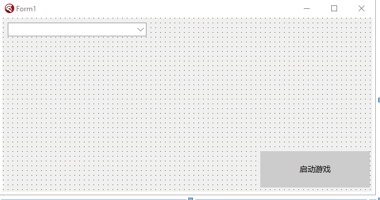
这个将作为我们程序启动时的窗口。其中，左上角我们置一个ComboBox下拉框，右下角我们置一个Button按钮。然后按钮的Caption我们定义成启动游戏字样。
然后，我们现在要做的，就是在启动器的代码部分里置几个常量，分别作为我们MC启动必须参数，参数分别如下：
const //提示，这里需要根据玩家的需要自己填入。
JavaPath = '<你的Java路径【精确到javaw】>'; //由于Delphi里面没有用\格式化输出，因此各位可以尽情的只输一个\即可，无需输入两个\来格式化
MinecraftPath = '<你的Minecraft根路径>'; //末尾不用输入\符号
MaxMemory = '<最大内存>';
UserName = '<玩家名称——离线>'; //后期会做微软登录的
VersionType = '<版本类型——启动MC后显示在左下角的类型>'; //就是这里，启动器一般会给予玩家一个自定义信息进行输入。
Wt = '<窗口宽度>'; //可选
Ht = '<窗口高度>'; //可选
这个常量代码添加的位置在单元文件开头implementation上方，var Form1的上方，type class的下方部位顶头添加即可。当然，如果你想做输入框进行输入也可以哦！
知道为什么我要写常量而不是写输入框吗？因为我为了节省本文的篇幅，这些输入路径、内存就交给玩家自己处理了。这些常量供我们后期启动游戏时使用。
然后，我们回到窗体视图，双击窗体进入FormCreate事件。我们要在主窗体显示之前将【<-MinecraftPath->\versions\】下的所有文件夹名称全部读取进列表框里。
记住，我所说的双击窗体进入的事件指的是窗体刚被创建时的事件，此时所有的控件都已经生成完毕了。大家如果用的类似Python这种非可视化GUI编程的语言，一定要记住先创建控件之后，再在窗体显示之前执行一次FormCreate窗体创建事件即可。
- ps：说实话，做这步操作只需要一点点扫描文件夹的编程知识即可完成，但我依旧还是得和大家说明一下。
然后，我们在FormCreate里面输入这一串代码，具体内容我会有注释
procedure TForm1.FormCreate(Sender: TObject);
var
Files: TArray<String>; //在方法开头建立一个数组类型的变量。
begin
var MinecraftVersionPath := MinecraftPath + '\versions'; //获取完整的MinecraftPath\versions路径
Files := TDirectory.GetDirectories(MinecraftVersionPath); //给这个数组类型的数据添加进versions下所有文件的绝对路径。
for var I in Files do //使用for-each循环，遍历数组内的内容。
ComboBox1.Items.Add(ExtractFileName(I)); //在下拉框的元素Item中依次添加进【使用ExtractFileName】后的文件名称。
end;
我们只需要将MinecraftPath填入清楚，即可。记住，在Delphi里面，使用TDirectory.GetDirectories('文件夹路径')时，给数组变量添加的是所有文件夹的绝对路径哦！
如果我们使用TDirectory.GetFiles，则是获取所有文件的绝对路径。这就是区别。
ExtractFileName的意思就是获取文件名，例如我有个文件是这样的【E:\example\exam.txt】，那么用这个函数则可以获取到【exam.txt】，类似的还有ExtractFileDir和ExtractFilePath，分别可以获取上述文件中的以下字符串【E:\example】【E:\example\】，简单来说，Dir函数最后面没有右划号，而Path函数有。具体情况的还是看你程序后期是否需要以文件路径去拼接另外一个字符串。从而得到另一个文件路径。
哦，对了，如果你们将这串代码直接复制粘贴到代码文件中，可能会发生报错。如果报错了，我们只需要在单元开头部分的uses底下，引用一个单元文件，即可使用TDirectory代码：
uses
IOUtils;
我这里简写了，当然，在你们那里，你们不可以删掉原来就有的所有引用的单元文件。只需要在逗号后面输入上面的单元文件即可导入。
然后，此时此刻，大家应该就能看到了，我们成功的导入了Minecraft所有文件夹。
各位完全可以使用适合自己的编程语言来写这一串逻辑哦。其实这一串逻辑在Delphi里面非常简单，主要是我之前也很少用C#、Java这种语言进行文件操作，基本上用的都是Delphi语言，因此，我不是很清楚各位使用别的编程语言时遇到了什么困难。大家只需要照着我代码的逻辑编写即可！
本页将教会大家如何查询并且拼接JVM和Arguments默认启动参数
首先，在Minecraft的版本中，分为这两类启动版本：
- ≤1.12.2
- ≥1.13
这两种启动版本的Json文件很不一样，同时，还有一个地方要注意：
- ≤1.12.2——LiteLoader
我将会直接将其统一放进同一个函数里，因为只需要判定某一个参数即可。所以几乎无需多余的判定。
首先我们要点进Minecraft的1.19.4的版本json文件进行查看。我们可以看到内容大致如下：
{
"arguments": {
"game": [ //有rule的参数为额外参数，直接拼接在game列表中的则是默认参数
"--username",
"${auth_player_name}",
... //其为默认游戏参数【game默认参数在开头】
{
"rules": [
{
"action": "allow",
"features": {
"is_demo_user": true
}
}
],
"value": "--demo"
},
... //其为额外游戏参数
],
"jvm": [
{ //jvm的额外参数在顶上，默认参数在下面。
/*
有部分JVM参数包含rules键值，我们在拼接启动参数的时候需要考虑这种情况：
1.rules是一个Json列表的形式
2.如果rules里面有一个值的action为disallow，则在这以下的os键值对里的name所指代的操作系统无需拼接此参数。反之亦然。
3.有些rules键值里面的value是个数组类型，我们在实际情况下也应该考虑这种情况。
*/
"rules": [
{
"action": "allow",
"os": {
"name": "osx"
}
}
],
"value": [
"-XstartOnFirstThread"
]
},
... //其为额外jvm参数，其中由os键中的osx代表的是Macos的参数，linux则是Linux的参数，windows则是Windows参数，arch: x86则代表了32位系统。
// 然后，version键值只在Windows出现，而且：【^10\】代表了其需要Windows 10版本以上才需要添加。
"-Djava.library.path=${natives_directory}",
... //其为默认jvm参数
]
},
"assetIndex": {
"id": "3",
"sha1": "0e432ccd3ef65853034193811d92ac47d0b7ca5d",
"size": 409894,
"totalSize": 555638139,
"url": "https://piston-meta.mojang.com/v1/packages/0e432ccd3ef65853034193811d92ac47d0b7ca5d/3.json"
}, //其为Minecraft所需要的资源索引json文件。
"assets": "3",
"complianceLevel": 1,
"downloads": {
"client": {
"sha1": "958928a560c9167687bea0cefeb7375da1e552a8",
"size": 23476620,
"url": "https://piston-data.mojang.com/v1/objects/958928a560c9167687bea0cefeb7375da1e552a8/client.jar"
},
... //其为Minecraft所需要的原版jar文件和原版mapping映射表下载地址。
},
"id": "1.19.4", //其为Minecraft的游戏id【一般随着Minecraft的版本命名而区分。】
"javaVersion": {
"component": "java-runtime-gamma",
"majorVersion": 17
}, //其为Minecraft所需要的Java运行时环境，component为MC官方提供的下载源中需要的环境依赖。【这个后期说道自动下载Java时会说道。】
"libraries": [
{
"downloads": {
"artifact": {
"path": "ca/weblite/java-objc-bridge/1.1/java-objc-bridge-1.1.jar",
"sha1": "1227f9e0666314f9de41477e3ec277e542ed7f7b",
"size": 1330045,
"url": "https://libraries.minecraft.net/ca/weblite/java-objc-bridge/1.1/java-objc-bridge-1.1.jar"
}
},
... //其为Minecraft所需的所有类库文件，其中包含了资源名称，downloads键下还有artifact键，里面有资源保存路径、资源sha1、资源大小、资源下载网址等。
/*
有部分类库文件包含rules键值，我们在拼接启动参数的时候需要考虑这种情况：
1.rules是一个Json列表的形式
2.如果rule里面有一个值的action为disallow，则在这以下的os键值对里的name所指代的操作系统无需拼接此参数。反之亦然。
*/
}
],
"logging": {
"client": {
"argument": "-Dlog4j.configurationFile=${path}",
"file": {
"id": "client-1.12.xml",
"sha1": "bd65e7d2e3c237be76cfbef4c2405033d7f91521",
"size": 888,
"url": "https://piston-data.mojang.com/v1/objects/bd65e7d2e3c237be76cfbef4c2405033d7f91521/client-1.12.xml"
},
"type": "log4j2-xml"
} //Minecraft Log4J配置文件路径，这个一般时用于记录玩家客户端执行的，一般我们不需要将其包含进启动参数内，因此这一整个logging键值没用。
},
"mainClass": "net.minecraft.client.main.Main", //Minecraft主类【需要添加进启动参数】
"minimumLauncherVersion": 21, //Minecraft最小启动器版本【一般指的是官启版本（猜的】
"releaseTime": "2023-03-14T12:56:18+00:00", //发布时间
"time": "2023-03-14T12:56:18+00:00", //与上面相同
"type": "release" //发布类型【如果是snapshot，就会显示snapshot，但1.19.4是release发布版。】
}
以上是我们的Minecraft原版Json文件，这个文件如何获取的晚点我会和大家娓娓道来，大家只需要先学习我们如何根据这个Json文件进行启动游戏的就好了！
在使用Delphi自带的JSON库时，大家需要在自己的头文件中引用一个单元文件。键入以下单元即可：
uses
JSON;
然后，首先我们要写一个函数，这个函数的名字就叫做：【selectParam】
我们将这个函数放进我们的自制类里面。可以选择放在private，也可以选择放在public，那我这里就选择放在public里了吧！
type
TForm1 = class(TForm)
Button1: TButton;
ComboBox1: TComboBox;
procedure FormCreate(Sender: TObject);
private
{ Private declarations }
public
{ Public declarations }
end;
Launcher = class
private
public
function SelectParam(json: TJsonObject): string;
end;
在Delphi里面，函数的意思是有返回值的方法，使用function定义，而过程是没有返回值的方法，用procedure定义。我们上面定义的是function，因此这是个函数。
然后，我们的参数列表中填入的是一个TJsonObject类型的，意味着我们这个参数是一个Json对象。我们需要将字符串转换成Json对象才能传参。
紧接着，我们就要开始实现这个函数了。我们在implementation下方依旧如同上方一样实现上述Launcher类里的SelectParam函数。请看示例
function Launcher.SelectParam(json: TJsonObject): string;
begin //开头的函数得与你在类中定义的函数一致。
result := ''; //此处设置该函数返回值默认值为空值。
var param := '-XX:+UseG1GC ' + //每一个参数末尾都需要加上空格。
'-XX:-UseAdaptiveSizePolicy ' +
'-XX:-OmitStackTraceInFastThrow ' +
'-Dfml.ignoreInvalidMinecraftCertificates=True ' +
'-Dfml.ignorePatchDiscrepancies=True ' +
'-Dlog4j2.formatMsgNoLookups=true '; //这些都是我们需要的默认JVM参数。因为PCL2添加了这些参数，仅此而已啦！
// param := param + additionJVM;
//该处，如果你想为Minecraft手动添加额外JVM参数，可以在这里写。同时参数也可以多添加一个additionJVM，类型String来添加。也可以添加全局变量。我就不添加了，我不太想。
param := param + '-XX:HeapDumpPath=MojangTricksIntelDriversForPerformance_javaw.exe_minecraft.exe.heapdump '; //由于我们这个启动器面向的是Windows，自然，对于Windows的这个额外JVM参数，我们需要将其当作默认JVM参数添加进入。
if Win32MajorVersion = 10 then param := param + '"-Dos.name=Windows 10" -Dos.version=10.0 ' ;
//该处使用了Delphi内置函数Win32MajorVersion来判断电脑的操作系统版本，如果是Windows10，则拼接下面两个参数，反之不拼接。
var judge: boolean; //在外部定义一个judge判断布尔变量
var argu: TJsonObject; //在外部定义一个argu的Json对象变量。
try
judge := false; //给外部定义的judge变量初值设为false。
argu := json.GetValue('arguments') as TJsonObject; //通过传入的Json参数获取里面的arguments键，然后将其转换成Json对象形式。传到外面。
var jvm := argu.GetValue('jvm') as TJsonArray; //再通过arguments对象进入jvm键值对里面，将其转换成Json数组。
if jvm.Count = 0 then raise Exception.Create('No jvm arguments'); //如果jvm列表内元素为空，则抛出报错，执行except语句，将judge返回true。
for var i in jvm do begin //使用循环遍历jvm参数
if i.ToString.IndexOf('rules') <> -1 then continue; //一旦遇到了rules键值，则判定此为额外JVM参数，故暂不添加进param中。
param := param + i.Value.Trim + ' '; //末尾需要加上空格。并且需要去除掉在默认参数中的空格。
end;
except
judge := true; //如果找不到arguments键，或者arguments键中的jvm值不存在，或者为空，则抛出报错。
end;
if judge then begin //如果judge为true，意味着上面jvm参数拼接失败，则执行。
param := param + ' -Djava.library.path=${natives_directory} -cp ${classpath} ';
judge := false;
end; //上述代码为Minecraft主动添加了JVM参数，此处一般是用于判断版本是否小于1.12.2。
param := param + '${authlib_injector_param}'; //这里需要添加一个Authlib-Injector，这个我们晚点再说！晚点到登录到Authlib-Injector时再说吧！
try
param := param + '-Xmn256m -Xmx' + MaxMemory + 'm ' + json.GetValue('mainClass').Value + ' ';
//上述代码给MC启动参数总添加了几行默认游戏参数，其中包括了最小内存、最大内存、主类。且如果无法从json文件中找到mainClass键，则抛出报错。错误见下。
except
messagebox(0, '无法拼接mainClass主类参数，参数拼接失败。', '无法拼接参数', MB_ICONERROR); //此处显示一个信息框，无法拼接主类参数。
exit; //退出该函数。
end;
try //该try语句是适配1.13版本以上的版本。
var game := argu.GetValue('game') as TJsonArray; //进入了arguments后，我们再接着通过这个arguments对象进入game键值对里面，然后将其转换成Json数组形式。
if game.Count = 0 then raise Exception.Create('No game arguments');
for var i in game do begin //使用相同的手段将game参数拼接到jvm参数的后面。
if i.ToString.IndexOf('rules') <> -1 then continue;
param := param + i.Value.Trim + ' ';
//末尾需要加上空格。并且需要去除掉在默认参数中的空格。目的请看Fabric的版本Json文件。其中有一个-DFabricMcEmu键，后面跟了空格，因此这里需要对此进行空格清除。
end;
except
end;
try //在这里实则判断param中是否有minecraftArguments值，以适配1.12.2以下版本
var mcargu := json.GetValue('minecraftArguments').Value; //开始判断是否有
if mcargu = '' then raise Exception.Create('No 1.12.2 Arguments');
//如果没有这个键，或者这个键为空，则抛出报错，自动执行except语句，然后except语句内啥也没有，就接着往下执行。
param := param + mcargu; //此处如果有则拼接这个参数。
//json中的键值对'minecraftArguments'就是在1.12.2以下版本所用的启动参数。这一串代码实则判断假如MC版本小于等于1.12.2，则主动拼接这个参数。
except //此处不用设置judge了。
end;
if judge then begin //此处为当未能拼接任意默认游戏参数时抛出的报错。
messagebox(0, '无法拼接默认游戏参数，参数拼接失败。', '无法拼接参数', MB_ICONERROR); //这里置一个信息框。
exit; //退出该函数
end;
result := param; //将参数当作返回值返回。
end;
我相信，这些注释足以使玩家明白其中的道理。如果大家觉得用电子书没有换行看着太麻烦，大家可以将其复制进记事本中慢慢观看哦！
噢，好像发现了一件事！我通过查看PCL2的源码时，发现了一个非常神奇的一幕：请看截图： 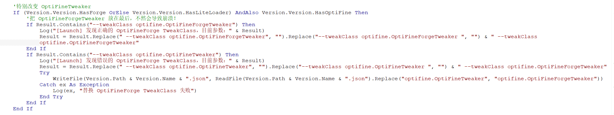
我们在这个截图里，发现了其实在拼接Optifine Forge和仅安装了Optifine的时候，参数里可能会有两个或以上的--tweakClass作为启动参数，然后Optifine可能不会是最后一个，因此我们需要手动将该参数放到最后，这样才不会启动失败！
我们首先来尝试一下：
...//前面的代码：我们直接在我们上面的result := param的上面一句直接写：
if param.Contains('--tweakClass optifine.OptiFineTweaker') or param.Contains('--tweakClass optifine.OptiFineForgeTweaker') then begin
param := param.Replace('--tweakClass optifine.OptiFineTweaker', '').Replace('--tweakClass optifine.OptiFineForgeTweaker', '') + '--tweakClass optifine.OptifineForgeTweaker';
end;
result := param;
简单来说，上面的函数我们一句参数，我们将optifine的tweakClass放到最后了！就是首先replace掉所有的--tweakClass optifine的，然后将正确的参数拼接在后面。
我们上述的代码中，其实已经将所有的版本都支持进去了，包括forge、Fabric、Quilt、LiteLoader等都可以正常的拼接启动参数了。包括MC的从远古版本到最新版本的启动参数支持都在这一个函数里哦！
大家只需要看个逻辑就好，完全可以翻译成自己的编程语言进行开发哦！现在大家能领略Delphi的魅力了吗？与C#、Java等语言是否觉得比较相同呢？
这一章我们要来教如何获取cp后面跟随的${classpath}值。
想必，大家在看过了启动参数后，就会发现怎么这么长？
其实，启动参数中绝大部分的篇幅都被${classpath}这个字符串模板的替换给占掉了。
让我们细看一下1.19.4的启动参数吧！【ps：下面我只列举出cp后面的东西。我自己用手格式化了一遍。】
-cp "
<MC原路径>\libraries\com\github\oshi\oshi-core\6.2.2\oshi-core-6.2.2.jar;
<MC原路径>\libraries\com\google\code\gson\gson\2.10\gson-2.10.jar;
<MC原路径>\libraries\com\google\guava\failureaccess\1.0.1\failureaccess-1.0.1.jar;
<MC原路径>\libraries\com\google\guava\guava\31.1-jre\guava-31.1-jre.jar;
<MC原路径>\libraries\com\ibm\icu\icu4j\71.1\icu4j-71.1.jar;
<MC原路径>\libraries\com\mojang\authlib\3.18.38\authlib-3.18.38.jar;
<MC原路径>\libraries\com\mojang\blocklist\1.0.10\blocklist-1.0.10.jar;
<MC原路径>\libraries\com\mojang\brigadier\1.0.18\brigadier-1.0.18.jar;
<MC原路径>\libraries\com\mojang\datafixerupper\6.0.6\datafixerupper-6.0.6.jar;
<MC原路径>\libraries\com\mojang\logging\1.1.1\logging-1.1.1.jar;
<MC原路径>\libraries\com\mojang\patchy\2.2.10\patchy-2.2.10.jar;
<MC原路径>\libraries\com\mojang\text2speech\1.13.9\text2speech-1.13.9.jar;
<MC原路径>\libraries\com\mojang\text2speech\1.13.9\text2speech-1.13.9-natives-windows.jar;
<MC原路径>\libraries\commons-codec\commons-codec\1.15\commons-codec-1.15.jar;
<MC原路径>\libraries\commons-io\commons-io\2.11.0\commons-io-2.11.0.jar;
<MC原路径>\libraries\commons-logging\commons-logging\1.2\commons-logging-1.2.jar;
<MC原路径>\libraries\io\netty\netty-buffer\4.1.82.Final\netty-buffer-4.1.82.Final.jar;
<MC原路径>\libraries\io\netty\netty-codec\4.1.82.Final\netty-codec-4.1.82.Final.jar;
<MC原路径>\libraries\io\netty\netty-common\4.1.82.Final\netty-common-4.1.82.Final.jar;
<MC原路径>\libraries\io\netty\netty-handler\4.1.82.Final\netty-handler-4.1.82.Final.jar;
<MC原路径>\libraries\io\netty\netty-resolver\4.1.82.Final\netty-resolver-4.1.82.Final.jar;
<MC原路径>\libraries\io\netty\netty-transport-classes-epoll\4.1.82.Final\netty-transport-classes-epoll-4.1.82.Final.jar;
<MC原路径>\libraries\io\netty\netty-transport-native-unix-common\4.1.82.Final\netty-transport-native-unix-common-4.1.82.Final.jar;
<MC原路径>\libraries\io\netty\netty-transport\4.1.82.Final\netty-transport-4.1.82.Final.jar;
<MC原路径>\libraries\it\unimi\dsi\fastutil\8.5.9\fastutil-8.5.9.jar;
<MC原路径>\libraries\net\java\dev\jna\jna-platform\5.12.1\jna-platform-5.12.1.jar;
<MC原路径>\libraries\net\java\dev\jna\jna\5.12.1\jna-5.12.1.jar;
<MC原路径>\libraries\net\sf\jopt-simple\jopt-simple\5.0.4\jopt-simple-5.0.4.jar;
<MC原路径>\libraries\org\apache\commons\commons-compress\1.21\commons-compress-1.21.jar;
<MC原路径>\libraries\org\apache\commons\commons-lang3\3.12.0\commons-lang3-3.12.0.jar;
<MC原路径>\libraries\org\apache\httpcomponents\httpclient\4.5.13\httpclient-4.5.13.jar;
<MC原路径>\libraries\org\apache\httpcomponents\httpcore\4.4.15\httpcore-4.4.15.jar;
<MC原路径>\libraries\org\apache\logging\log4j\log4j-api\2.19.0\log4j-api-2.19.0.jar;
<MC原路径>\libraries\org\apache\logging\log4j\log4j-core\2.19.0\log4j-core-2.19.0.jar;
<MC原路径>\libraries\org\apache\logging\log4j\log4j-slf4j2-impl\2.19.0\log4j-slf4j2-impl-2.19.0.jar;
<MC原路径>\libraries\org\joml\joml\1.10.5\joml-1.10.5.jar;
<MC原路径>\libraries\org\lwjgl\lwjgl-glfw\3.3.1\lwjgl-glfw-3.3.1.jar;
<MC原路径>\libraries\org\lwjgl\lwjgl-glfw\3.3.1\lwjgl-glfw-3.3.1-natives-windows.jar;
<MC原路径>\libraries\org\lwjgl\lwjgl-glfw\3.3.1\lwjgl-glfw-3.3.1-natives-windows-x86.jar;
<MC原路径>\libraries\org\lwjgl\lwjgl-jemalloc\3.3.1\lwjgl-jemalloc-3.3.1.jar;
<MC原路径>\libraries\org\lwjgl\lwjgl-jemalloc\3.3.1\lwjgl-jemalloc-3.3.1-natives-windows.jar;
<MC原路径>\libraries\org\lwjgl\lwjgl-jemalloc\3.3.1\lwjgl-jemalloc-3.3.1-natives-windows-x86.jar;
<MC原路径>\libraries\org\lwjgl\lwjgl-openal\3.3.1\lwjgl-openal-3.3.1.jar;
<MC原路径>\libraries\org\lwjgl\lwjgl-openal\3.3.1\lwjgl-openal-3.3.1-natives-windows.jar;
<MC原路径>\libraries\org\lwjgl\lwjgl-openal\3.3.1\lwjgl-openal-3.3.1-natives-windows-x86.jar;
<MC原路径>\libraries\org\lwjgl\lwjgl-opengl\3.3.1\lwjgl-opengl-3.3.1.jar;
<MC原路径>\libraries\org\lwjgl\lwjgl-opengl\3.3.1\lwjgl-opengl-3.3.1-natives-windows.jar;
<MC原路径>\libraries\org\lwjgl\lwjgl-opengl\3.3.1\lwjgl-opengl-3.3.1-natives-windows-x86.jar;
<MC原路径>\libraries\org\lwjgl\lwjgl-stb\3.3.1\lwjgl-stb-3.3.1.jar;
<MC原路径>\libraries\org\lwjgl\lwjgl-stb\3.3.1\lwjgl-stb-3.3.1-natives-windows.jar;
<MC原路径>\libraries\org\lwjgl\lwjgl-stb\3.3.1\lwjgl-stb-3.3.1-natives-windows-x86.jar;
<MC原路径>\libraries\org\lwjgl\lwjgl-tinyfd\3.3.1\lwjgl-tinyfd-3.3.1.jar;
<MC原路径>\libraries\org\lwjgl\lwjgl-tinyfd\3.3.1\lwjgl-tinyfd-3.3.1-natives-windows.jar;
<MC原路径>\libraries\org\lwjgl\lwjgl-tinyfd\3.3.1\lwjgl-tinyfd-3.3.1-natives-windows-x86.jar;
<MC原路径>\libraries\org\lwjgl\lwjgl\3.3.1\lwjgl-3.3.1.jar;
<MC原路径>\libraries\org\lwjgl\lwjgl\3.3.1\lwjgl-3.3.1-natives-windows.jar;
<MC原路径>\libraries\org\lwjgl\lwjgl\3.3.1\lwjgl-3.3.1-natives-windows-x86.jar;
<MC原路径>\libraries\org\slf4j\slf4j-api\2.0.1\slf4j-api-2.0.1.jar;
<MC原路径>\versions\1.19.4\1.19.4.jar //请注意，我们看到这里有一个在versions，也就是版本文件夹下面的主类jar也被包含进了cp-libraries库，在下面我会和大家具体说明这种情况的。
"
我们仔细的看看这双引号内的内容，我们会发现这其中包含了许许多多的类库。其中全部都是来自原版Json文件中的【libraries】键值下的类库。
反观libraries，这是一个列表元素，里面包含了很多对象，我们可以使用for循环遍历这个列表，然后挨个取出里面的对象，然后挨个进行分析即可了！
首先，依旧的，我们写一个函数，这个函数名字叫做：【GetCPLibraries】，放在public里面
Launcher = class
private
public
function SelectParam(json: TJsonObject): string;
function GetCPLibraries(json: TJsonObject; mcpath, slpath: string): string;
end;
让我来解释一下函数的三个参数分别代表什么意思【Delphi使用分号分隔参数而非逗号。】
| 参数 | 功能 |
|---|---|
| 参数1 | Json文件。 |
| 参数2 | mc源文件的路径。 |
| 参数3 | mc-version-具体某个版本的路径 |
然后，我们就开始写咯，依旧的，在implementation下方写上我们的实现函数。实现函数写的行数可以在上面也可以在下面，随便在哪都可以。
注意，这里的mcpath和slpath的末尾都不允许有【/】或者【\】，否则可能导致拼接失败。
function Launcher.GetCPLibraries(json: TJsonObject; mcpath, slpath: string): string;
begin
var sb := TStringBuilder.Create; //定义一个可变长度字符串
var Yuan := TStringList.Create; //定义一个原本拼接的字符串集合
var LibNo := TStringList.Create; //定义一个去除所有重复的字符串组合。
var NoRe := TStringList.Create; //定义一个去除所有版本号低的字符串集合。
var ReTemp := TStringList.Create; //定义一个去除版本号底时的临时字符串集合。
try //将libraries内的元素转成Json列表格式然后遍历。
for var i in (json.GetValue('libraries') as TJsonArray) do begin
var key := i as TJsonObject; //将每个取出的元素定义成Json对象格式。
var judge := true; //定义一个判断
try
var rl := key.GetValue('rules') as TJsonArray; //获取某一个元素的rule值。
for var J in rl do begin //下面开始判断rule值里面的action的os是否支持windows
var r1 := J as TJsonObject;
var an := r1.GetValue('action').Value; //获取action值
if an = 'allow' then begin //如果是allow，则执行
var r2 := r1.GetValue('os') as TJsonObject;
var r3 := r2.GetValue('name').Value;
if r3 <> 'windows' then begin judge := false; end; //如果支持windows，则没有continue，反之则为false
end else if an = 'disallow' then begin //如果是disallow，则执行
var r2 := r1.GetValue('os') as TJsonObject;
var r3 := r2.GetValue('name').Value;
if r3 = 'windows' then begin judge := false; end;
end;
end;
except
end;
try
var r1 := key.GetValue('natives').ToString; //判断里面是否有natives键。
judge := false; //如果有，则judge变为false，如果没有，则触发报错，并且judge保持为true。
except end;
try
var r1 := key.GetValue('downloads') as TJsonObject; //判断其downloads键中是否有classifiers键，如果有，则这个类库默认判断成natives类库。
var r2 := r1.GetValue('classifiers').ToString;
judge := false; //judge变为false表示此类库不能被添加
var r3 := r1.GetValue('artifact').ToString;//如果其downloads键中不仅有classifiers键，还有artifact键，则这个类库也可以被拼接。
judge := true; //judge重新变为true
except end;
if not judge then continue; //此时开始判断judge是否决定跳过此类。
try
Yuan.Add(key.GetValue('name').Value);
//为最后的Yuan添加Json中的name值。为什么不直接添加downloads->artifact->path呢？这个我们晚点再说。
except
messagebox(0, '你的Json中的某一个键值甚至连name键都没有，已触发报错！', 'json中不包含name键', MB_ICONERROR);
exit;//上述代码，如果Json中连name都不包含，则报错。【多半是用于处理空大括号的。】
end;
end;//给Yuan去重后装进LibNo中。【由于我懒，因此没有给原函数直接去重，不过反正最后都要free释放掉资源的，不怕内存泄漏！】
for var i in Yuan do
if LibNo.IndexOf(i) = -1 then // 去除重复
LibNo.Add(i);
for var i in LibNo do begin //在这里将去除版本号较低的类库
var KN := i.Replace('.', '').Replace(':', '').Replace('-', '').Replace('@jar', '').Replace('@zip', ''); //添加一个去除了【. : -】字符后的名称。
var KW := ExtractNumber(KN, false); //摘取字符【这里用到了一个自制函数，晚点我们再实现这个函数。】
var KM := ExtractNumber(KN, true); //摘取数字
if ReTemp.IndexOf(KW) = -1 then begin //与上面的判断重复一致，只不过这里是ReTemp和已经摘取字符后的LibNo元素。
ReTemp.Add(KW);
NoRe.Add(i); //这里需要给NoRe字符串集合直接添加原类库名称。
//下方，如果存在字符一样的类库名称，则执行。并且判断此类库名称摘取数字后与上方的摘取数字的类库名称是否比它大，如果大，则执行，反之则跳过。
end else if strtoint64(ExtractNumber(NoRe[ReTemp.IndexOf(KW)], true)) <= strtoint64(KM) then begin
NoRe.Delete(ReTemp.IndexOf(KW)); //删除旧元素
NoRe.Insert(ReTemp.IndexOf(KW), i); // 添加新元素
end;
end;
//此时此刻，这个NoRe字符串类库列表，就是我们最终获取到的需要拼接到cp参数的列表了。
//我们只需要将其添加进我们的可变字符串里就好了。
for var I in NoRe do sb.Append(Concat(mcpath, '\\libraries\\', ConvertNameToPath(I), ';')); // 这里用到了自制函数：将名称转换为路径。具体名称格式怎么转换成路径，晚点我会说的。Concat的意思是将所有参数拼接起来，与字符串的+号一致，是Delphi内置函数。
//【说一句，由于我用的是cs让我的代码有高亮显示（pascal在html没有），因此对于字符串内的右划号可能比较敏感。因此我会添加双右划号。大家在实际用Delphi写代码的时候，必须要把双右划号改成单右划号。】
//下方是拼接最后一个版本文件夹中的jar文件，这个在cp函数里经常使用得到。
sb.Append(GetRealPath(slpath, '.jar')); // 这里依旧用了一个自制函数，获取<第一个参数>路径下的第一个<文件标志=例如文件后缀名>文件。
result := sb.ToString; //将最终的资源返回。
finally
sb.Free; //在finally模块里释放资源。
Yuan.Free;
LibNo.Free;
NoRe.Free;
ReTemp.Free;
end;
end;
好了，以上便是我们如何获取类库。其中，我们在里面使用了几个函数，分别是【ConvertNameToPath、GetMCRealPath、ExtractNumbers】
getRealPath是什么意思呢？其意思就是指传入一个文件夹名称，然后通过遍历文件夹内容从而找到文件名中对于后一个参数的标志性名称【例如文件后缀】。因为我们在后期进行下载MC的时候，可能会在无法检测到jar、json的时候对此报错。而我们要支持玩家对json、jar进行改名而不用修改父文件夹名称后再修改jar、json文件夹名称。
这两个类库是什么意思呢？首先，ConvertNameToPath这个东西，我们需要看看Json文件中，对于downloads->artifact->path，然后再看看name键，它们是怎么拼接的。
为什么我们不直接读取path键呢？因为在Forge、Fabric、Quilt的libraries类库中，是没有downloads键的，只有一个name和一个url键。因此我们需要根据特定的规则来拼接这个name参数。【具体可以自己下载一个forge、fabric、quilt自己看。】
ExtractNumber其实就是填入两个参数，第一个参数填入一个原字符串，第二个参数填入一个布尔值，如果第二个参数为真，则摘取字符串中所有的数字，如果第二个参数为假，则摘取所有字符。
我们开始书写代码：
Launcher = class
private
public
function SelectParam(json: TJsonObject): string;
function GetCPLibraries(json: TJsonObject; mcpath, slpath: string): string;
function ConvertNameToPath(name: string): string;
function GetRealPath(path, suffix: string): string;
function ExtractNumber(str: string; bo: Boolean): string;
end;
上述我们在类里面又多声明了几个函数。
function Launcher.ConvertNameToPath(name: string): string;
begin
var c1 := TStringList.Create; // 给所有的变量划初始值。此均为临时变量。
var c2 := TStringList.Create;
var all := TStringList.Create;
var sb := TStringBuilder.Create;
try //以上四个字符串列表均为临时变量，大家只需要看我接下来怎么写的就好了
var hou: TArray<String> := SplitString(name, '@'); //先按照@切割一遍
name := hou[0];
var n1 := name.Substring(0, name.IndexOf(':')); //切割字符串，找到第一个冒号以前的字符。
var n2 := name.Substring(name.IndexOf(':') + 1, name.Length);//切割字符串，找到第一个冒号以后的字符
ExtractStrings(['.'], [], pchar(n1), c1); //切割字符串，将前者按照.切割。这里用到了一个Delphi内置函数ExtractStrings。其函数内容专门用于切割字符串。
//第一个参数是切割的符号，第二个参数默认为空，第三个参数为需要切割的字符串的指针类型【用pchar写即可】，第四个参数则填入一个StringList字符串列表即可。
for var I in c1 do all.Add(Concat(I, '\\')); //将前者第一个冒号以前的字符，临时变量添加进all，注意这里我用了双右划号，大家如果是用Delphi写程序，记得将其改成一个即可。以下均如此。
ExtractStrings([':'], [], pchar(n2), c2); //将后者第一个冒号以后的字符按照:切割
for var I := 0 to c2.Count - 1 do begin //添加进all，这里需要判断
if c2.Count >= 3 then begin //如果冒号有3个同样的字符，则执行。此处适配了1.19-pre1以上的版本。在此版本以上，natives将直接装进cp后缀，且无需解压。
if I < c2.Count - 1 then begin //将最后一个数据脱离出all
all.Add(Concat(c2[I], '\\'));
end;
end else all.Add(Concat(c2[I], '\\')); //否则直接添加
end;
for var I := 0 to c2.Count - 1 do begin //接着再按照namt开始拼接。
if I < c2.Count - 1 then begin //无论元素是否有3个，将最后一个数据脱离出all
all.Add(Concat(c2[I], '-')); //按照-进行连接，具体请看downloads->artifact->path
end else begin
try
all.Add(Concat(c2[I], '.', hou[1])); //最后一个数据本来是jar的，但是由于neoforge部分的部分name末尾有@jar，因此这里需要这样拼接。。
//自然，在neoforge里，我猜测可能会有@zip等的一些后缀，因此就暂时先这样！
except
all.Add(Concat(c2[I], '.jar')); //如果末尾没有@jar，也就是获取hou[1]时出现报错，就直接将其拼接.jar即可！
end;
end;
end;
for var I in all do sb.Append(I); //最后，将all中所有的数据添加进sb可变字符串中。
result := sb.ToString; //最后将sb返回即可。
finally
c1.Free; //最终依旧是要把这几个参数给释放掉。
c2.Free;
all.Free;
sb.Free;
end;
end;
首先，我并不知道我这样写是否是最简单的写法，但我敢肯定，这样写一定是对的。
然后是ExtractNumber：
function Launcher.ExtractNumber(str: String; bo: Boolean): String;
begin
var Temp := ''; // 设置temp
if str = '' then // 判断长度
begin
result := ''; // 如果长度等于0，则返回空
exit;
end;
for var I in str do // for循环判断长度
begin
if bo then // 如果参数bo为真，则执行，否则执行以下
begin
if I.IsNumber then // 判断是否为数字
Temp := Concat(Temp, I); // 是则添加
end
else
begin
if not I.IsNumber then // 判断是否不为数字
Temp := Concat(Temp, I); // 不是则添加
end;
end;
result := Temp;
end;
这个函数算是一个非常简单的字符串处理了，使用了I.IsNumber判断是否为数字。
好了，然后我们再看看GetRealPath的写法吧！自然，既然有获取文件的真实路径，那在将来肯定会有获取真实文件夹的路径【用于直接在版本文件夹中获取到natives文件夹。】但是现在我们还没教到这部分呢！
//此种方式适用于找寻文件。
function Launcher.GetRealPath(path, suffix: string): string;
var
Files: TArray<string>;//在方法开头定义一个string数组，用来接收
begin
//由于Json文件在版本文件夹中可能存在不止一个，并且名称都不一定。因此，我们需要额外对【.json】的suffix后缀进行单独判断。
result := ''; //将返回值定义为空
if DirectoryExists(path) then begin// 判断文件夹是否存在
Files := TDirectory.GetFiles(path); // 找到所有文件
for var I in Files do begin // 遍历文件
if I.IndexOf(suffix) <> -1 then begin // 是否符合条件
if suffix = '.json' then begin //此时开始单独为【.json】文件进行判断。。
var god := GetOutsideDocument(I); //获取Json文件的内容
//【这里用到了一个自制函数GetOutsideDocument，这个稍后会与大家说，且我们的教程中将与这个函数密不可分。】
try //这里给读取到json文件内容转换成Json对象。
var Root := TJsonObject.ParseJSONValue(god) as TJsonObject;
var tmp := Root.GetValue('libraries').ToString; //判断json中是否有libraries键值，这里直接用ToString判断。
var ttt := Root.GetValue('mainClass').Value; //判断json中是否有mainClass键值。
//如果大家发现了在原版json、Forge-json、Fabric-json、Quilt-json、LiteLoader-json中有任一同样拥有的键值，请立即向我发出issue。
result := I; //将返回值为I。
exit; //退出方法
except //如果没有libraries或者mainClass中的任意一值，则跳过。
continue;
end;
end else begin //如果找到了符合条件的，并且suffix不为【.json】，则直接返回。
//这里没有对原版的【.jar】后缀进行判断，因为如果真的要判断，需要解压jar，而这样会导致程序异常缓慢。
result := I;
exit;
end;
end;
end;
end;
end;
好了，以上就是最终的代码了。
在编写的过程中，我们意外的发现了，我们至始至终都没有编写过任何一个可以获取外部文件内容的函数。那我们应该如何编写这个函数呢？顺带一提，这个函数将伴随我们编写代码持续很久时间，因为很多地方都会需要用到它。
首先，哪里我们会用到这个函数呢？在我们读取MC的json文件进入我们的程序时，我们肯定需要用到这个函数，其次，就在上面了！GetRealPath！
这个函数非常简单，我们只需要非常简单的步骤即可编写成功！
然而，这个函数我们需要的是能够在程序的每一个地方都可以调用到这个函数。那怎么办？
我们直接在Form1窗体单元中的implementation上方写上即可。
function GetOutsideDocument(path: string): string;
implementation
众所周知学过Delphi的人都知道，在implementation上方写的所有【无论是type，还是const，还是var，又或者是function、procedure】类、量、函数等，都会在所有新建的单元中被共享，因此在很多时候我们都不建议将一些私有化的代码主动放在这里。
大家对于私有化的代码，可以在type中定义一个class，然后在class中的private代码块下面添加我们的私有化代码。这样的话我们只能在该类中适用。又或者是在implementation下方定义我们的私有函数。因为如果在下方定义私有变量、类、函数等，就只能在【当前单元文件】中被适用而无法被共享出去了。
接下来我们开始实现这个代码。首先，如果不是隶属于类的变量、函数等，前方是不需要加<类名>.的。
function GetOutsideDocument(path: string): string;
begin
result := ''; //将函数初始返回值定义为空。
var ss := TStringStream.Create('', TEncoding.UTF8, false); //定义一个字符串流。用于存储读取文件后的内容。
try
if FileExists(path) then begin //判断文件是否存在，如果存在，则执行，否则不执行。这里使用了Delphi内置函数【FileExists】，可以正常拿出使用。
ss.LoadFromFile(path); //直接读取
result := ss.DataString; //返回值设定为字符串流中的数据。
end;
finally
ss.Free; //最后释放资源。
end;
end;
好了，那么这就是我们的获取外部文件了。现在开始，在之后的教程中，如果我有需要获取外部文件的代码，我将不再多说，直接使用这个函数即可。
那么，以上便是如何获取MC的cp-libraries库，后期在我们拼接libraries库的时候，我们直接就可以填入这个函数名，然后传入三个参数即可正常获取到所有的cp键值。
我们可以很容易就看出，这个函数获取起来异常繁琐，在GetRealPath中，在实际应用中，如果你不能确定json文件到底会被玩家命名成什么，你就应该使用这个函数，否则你不应该像上面那么写。
如果你的启动器需要适配PCL2、HMCL、BakaXL的话，你应该写的是直接读取【<版本文件夹>/<版本文件夹>.json】【以及<版本文件夹>/<版本文件夹>.jar】而不是查询里面出现过的json。
但同时，如果你需要适配PCL2、HMCL、BakaXL等，你可能需要在实现【重命名此版本名称】时注意一下，将json文件名和jar文件名一同修改成你所需要的名称。
而且，我在检测版本时，将会有很大的误会产生，例如如果我的<版本文件夹>中存在两个以上的jar文件，那么我大概率会检测失败，因为无法检测里面含有jar后缀的版本文件到底是不是游戏主jar。
以上就是我在此教程中大约出现的纰漏，这些纰漏我将交给程序员们自己尝试修复了，还是依旧的，我在这份教程里只说逻辑，不做教程。
就这样啦！
本章，我们将对Forge、Fabric、Quilt特定的JSON文件进行支持。
首先，众所周知，在Forge、Fabric、Quilt【以下简称模组加载器】中，原版的下载MC时，部分启动器可能会直接将原有的Json文件给Get下来，而不是将模组加载器的Json与原版Json进行合并。
这时，我们就要好好的研究一下，对于模组加载器原版的Json文件到底是怎样的获取了。
然后，在这一章节，我们便可以了解为什么上一章中获取库文件我们不是直接获取downloads->artifact->path而是获取name了。
首先，让我们看看1.12.2Forge的部分Json文件吧！【ps：我选取的是1.12.2forge-2847的】
{
"id": "1.12.2-forge1.12.2-14.23.5.2847",
"time": "2019-09-10T01:22:54+0000",
"releaseTime": "1960-01-01T00:00:00-0700",
"type": "release",
"minecraftArguments": "--username ${auth_player_name} --version ${version_name} --gameDir ${game_directory} --assetsDir ${assets_root} --assetIndex ${assets_index_name} --uuid ${auth_uuid} --accessToken ${auth_access_token} --userType ${user_type} --tweakClass net.minecraftforge.fml.common.launcher.FMLTweaker --versionType Forge",
"mainClass": "net.minecraft.launchwrapper.Launch",
"inheritsFrom": "1.12.2",
"jar": "1.12.2",
"logging": {},
"libraries": [
{
"name": "net.minecraftforge:forge:1.12.2-14.23.5.2847",
"url": "https://maven.minecraftforge.net/"
},
{
"name": "net.minecraft:launchwrapper:1.12",
"serverreq": true
}
... //一大堆类库
]
}
首先，我们可以看到在这个Json文件上面，有几个非常关键的信息，首先就是我们的id键，这个键需要替换掉原版的id键，确信。
然后我们还可以看到里面有minecraftArguments键，如果大家看过Minecraft原版的1.12.2的Json文件的话，应该能理解这个的意思。但是在这里，这个键需要替换掉原版的键，因为这个键已经拥有了Minecraft在1.12.2里面原版的所有键值了。
然后嘛，mainClass也是需要替换掉原版的mainClass的，
最后，就是我们的libraries键了，这些键并不是替换掉原版的libraries键哦，而是附加在原版的libraries键后面。将这个类库所有的全部附加到原版的libraries键里面。
同时，这个libraries只有一个url键，甚至连downloads键都没有，因此，我们需要根据name的值来判断其文件目录。
那么，我们需要做的目的是什么呢？答案显而易见，我们通过查看PCL2下载的json文件，就可以得知：PCL2其实已经将我们的forge-2847文件附加到了原版的1.12.2里面了，也就是PCL2下载的是一个杂合体。
那我们应该怎么找到原版的1.12.2键呢？如果我们下载到了类似于这样的json而不是像PCL2那样的json，那该怎么办呢？
答案也很显而易见，我们需要找它的inheritsFrom键下面的原版json。其实嘛，假如我们只像PCL2那样，只是遍历一次父文件夹versions下面的所有文件夹名称，然后找到与inheritsFrom键值相同的，即可判断成功，那可真是太low了。
如上面所做，这样只是判断versions如果没有原版文件夹，那这个forge版本将会检测失败，从而抛出报错。提示玩家需要下载一次原版后，再尝试启动游戏。
我们需要做的，是不仅遍历一次versions下面的所有文件夹，而且需要检测里面版本json文件里的的id键值是否为forge的inheritsFrom值。这样，我们就可以做到精确的查询到获取原版的json文件进行拼接了。总而言之，我们做的工作，是要在兼容PCL2、HMCL、BakaXL的情况下，尽量做到更加精确，更加准确。
哦对了，还有一个地方需要判断，我们仔细的看看这个文件，里面似乎还有一个jar键，这个键指的是什么意思呢？看起来似乎与inheritsFrom键一样欸！
这个键的意思指的是原版的jar键，我们需要在当前json同级目录下，下载一个原版的主jar文件作为forge的加载项，同样是添加到启动参数cp的末尾versions的那个主jar文件。是的，就是这么简单！
好了，废话少说，我们开始看代码：
首先，第一步，我们需要写一个函数，函数名可以叫做【GetInheritsFrom】，用于判断json是否有指定键值，如果有，则返回父versions键，开始遍历文件夹，然后查询是否有符合条件的id。该函数接收两个参数，第一个是【path: String】，意思是传入我们存放json的那个文件夹路径。第二个是【suffix: String】，指的是我们需要判断的键，可以填入inheritsFrom，也可以填入jar。返回值是：【String】如果找到了inheritsFrom，则返回有这个键的父文件夹，就是【versions/[inherits]】这个文件夹。
由于这个函数是隶属于Launcher类下的，因此，我无需再写声明函数部分，大家在下文，假如看见了任何一个方法名前面加上了之前定义好的类名的话，那就在这个类里面写上该方法的声明即可。
function Launcher.GetInheritsFrom(path, suffix: string): string;
var
Dirs: TArray<String>; //定义一个查询versions下的所有子目录的数组
Files: TArray<String>; //定义一个随时可以删掉的上面子目录下的所有文件数组。
begin
result := ''; //返回值定义为空
if DirectoryExists(path) then begin //判断path是否存在，如果存在则执行。
var ph := GetRealPath(path, '.json'); //获取该path下的真实json路径。
if FileExists(ph) then begin //如果json的确存在，则执行。反之则不执行。
var Rt := TJsonObject.ParseJSONValue(GetOutsideDocument(ph)) as TJsonObject;
try //获取该json的内容，并转换成Json对象形式。
var ihtf := Rt.GetValue(suffix).Value; //判断里面是否有【第二个参数】键，如果有，则不抛出报错。如果没有，则抛出报错，返回值为原path。
if ihtf = '' then begin result := path; exit; end; //如果inheritsFrom键为空值，也是如此。
var vdir := ExtractFileDir(path); //获取path的父文件夹【也就是versions文件夹】
Dirs := TDirectory.GetDirectories(vdir); //获取该文件夹下的所有子目录，是的，这里是获取文件夹而非文件。
for var I in Dirs do begin //使用for循环遍历versions下的子目录
Files := TDirectory.GetFiles(I); //获取子目录中的所有文件
for var J in Files do begin //开始循环判断子目录中的所有文件
if RightStr(J, 5) = '.json' then begin //如果后缀为json
try //执行，将文件转换成json对象
var Rt2 := TJsonObject.ParseJSONValue(GetOutsideDocument(J)) as TJsonObject;
var jid := Rt2.GetValue('id').Value; //开始判断里面是否有id键
var tmp := Rt2.GetValue('libraries').ToString; //判断里面是否有libraries键
var ttt := Rt2.GetValue('mainClass').Value; //判断里面是否有mainClass键。
if jid = ihtf then begin //此时，开始判断如果id键等于inheritsFrom键值，则将该文件夹目录进行返回。否则跳过。
result := I;
exit; //记住了，这是返回文件夹的目录，而不是返回Json文件的路径
end;
continue; //如果不满足，则跳过。
except
continue; //如果不满足，则跳过。
end;
end;
end;
end;
except
result := path; //如果上述代码开头发生了报错，则返回值为原值。
end;
end;
end;
end;
然后呢，在这里我们使用了一个函数为RightStr，这个函数的意思是从右取字符串，第一个参数填入原字符串，第二个参数填入从右往左数的第几个之右的所有字符串。
这个是Delphi内置的一个函数，我们可以引用以下头文件使用它
uses
StrUtils;
我们可以看到，上面我们用了几次GetOutsideDocument，这是否说明了上一章说的函数可以被我们随时调用了呢？
然后，此时我们就应该可以通过inheritsFrom键获取原版的文件夹路径了。
然后嘛，我们还得再看一个东西，那就是在1.13版本以上的forge的json文件。为什么要看这个呢？因为forge在里面新增了许许多多的默认jvm和默认game参数，以及许多的类库。上面我们看的是1.12.2的，那么下面我们就要看的是1.19.4的forge的json文件了：
{
"_comment_": [
"Please do not automate the download and installation of Forge.",
"Our efforts are supported by ads from the download page.",
"If you MUST automate this, please consider supporting the project through https://www.patreon.com/LexManos/"
],
"id": "1.19.4-forge-45.0.43",
"time": "2023-04-07T06:24:13+00:00",
"releaseTime": "2023-04-07T06:24:13+00:00",
"type": "release",
"mainClass": "cpw.mods.bootstraplauncher.BootstrapLauncher",
"inheritsFrom": "1.19.4",
"logging": {
}, //此处为默认的JVM、game参数【由于此处没有rules规则的参数，因此此处没有额外的JVM参数，一切按照原版指示来做。】
"arguments": {
"game": [ //一大堆的有关于forge的默认game参数
"--launchTarget",
"forgeclient",
"--fml.forgeVersion",
"45.0.43",
"--fml.mcVersion",
"1.19.4",
"--fml.forgeGroup",
"net.minecraftforge",
"--fml.mcpVersion",
"20230314.122934"
],
"jvm": [ //有关于forge的一大堆jvm参数。
"-Djava.net.preferIPv6Addresses=system",
"-DignoreList=bootstraplauncher,securejarhandler,asm-commons,asm-util,asm-analysis,asm-tree,asm,JarJarFileSystems,client-extra,fmlcore,javafmllanguage,lowcodelanguage,mclanguage,forge-,${version_name}.jar",
"-DmergeModules=jna-5.10.0.jar,jna-platform-5.10.0.jar",
"-DlibraryDirectory=${library_directory}",
"-p",
"${library_directory}/cpw/mods/bootstraplauncher/1.1.2/bootstraplauncher-1.1.2.jar${classpath_separator}${library_directory}/cpw/mods/securejarhandler/2.1.6/securejarhandler-2.1.6.jar${classpath_separator}${library_directory}/org/ow2/asm/asm-commons/9.3/asm-commons-9.3.jar${classpath_separator}${library_directory}/org/ow2/asm/asm-util/9.3/asm-util-9.3.jar${classpath_separator}${library_directory}/org/ow2/asm/asm-analysis/9.3/asm-analysis-9.3.jar${classpath_separator}${library_directory}/org/ow2/asm/asm-tree/9.3/asm-tree-9.3.jar${classpath_separator}${library_directory}/org/ow2/asm/asm/9.3/asm-9.3.jar${classpath_separator}${library_directory}/net/minecraftforge/JarJarFileSystems/0.3.19/JarJarFileSystems-0.3.19.jar",
"--add-modules",
"ALL-MODULE-PATH",
"--add-opens",
"java.base/java.util.jar=cpw.mods.securejarhandler",
"--add-opens",
"java.base/java.lang.invoke=cpw.mods.securejarhandler",
"--add-exports",
"java.base/sun.security.util=cpw.mods.securejarhandler",
"--add-exports",
"jdk.naming.dns/com.sun.jndi.dns=java.naming"
]
},
"libraries": [
{
"name": "cpw.mods:securejarhandler:2.1.6",
"downloads": {
"artifact": {
"path": "cpw/mods/securejarhandler/2.1.6/securejarhandler-2.1.6.jar",
"url": "https://maven.minecraftforge.net/cpw/mods/securejarhandler/2.1.6/securejarhandler-2.1.6.jar",
"sha1": "66c15fc1f522b586476e9e4cccd0cbe192554e8a",
"size": 87783
}
}
},
... //众多类库。
]
}
好了，那么在这个json文件里面，我们唯一需要多注意一点的就是在这里面没有minecraftArguments键，取而代之的是arguments->jvm和arguments->game两个键值，因此在实际操作的时候，我们需要按照这两个逐步进行判断。
然后嘛，我们要做的第二步，就是将这个键下的原版MC的json与我们的Forge版json进行合并，记住，合并这一步是在内存当中合并，我们暂时没必要将其输出到文件中，因为我们已经拥有了该启动的所有类，这一步是为了迎合PCL2，当然，如果你想要输出到文件，那我也没辙。。
现在开始看代码吧： 该函数传入两个参数，其中yuanjson参数代表着我们有inheritsFrom的forge的json字符串形式的数据。然后gaijson指的是我们的原版json文件。返回值则返回一个拼接后的字符串【需要自己转成Json对象格式】。
function Launcher.ReplaceInheritsFrom(yuanjson, gaijson: string): string;
begin
if yuanjson = '' then begin result := ''; exit; end; //如果任意一个json为空，则返回空。
if gaijson = '' then begin result := ''; exit; end; //同上。
if yuanjson = gaijson then begin result := yuanjson; exit; end; //如果两个json一样，则返回原值。
var Rty := TJsonObject.ParseJSONValue(yuanjson) as TJsonObject; //将两个字符串转成json
var Rtg := TJsonObject.ParseJSONValue(gaijson) as TJsonObject; //同上
Rtg.RemovePair('mainClass'); //删掉原版里面的mainClass数据
Rtg.AddPair('mainClass', Rty.GetValue('mainClass').Value); //将模组加载器的json中的mainClass添加进去。
Rtg.RemovePair('id'); //删掉原版id键
Rtg.AddPair('id', Rty.GetValue('id').Value); //将模组加载器中的id键添加进去。
for var I in (Rty.GetValue('libraries') as TJsonArray) do (Rtg.GetValue ('libraries') as TJsonArray).Add(I as TJsonObject); //开始判断libraries，此时应该是增添到原版里面，而不是替换。
try //使用try语句判断gaijson里面是否有arguments->game键，如果有，则执行，反之则不执行。
for var I in ((Rty.GetValue('arguments') as TJsonObject).GetValue('game') as TJsonArray) do //开始判断
((Rtg.GetValue('arguments') as TJsonObject).GetValue('game') as TJsonArray).Add(I.GetValue<String>); //这里直接用GetValue<String>，且从长开始拼接。
except end;
try //再以同样的方式判断是否有jvm参数，如果有，则开始增添而不是替换。
for var I in ((Rty.GetValue('arguments') as TJsonObject).GetValue('jvm') as TJsonArray) do
((Rtg.GetValue('arguments') as TJsonObject).GetValue('jvm') as TJsonArray).Add(I.GetValue<String>);
except end;
try //最后一步，开始判断里面是否有minecraftArguments键，用于适配1.12.2
var ma := Rty.GetValue('minecraftArguments').Value;
Rtg.RemovePair('minecraftArguments'); //如果有，则删掉原键增添新键，反之则跳过。
Rtg.AddPair('minecraftArguments', ma);
except end;
result := Rtg.ToString; //将最后的gaijson转成的Json对象使用ToString变成字符串后直接返回。
end;
当然了，上面这一步代码，我感觉我是有点当时的年少有为，因为我直到编写这套教程的时候，我才忽然意识到，其实上面的两个参数的代码可以直接以TJsonObject类型传入，而不是用字符串形式传入，然后返回值其实也是可以用Json对象返回的，但既然写都写了，也懒得改了。
好了，那么我们写完这几个函数之后，我们就应该开始思考，我们应该怎么去使用这两个函数了，那么如何使用这两个函数呢？我们下章教程再见分晓。
在这一小部分，我们将分开叙述。
在这一章，我将分为三部分和大家说明，我将教会大家：
- 使用上几章的总和，替换掉我们拼接好的字符串模板。
- 如何启动1.12.2以下版本的Minecraft
- 如何启动远古版本的Minecraft
- 如何解压Native本地文件。
字符串模板，顾名思义就是json中双引号内的${template}。
一般情况下，美元符号右边一个大括号内的内容，如果在同一个字符串内出现多次，那多半是同一个意思。我们首先请看原版的字符串模板吧！ps：还是以原版1.19.4作为例子，下面我将介绍我已经拼接好的。
<17.0.6的Java> -XX:+UseG1GC -XX:-UseAdaptiveSizePolicy -XX:-OmitStackTraceInFastThrow -Dfml.ignoreInvalidMinecraftCertificates=True -Dfml.ignorePatchDiscrepancies=True -Dlog4j2.formatMsgNoLookups=true -XX:HeapDumpPath=MojangTricksIntelDriversForPerformance_javaw.exe_minecraft.exe.heapdump -Dos.name=Windows 10" -Dos.version=10.0 -Djava.library.path=${natives_directory} -Dminecraft.launcher.brand=${launcher_name} -Dminecraft.launcher.version=${launcher_version} -cp ${classpath} --username ${auth_player_name} --version ${version_name} --gameDir ${game_directory} --assetsDir ${assets_root} --assetIndex ${assets_index_name} --uuid ${auth_uuid} --accessToken ${auth_access_token} --clientId ${clientid} --xuid ${auth_xuid} --userType ${user_type} --versionType ${version_type}
哝，总的启动参数也就只有这么一点点，我们只是查找了其中的cp后面的classpath键值与替换了inheritsFrom键后面的东西吧！
如果大家觉得翻页太麻烦的话，可以将其复制到记事本里面，然后再观看哦！
好了，下面我们就来介绍一下如何使用上期所指认的所有方法吧！
首先，我们双击窗体按钮，进入Button1Click事件，这个事件的意思代表着按钮1的点击事件，然后我们就需要在里面写东西了
我们需要查看该版本是否是forge、fabric、quilt等模组加载器的版本，我们就需要判断其是否有inheritsFrom键。
开始写代码： 首先，在单元文件的implementation的上方，加上这样一句话：
var
Form1: TForm1;
lch: Launcher;
这样，我们就可以直接通过lch来调用Launcher中的所有内置代码了！
procedure TForm1.Button1Click(Sender: string);
begin //还是如此，我这里用双右划线代替。大家在使用Delphi实际操作时，必须用单右划线。
var spath := Concat(MinecraftPath, '\\versions\\', ComboBox1.Items[ComboBox1.ItemIndex]);
//上述代码是获取当前你从下拉框中选择的版本文件夹。众所周知，在下面的所有用到的方法中，我们都使用了lch去获取类里面的函数。
var yjson := GetOutsideDocument(lch.GetRealPath(spath, '.json')); //获取当前文件夹下的json文件内容。
var gjson := GetOutsideDocument(lch.GetRealPath(lch.GetInheritsFrom(spath, 'inheritsFrom'), '.json')); //获取是否含有inheritsFrom键文件内容。
var rjson := lch.ReplaceInheritsFrom(yjson, gjson); //当然，如果你觉得换成三行太麻烦了，你完全可以将上面两个变量直接填在这里面，但是我不太建议这么做。
//由于在前期工作我们已经做得相当完善了，因此，我们只需要用这么几个函数，即可将最正确的json文件给加载到内存之中给我们调用了。
var root := TJsonObject.ParseJSONValue(rjson) as TJsonObject; //将上述获取好的json转换成json对象形式。
var res := lch.SelectParam(root); //成功获取到拼接完成后的json文件。
//在这里，我们需要开始判断所有需要替换的字符串模板有哪些，其中包括了Vanilla、Forge、Fabric、Quilt的版本。
res := Concat(res, ' --width ', wt, ' --height ', ht); //新增最后两个参数，分别代表了长宽高。这里我一般会输入1000和800。
res := res //开始进行字符串替换。
.Replace('${auth_player_name}', UserName) //这里开始判断的是玩家名称【由于目前我们做的只有离线登录，正版登录的玩家名称后期再说了。】
.Replace('${version_name}', root.GetValue('id').Value) //这里开始判断的事玩家版本【其实随便填什么都可以啦！但是这里以json中的id值作为判断依据。】
.Replace('${game_directory}', Concat('"', MinecraftPath, '"')) //重点！敲黑板！此处应该填入的是一个路径，用于判断版本隔离的，
//大家可能会发现，BakaXL的该键值，总是指向<source>\versions\<versionname>下的目录。而PCL2，则会让各位选择版本隔离。【这点我们以后说，大家只需要做个了解即可。】
.Replace('${assets_root}', Concat('"', MinecraftPath, '\\assets', '"')) //assets_root一般指的是MC启动所需要的assets路径。这里依旧使用了两个右划号。
.Replace('${assets_index_name}', Root.GetValue('assets').Value) //其实，这里可以使用assetIndex->id代替的，也可以直接用assets。这个键值是原版就有的。然后assetIndex这个键后期我们说道下载的时候再介绍。
.Replace('${auth_uuid}', '0123456789abcdef0123456789abcdef') //这里需要填入一个无符号的32位uuid键作为玩家的唯一标识符。大家可以用Delphi内置函数随机生成一个UUID，但是这里建议每次进入游戏的UUID键值必须一致，否则可能会导致物品栏内的物品失踪的bug。
.Replace('${auth_access_token}', 'none') //这里填入你的access_token，想必大家应该看到过MCBBS的那个帖子了吧，这个作为玩家的正版登录令牌，在离线模式下无需此键【填入任何字符即可】，但是在正版登录中，你绝对不允许将带有access_token的启动参数发给对方。
.Replace('${user_type}', 'Legacy') //用户类型，一般如果是正版登录，则替换为Mojang、外置同理，如果是离线登录，则替换为Legacy。
.Replace('${version_type}', VersionType) //填入版本类型，一般是显示在游戏启动后的左下角以及游戏内按下F3后左上角显示的。
.Replace('${natives_directory}', Concat('"', lch.GetRealDirectory(spath, 'natives'), '"')) //这个路径填入Minecraft本地库路径，不过照常来说，官启的本地库路径一般在<C:\Users\<用户名>\AppData\Local\Temp>中，
//而HMCL、PCL、BakaXL所存放的本地库路径，则在<MC路径>\versions\<versionName>中。因此，我们需要适配这种情况。这里使用了一个自定义函数GetRealDirectory，我们稍后说。
.Replace('${launcher_name}', 'CourseLauncher') //定义你的启动器名称【暂不知其用途】
.Replace('${launcher_version}', '1.0') //定义你的启动器版本【暂不知其用途】
.Replace('${classpath}', Concat('"', lch.GetCPLibraries(root, MinecraftPath, spath), '"')) //使用GetCPLibraries键替换掉classpath键。
.Replace('${library_directory}', Concat('"', MinecraftPath, '\libraries', '"')) //这里可以直接填入libraries的路径。
.Replace('${classpath_separator}', ';')//这里是每个classpath的分开符号。
.Replace('${authlib_injector_param}', ''); //这里需要将Authlib-Injector暂时去掉，这个还是老样子，我们后期再说！
//替换到这种程度就可以了。
end;
最后，我们在上面写了一个GetRealDirectory的函数，这个函数我们也要去实现一下哦！
function Launcher.GetRealDirectory(path, suffix: string): String;
var // 同上
Dirs: TArray<String>;
begin
result := '';
if DirectoryExists(path) then // 判断文件夹是否存在
begin
Dirs := TDirectory.GetDirectories(path); // 获取文件
for var I in Dirs do begin // 循环判断
if I.IndexOf(suffix) <> -1 then begin// 判断是否在里面
result := I;
exit;
end;
end;
end;
end;
然后，我们就敲完所有的代码了！
我们可以在最后一个Replace的后面，建立一个messagebox用来查看我们的参数是否拼接正确哦，记住，我们所有的参数都只能在一行中实现，不允许出现分段或者多行哦！
我们在最后一步，在Replace完了之后，我们只需要再添加一个函数，用于启动我们的MC即可！
ShellExecute(Application.Handle, 'open', pchar(JavaPath), pchar(res), nil, SW_SHOWNORMAL);
//记住，这里的中间两个参数为pchar类型，意味着这是一个char指针类型。
只需要简简单单的一行，我们即可通过我们定义的Java启动MC了！这是一个Delphi的内置函数，用于执行cmd命令时用的。在这里面，我们也是首次使用到了我们的JavaPath哦！在使用这个函数的时候，我们需要引用一个单元文件：
uses
ShellAPI;
关于这个函数的使用教程，请参见：网址
具体功能见下：
| 参数 | 功能 |
|---|---|
| 1 | 默认均为Application.Handle |
| 2 | 执行外部程序时填入open，打开网址时填入nil |
| 3 | 外部程序入口，如果是网址则填入网址 |
| 4 | 程序参数，如果没有可以填nil |
| 5 | 默认文件夹，直接填nil |
| 6 | 显示方式，这里只需了解两个，1.SW_SHOWNORMAL，正常显示，2.SW_HIDE，隐藏窗口显示。 |
好了，接下来，我们便可以正常的启动我们的MC了！你应该能看到，【假设你的MC已经被别的启动器下载并且被启动过至少一次。】【同样的，不仅如此，我们甚至还早已可以启动1.12.2以下以及远古版本了！】
我们造的轮子可真多，难道不是么？
哦，对了，此时此刻，你需要对你的MC版本进行Java版本判断，例如1.12.2的Forge只能使用java8启动、1.17以上版本只能使用Java17启动等。
本章教会大家如何解压Natives文件
ps：本章仅仅适用于1.19-pre1版本及以下。
首先哈，在部分的版本json文件中，我们总能看到有这么一种影子：libraries->downloads->classifiers键，这个键所指的是什么意思呢？其实，这个关系到一个很重要的概念：Natives本地库的解压。
在上一期，我已经说过了，需要大家在别的启动器中不仅下载过一次游戏，而且需要启动过一次后，才可以正常在本启动器中启动。
那么这到底是为什么呢？本章就要来为大家探讨这个问题。
首先，我们众所周知，MC在启动的时候，会在versions/
然后嘛，用过官启的小伙伴们，肯定都应该知道，官启是将Natives本地库解压到【C:\Users<用户名>\AppData\Local\Temp】路径下的，也就意味着电脑重启一次，该本地库将会被自动删除。
但我们这么想，几乎所有的第三方启动器，都是将Natives本地库解压到【versions<versionName><版本名>-natives】库下。
而我们的启动器已经设置过了，自动检测versionname下面出现的第一个有natives关键字的程序。因此，直接解压就好了捏！
请看代码：【依旧存放在Launcher类下，由UnzipNative方法名断定。】
function Launcher.UnzipNatives(json: TJsonObject; path, relpath: String): Boolean;
begin //其实，乍一看这个方法，居然与前面的GetCPLibraries函数近乎一致，甚至连参数都是一样的。只是这个返回值变成了Boolean值罢了。
result := false; //初始返回值为false
var sb := TStringBuilder.Create; //定义好几个初始变量，与GetCPLibraries一致。
var Yuan := TStringList.Create;
var LibNo := TStringList.Create;
var NoRe := TStringList.Create;
var ReTemp := TStringList.Create;
var vername := ExtractFileName(relpath); //获取版本文件夹下的版本名字。
if path.LastIndexOf('\\') <> path.Length - 1 then path := Concat(path, '\\');
try //解析Json
var Jr := json.GetValue('libraries') as TJsonArray; //获取libraries中的内容
for var I in Jr do //添加元素，并将name转换成path加入进yuan数组
begin
try //找不同游戏，本次找不同你的对手是：Mojang！【又来一次找不同啊！】
var Jr1 := I as TJsonObject;
var pdd := true;
try
var rl := Jr1.GetValue('rules') as TJsonArray; //获取某一个元素的rulWe值。
for var J in rl do begin //下面开始判断rule值里面的action的os是否支持windows
var r1 := J as TJsonObject;
var an := r1.GetValue('action').Value;
if an = 'allow' then begin
var r2 := r1.GetValue('os') as TJsonObject;
var r3 := r2.GetValue('name').Value;
if r3 <> 'windows' then begin pdd := false; end; //如果支持windows，则pdd为true，反之则为false
end else if an = 'disallow' then begin
var r2 := r1.GetValue('os') as TJsonObject;
var r3 := r2.GetValue('name').Value;
if r3 = 'windows' then begin pdd := false; end;
end;
end;
except end;
var arch := IfThen(IsX64, '64', '32'); //直接开始查询natives，如果有x64之类的替换，则替换即可。这里是用于适配1.7.10中的json文件。
var Jr2 := Jr1.GetValue('name').Value; //查询name值。
var Jr3 := Jr1.GetValue('natives') as TJsonObject; //查询natives值。
var Jr4 := Jr3.GetValue('windows').Value.Replace('${arch}', arch); //如果遇到了有arch需要替换的键，则替换即可。
if pdd then Yuan.Add(Concat(Jr2, ':', Jr4)); //直接开始加入Yuan列表中。
except
continue; //如果出现了报错，则跳过。
end;
end;//去除重复
for var N in Yuan do
if LibNo.IndexOf(N) = -1 then // 去除重复
LibNo.Add(N);
for var G in libNo do begin //去除版本较低的那个，以下为去除不必要的重复
var KN := G.Replace('.', '').Replace(':', '').Replace('-', '').Replace('/', '');
var KW := ExtractNumber(KN, false); //摘取字符
var KM := ExtractNumber(KN, true).Substring(0, 9); //摘取数字
strtoint(KM);
if ReTemp.IndexOf(KW) = -1 then begin //判断是否
ReTemp.Add(KW);
NoRe.Add(G);
end else if strtoint(ExtractNumber(NoRe[ReTemp.IndexOf(KW)], true).Substring(0, 9)) <= strtoint(KM) then begin
NoRe.Delete(ReTemp.IndexOf(KW));
NoRe.Insert(ReTemp.IndexOf(KW), G); // 添加新元素
end;
end;
if not DirectoryExists(getMCRealDir(relpath, 'natives')) then //如果不存在natives文件夹的话，以下用了双右划号的同上几章一样处理。
begin //此处才开始认真起来，前面大部分都是仿照GetCPLibraries的。
ForceDirectories(Concat(relpath, '\\', vername, '-natives')); //创建一个新的文件夹。
if NoRe.Count = 0 then //如果查询出的文件为0，则创建一个新文件且不解压。
begin //直接返回true，并退出该函数。
result := true;
exit;
end;
for var C in Nore do //如果不为空，则开始循环判断并且解压，如果解压不成功，则返回空。
begin
if not UnzipMethod(Concat(path, 'libraries\\', ConvertNameToPath(C).Replace('/', '\\')), Concat(relpath, '\\', vername, '-natives')) then begin
continue;
end;
end; //如果以上不仅检测出来，还解压全部成功，则判断version文件夹中是否有natives文件，如果有，则删除除了dll文件以外的所有文件。
DeleteRetain(getMCRealDir(relpath, 'natives'), '.dll');
if not DirectoryExists(getMCRealDir(relpath, 'natives')) then begin
ForceDirectories(Concat(relpath, '\\', vername, '-LLL-natives'));
result := true;
abort;
end;//如果任何一项不完成，则返回值设为false。
end;
result := true;
finally
sb.Free; //给所有free掉
Yuan.Free;
libNo.Free;
NoRe.Free;
ReTemp.Free;
end;
end;
好了，以上就是解压Natives了！自己一看，还真的与GetCPLibraries差不多一致呢！ 这个函数是在Launcher类下的，因为我们只需要用其解压Natives参数，别的时候都用不着。
上面我们使用了一个三元运算符的Delphi内置函数，叫做IfThen，这个函数可以引用下列单元文件可以使用：
uses
StrUtils;
然后，还有，此处我们需要判断如果使用的Windows电脑到底是32位的，还是64位的。我们需要做的是新建一个IsX64函数。 函数如下：
function isX64: Boolean;
var
si: SYSTEM_INFO;
begin //将上方变量获取系统本地信息。
GetNativeSystemInfo(&si); // = 9 表示的是 AMD64
if(si.wProcessorArchitecture = PROCESSOR_ARCHITECTURE_AMD64 {9}) or
(si.wProcessorArchitecture = PROCESSOR_ARCHITECTURE_IA64) then //如果是AMD64或者是IA64，则返回True，否则返回false。
Result := True
else
Result := False;
end;
然后捏，这个函数我们由于与GetOutsideDocument差不多一致，因此，我们需要在implementation上方写上这串代码的声明哦！我们就无需在Launcher类里面声明了。
再者，我们还需要写两个函数，第一个函数是：UnzipMethod，这个函数用于传入两个参数，第一个是需要解压的zip或者别的后缀的文件，第二个参数是解压的路径【第一个参数是具体的文件，第二个参数是一个文件夹路径】
实现如下：
function UnzipMethod(zippath, forderpath: String): Boolean;
begin
result := false;
if DirectoryExists(forderpath) then ForceDirectories(forderpath);
if not FileExists(zippath) then exit;
var zp := TZipFile.Create;
try
zp.Open(zippath, zmRead); //打开压缩包
zp.ExtractAll(forderpath); //解压压缩包
result := true;
finally
zp.Free;
end;
end;
在使用这个函数解压的时候，我们需要引用一个单元文件：
uses
Zip;
这个函数写好之后，下一个函数就是DeleteRetain函数，这个函数也是填入两个参数【说实话，这个函数其实没有必要的，但是又其实有点小必要吧。】【第一个参数：要删掉的总文件夹路径，第二个参数：要保留的文件后缀。】
其实，说实话，这个函数很危险，稍有不慎【例如删掉的总文件夹路径填为空】，可能会引发格式化磁盘的风险。
但我还是得和玩家说说啦：
function DeleteRetain(N, suffix: String): Boolean;
var
F: TSearchRec;
begin
result := false;
if N = '' then exit;
if (suffix = '') or (suffix = '.') then exit;
if N.IndexOf('\\') = -1 then exit;
if FindFirst(Concat(N, '\*.*'), faAnyFile, F) = 0 then begin //查找文件并赋值
try
repeat //此处调用了API函数。
var S: String := F.Name;
if (F.Attr and faDirectory) > 0 then //查找是否为文件夹，如果是则执行
begin
if (S <> '.') and (S <> '..') then //删除首次寻找文件时出现的【.】和【..】字符。
DeleteRetain(Concat(N, '\\', S), suffix) //重复调用本函数，并且加上文件名。
end
else
if S.Substring(S.LastIndexOf('.', S.Length)) <> suffix then DeleteFile(N + '\\' + F.Name); //如果没发现后缀为suffix的话，则执行。
until FindNext(F) <> 0; //查询下一个。
finally
FindClose(F); //关闭文件查询。
end;
RemoveDir(N);
result := true;
end;
end;
这个函数，我们就不写在Launcher类下了，与上面两个函数一致，我们在将来程序运用中将经常运用到这个函数。我们只需要在implementation上写这个就好了。
好了，在敲完上述代码之后，我们只需要应用就好了！，我们只需要在Button1Click执行一次这个即可啦！
请看代码：
var res := lch.SelectParam(root); //成功获取到拼接完成后的json文件。
//在这两行代码的中间，新建一个这样的代码块
if not UnzipNatives(root, MinecraftPath, spath) then begin
messagebox(Handle, '解压Natives文件失败，请从别的启动器启动一次，再尝试启动吧！', '解压Natives失败', MB_ICONERROR);
exit;
end;
res := Concat(res, ' --width ', wt, ' --height ', ht); //新增最后两个参数，分别代表了长宽高。这里我一般会输入1000和800。
好了，非常简单的代码实现，就写完了！现在，大家终于可以在别的启动器直接下载好，然后直接在本启动器就可以直接启动了！大家可以先行一步，去versions\versionName\目录下，删掉含有natives的任何子目录，然后再尝试启动游戏哦！
这里墙裂建议使用1.12.2或者1.16.5进行测试，当然你用别的MC版本启动也是可以哒！
本章目的
- 教会大家如何使用离线登录并将账号信息保存到外部文件
- 教会大家如何使用微软登录
- 教会大家如何使用微软的OAuth登录
- 教会大家如何使用Authlib-Injector第三方登录
- 教会大家如何根据Refresh-Token重置账号。
本章教会大家如何将账号信息保存到外部文件
注意：本章可能会稍微有点长，因为干货比较多，我们需要搭建一个账号部分的框架。
在后期，微软登录和外置登录之时，会因为这一期而大大减少了篇幅量。
其实，在之前的教程中，我们做的就是支持离线登录，并且当时，我们使用的UUID为【0123456789abcdef0123456798abcdef】这么个32位无符号小写uuid，但是，众所周知，肯定不止这么一种uuid的拼法。
据统计，这么一个32位uuid的拼法，在uuid诞生那一年，其制作者就说过：UUID是一种极为安全的玩家身份验证渠道，以我们现在的时间来说，就算每一纳秒生成一个UUID，也需要将近一百亿年之后，UUID才会被用完。
这种身份验证甚至被用在了二维码上，因此，我们根本无需担心世界上的二维码或者是UUID会被用完。也更不用杞人忧天的想到自己的UUID可能会被别人给盗用。
好吧，我们开始写代码吧：
首先，右键IDE右侧栏上的exe，然后点击Add New，然后新建一个VCL窗体。
窗体样式大概是这样的：
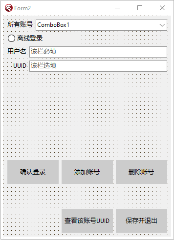
然后，我们点击Ctrl+S键保存这个窗体，然后给该窗体文件命名为【AccountForm.pas】即可。
然后，我们再在主窗口上，建立一个这样的按钮：
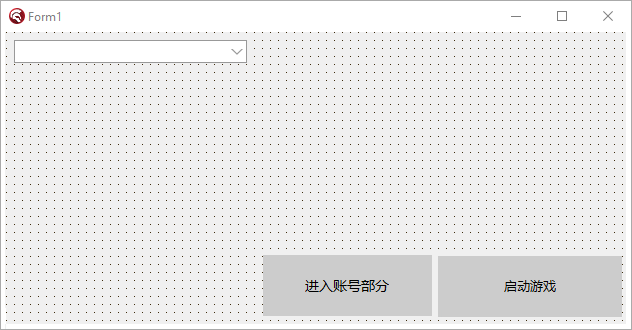
双击这个按钮，进入代码编辑视图，我们首先第一步，需要滑到最顶端，引用一个单元文件，单元文件名自然就是我们的窗体文件啦！
在以后每次大家新建窗体时，如果需要在别的窗体中打开另一个窗体，就必须要在这个窗体里面引用那个窗体的头文件：
uses
AccountForm;
使用完毕之后，我们就可以回到按钮点击事件，在里面写上这么一段话
procedure TForm1.Button2Click(Sender: TObject);
begin
Form2.ShowModal; //Form2指的是账号窗体属性中的name值，多半是唯一的。
end;
是的，只需要Show一次，就可以了！此时，你可能会问：为什么不用像C#那样new一次【指调用一次Create方法】后，才能显示呢？
其实，Delphi已经帮我们做好工作了！右键右侧文件树状图上面的exe，然后点击View Source，你就能看见，Delphi在单元执行主线程中，已经为我们使用CreateForm创建过一个窗体了！我们只需要使用其内部的Show方法即可！
然后嘛，让我来解释一下Show和ShowMadel方法的区别，首先，Show是指使用一个额外线程启动这个窗口，意思就是不锁定住主窗口启动。ShowModal的意思是锁定住主窗口，利用主线程直接开始执行窗体代码的意思。该种方式与C#中的ShowDialog一致。
然后，我们就要正式的在AccountForm里面敲代码了！
首先，我们需要敲出离线登录的代码。按照我们上述的布局，我们点击【添加账号】的按钮，进入按钮点击事件。
让我们首先介绍一下这个按钮的主要功能吧！这个按钮的主要功能就是将账号的名称添加进上方的所有账号的下拉框里面。该按钮同样适配于微软登录、外置登录。同样的，我们需要置一个单选框，用于给玩家选择应该使用哪种登录方式。
进入点击事件，我们开始写代码咯！【ps：这里的添加按钮名称为Button2】，其余的按钮我会在之后挨个和大家说的。
procedure TForm2.Button2Click(Sender: TObject);
var
uid: TGuid; //在函数开头声明一个uid。
begin
if RadioButton1.Checked then begin //该处直接判断离线登录的单选框是否选上。
if (Edit1.Text = '') or (not TRegex.IsMatch(Edit1.Text, '^[A-Z0-9a-z]')) or (Length(Edit1.Text) > 16) or (Length(Edit1.Text) < 3) then // 如果玩家名称为空
begin //对玩家名称进行判断。
messageBox(Handle, '你的离线登录名称并不理想，输入错误！请不要输入中文，也不要超过16个字符！不要为空。', '错误警告', MB_ICONERROR);
exit;
end;
var tuid: String := Edit2.Text; //获取UUID编辑框的内容。
tuid := tuid.ToLower; //对其进行小写。【如果有的话】
if (tuid = '') then begin //判断其是否为空（为空则随机生成一个UUID）
CreateGuid(uid); //如果为空，则为uid变量初始化
tuid := GuidToString(uid).Replace('{', '').Replace('}', '').Replace('-', '').ToLower; //对tuid赋值，将Guid变成String后赋值上去。
end;
if not TRegex.IsMatch(tuid, '^[a-f0-9]{32}') then begin //用正则表达式判断tuid是否符合32位无符号UUID
messageBox(Handle, '你的离线登录UUID输入错误，请输入一串长32位无符号UUID。或者不输入等待随机生成', '错误警告', MB_ICONERROR); //如果不是，则退出方法。
exit;
end;
//将所有目标添加到配置文件，写入Json
(AccountJson.GetValue('account') as TJsonArray).Add(TJsonObject.Create
.AddPair('type', 'offline')
.AddPair('name', Edit1.Text)
.AddPair('uuid', tuid)
); //如果仔细看这一行，我们就会发现，我们将配置文件是写在这里的：
(*
Delphi里面使用这种符号来进行多行注释。
{
"account": [
{
"type": "offline",
"name": "<玩家名称>"
"uuid": "<玩家UUID>"
}
]
}
*)
//我们发现，这个Json不是一个列表形式，而是在一个对象中建立了一个名为account为键名的列表，然后在列表中新键type和name啥啥的。
//这个键我们稍后再说，稍后我会对其进行讲解。
ComboBox1.ItemIndex := ComboBox1.Items.Add(Concat(Edit1.Text, '（离线）')); //给下拉框添加元素，顺便赋值给最终值。
Edit1.Text := '';//给Edit设置为空
Edit2.Text := '';
messagebox(Handle, '添加成功！', '添加成功', MB_OK+MB_ICONINFORMATION);
end; //后期微软登录之时，我们只需要把这个分号去掉，然后在下面写上 else if RadioButton2.Checked then 即可。
end;
在上述代码中，我们用了一个正则表达式来匹配UUID是否真的为32位无符号UUID。
该正则表达式需要引用Delphi的一个单元：【本次使用别的Form，在你不确定自己需要引用哪些单元文件的时候，你需要将MainForm里的单元文件全部引用到该Form里面。】
uses
RegularExpressions;
然后呢，还有一件事，下面有个AccountJson，这个是从哪里来的呢？哦！我们在implementation的下方，建立一个AccountJson，这个Json文件作为我们的账号配置Json。
我们需要在其中新建一个变量，见下
implementation
var
AccountJson: TJsonObject;
但此时，我们还不能直接使用它，因为它只是一个没有初始化过的变量。我们需要做的，就是在FormCreate中为这个变量new一次。
回到窗体视图，双击窗体，我们便可以打开FormCreate事件。
在里面这么写即可：
procedure TForm2.FormCreate(Sender: TObject);
begin
AccountJson := TJsonObject.Create;
end;
写下这么一段话即可对AccountJson进行初始化操作。之后我们便可以对AccountJson进行自由加键删键处理。
如果你发现上述代码报错，那绝大概率是你的JSON单元没有引用，你需要去看上面的介绍。
然后，我们就需要去对这个Json文件进行处理。在上面，我们为其添加了新键。
接着，我们便可以回到主界面，双击保存并退出按钮，然后进入事件【我的按钮name是Button4】开始写下保存账号信息的代码：
procedure TForm2.Button4Click(Sender: TObject);
begin
SaveFileToOutside(Concat(ExtractFilePath(Application.ExeName), 'launcher\AccountJson.json'), AccountJson.Format);
Close; //这里使用了Format函数，此为将Json字符串进行格式化后保存到外部文件。我们还使用了Application.ExeName，这个意思指的是获取exe当前目录。
end;
将上述文件保存出去即可。其中，我们使用了一个新的函数，名为SaveFileToOutside，这个函数是一个自制函数，用途是将内容字符串保存到外部文件。现在，我们回到MainForm中，书写这个函数吧！
procedure SaveFileToOutside(path, content: string);
begin
var ss := TStringStream.Create('', TEncoding.UTF8, False);//定义一个流
if not DirectoryExists(ExtractFilePath(path)) then ForceDirectories(ExtractFilePath(path));//判断文件夹是否存在，如果不存在则强制生成一个文件夹。
try
ss.WriteString(content); //写入字符串进流
ss.SaveToFile(path); //将流保存到外部文件。
finally
ss.Free;
end;
end;
然后，还是在implementation下面写上这个函数。
此时，大家可能会发现在AccountForm中，还是无法引用这个函数啊？那是因为我们还没有引用这个MainForm文件呢！
让我们在implementation下方写上这串代码：
implementation
uses
MainForm;
即可使用了！
然后，我们双击FormCreate，我们需要在该窗口刚刚创建之时，就立刻对Account支持，我们需要判断其文件是否存在，如果存在，则加载Json，如果不存在，则抛出报错，初始化Json
procedure TForm2.FormCreate(Sender: TObject);
begin
AccountJson := TJsonObject.Create;
if not FileExists(Concat(ExtractFilePath(Application.ExeName), 'launcher\AccountJson.json')) then begin //给Json变量初值附上一个account的JsonArray
AccountJson.AddPair('account', TJsonArray.Create); //是的，直接在这里初始化account键。
var j := AccountJson.Format; //将Json格式化并导出
SaveFileToOutside(Concat(ExtractFilePath(Application.ExeName), 'launcher\AccountJson.json'), j); //保存至外部文件。
end else begin //如果有则执行
var j := GetOutsideDocument(Concat(ExtractFilePath(Application.ExeName), 'launcher\AccountJson.json')); //获取外部文件的AccountJson内容，再将其转换成Json对象。
AccountJson := TJsonObject.ParseJSONValue(j) as TJsonObject; //给Account附上初值。
end;
try //以下代码是：为下拉框添加进元素。
for var I in (AccountJson.GetValue('account') as TJsonArray) do //遍历Json数组
begin //如果找到的type为offline，那么添加为离线登录，如果检测到microsoft，那么添加为微软正版登录。
var tpe := I.GetValue<String>('type'); //获取type值
if tpe = 'offline' then ComboBox1.Items.Add(I.GetValue<String>('name')) //如果是离线，则在下拉框中添加。后期可以直接在下面输入else microsoft的！
end;
except
tp := -1;
ComboBox1.ItemIndex := -1;
end;
end;
这样，我们就已经做好了在程序一旦启动之时，立刻就给我们的程序初始化所有的账号信息了。
然后，下一步，我们需要制作确认登录的功能，这个功能很简单，请看代码：功能晚点会说【我的确认登录按钮是Button1】，在窗体视图双击按钮进入代码编辑：
procedure TForm2.Button1Click(Sender: TObject);
begin
var pln := ((AccountJson.Values['account'] as TJsonArray)[ComboBox1.ItemIndex] as TJsonObject).GetValue('name').Value; //通过ComboBox1的ItemIndex属性，成功获取到目前登录的账号玩家名称。
tp := ComboBox1.ItemIndex; //tp是一个全局变量，专门获取玩家名称。
messagebox(Handle, '确认成功！', '确认成功', MB_OK); //弹出一个信息框说明确认成功
end;
其中，有一个名为tp的变量，它其实是一个全局变量，用于存储玩家当前选择了第几号账号。例如我选择的是1号，那么这个变量将存储0，如果没有确认账号，则这个变量将存储-1。
其实，这个地方我们可以不用按钮来写的，我们可以直接双击上面的ComboBox下拉框，然后写上上面这一串的，然后messagebox我们也可以去掉的！
由于此篇教程过于古老，我不太可能在没更新完下面几章节时返回来修改原有目录，而且我的启动器示例也有所更改，我不太会重新删掉控件从而为了适配老期教程，因此，大家完全可以动动自己的小脑袋，自己动手实现自己想要的功能哟！
然后，我们需要在全局变量中定义一个这种变量【由于这个数字，我们并没有将其保存到外部文件，大家也当然可以将其保存到外部，这样可以在打开启动器的同时，自动装载玩家选择的账号，同时在账号部分窗口创建的时候，也同样将下拉框的ItemIndex属性，赋值位于这个变量的外部值哦！】
AccountForm.pas
var
Form2: TForm2;
tp: Integer = -1; //定义一个初值。
implementation
【这里由于篇幅原因，就不实现上述保存到外部了。（视频教程里也照样没有保存。）】
然后然后，我们回到MainForm中，我们需要改改启动游戏的逻辑咯！
首先，去除全局常量UserName，然后在Button1Click中这样写
procedure TForm1.Button1Click(Sender: TJsonObject);
var
PlayerName: String;
PlayerUUID: String;
PlayerType: String;
PlayerAcTo: String;
PlayerAuth: String; //这里需要添加一个额外变量，这个变量后期我们在添加Authlib-Injector时会说道！
begin
... //前面省略
var res := lch.SelectParam(root); //成功获取到拼接完成后的json文件。
try
var JsonAbout := TJsonObject.ParseJSONValue(GetOutsideDocument(Concat(ExtractFilePath(Application.ExeName), 'launcher\AccountJson.json'))) as TJsonObject; //获取外部json文件
var chooseAbout := (JsonAbout.GetValue('account') as TJsonArray)[tp] as TJsonObject; //获取当前选择的代码块
var typetemp := chooseAbout.GetValue('type').Value; //获取选择的type键
if typetemp = 'offline' then begin //如果type键等于offline，则执行。
PlayerName := chooseAbout.GetValue('name').Value; //设置为name
PlayerUUID := chooseAbout.GetValue('uuid').Value; //设置为uuid
PlayerAcTo := PlayerUUID; //accessToken等于uuid
PlayerType := 'Legacy'; //type为Legacy。
PlayerAuth := ''; //这里当然要设置为空啦！后期再说！
end; //后期直接在这里接上microsoft等就可以了！
except
messagebox(Handle, '你还暂未选择一个账号，请去选择一次吧！', '暂未选择', MB_ICONERROR);
exit;
end;
//在这两行代码的中间，新建一个这样的代码块
if not lch.UnzipNatives(root, MinecraftPath, spath) then begin
... //后面省略
.Replace('${auth_player_name}', PlayerName)
.Replace('${auth_uuid}', PlayerUUID)
.Replace('${auth_access_token}', PlayerActo)
.Replace('${user_type}', PlayerType)
.Replace('${authlib_injector_param}', PlayerAuth) //这里还是额外的参数噢！后期再说！
当我们写好上述代码，并且改好之后，我们就可以正常的打开启动器了，然后尝试一下，进行一次离线登录MC吧！
好了好了，既然如此，你已经可以正常的启动Minecraft并应用离线登录了，但是文章当中还有很多问题没有体现出来，这些问题的修复就留给大家当作作业啦！大家可以自行去修复这些问题哦！
但是，切记一点，由于我的AccountJson是保存在exe目录下，因此这种情况有很高的风险性会被人家盗取AccessToken，因此，我们也必须将AccountJson保存到一个安全的地方。【例如AppData\Roaming】目录下，或者Local目录下。
好了，话就说这么多，尽情期待下一章吧！
本章教大家如何使用微软登录
切记，本章使用的是浏览器回显登录，如果你的启动器不愿意支持这个，请转到下一章OAuth登录。
首先哈，正如文章标题，本章使用的是浏览器回显登录。那么什么是浏览器回显呢？
首先，让我们看看Minecraft官方Wiki上是怎么说的吧：点我
首先，Minecraft的客户端ID被硬编码为00000000402b5328，这是众所周知的。我们可以在浏览器中访问下面那一串HTTP。紧接着，也许会弹出一个让你登录Minecraft的登录窗口，也许不会弹。
那么，有些时候会弹出一个登录窗口是怎么回事呢？此时可能是因为你使用的Windows浏览器不是Edge，并且从未登录过任一微软账号的原因。如果没有弹出登录窗口，而是直接改变了网址栏，变成了【https://login.live.com/oauth20_desktop.srf?code=<登录代码> 】类似于这样的网址。那多半是你的浏览器已经保存了你有关Minecraft微软登录的Cookie，请删掉该浏览器中的所有Cookie后再使用。
好了，然后我再来给大家介绍一下在程序中使用WebBrowsers进行登录而不是使用外置浏览器进行登录的方式：其实此时与外置浏览器登录没有任何区别，只是我们使用的是IE内核的浏览器，与Chromium内核的浏览器的Cookie保存位置不一样，因此即使我们在程序中删掉有关登录信息的任何Cookie也不会有任何问题。
我们所需要实现的目的是：在程序中或者在外置浏览器中，登录网址后对其返回的所有Json进行解析，最终得到Minecraft的登录令牌。
这里切记几点问题：
- 由于Minecraft的登录令牌时限为24个小时，因此，在这24个小时内，你不能将你的accessToken暴露给你不熟悉的任何一个人。
- Minecraft的刷新令牌实现为一个月，因此，在这一个月内，你不能将你的refreshToken暴露给你不熟悉的任何一个人。
- 微软账号的安全性，你不可以将你的微软账号以及密码暴露给你不熟悉的任何一个人。
- 由于很多启动器在导出启动参数之时，误将AccessToken给保存到本地目录下，因此，你不可以将AccessToken以明文的形式保存在本地。【这里的明文不仅限于使用Base64加密后的Token。】，否则在MCBBS上很难审核通过。
我们可以来看看，使用登录网址所返回的代码有哪些：
首先是这个：【https://login.live.com/oauth20_desktop.srf?code=************】
我们需要做的，就是将这串返回网址code=后面的所有字符给提取出来。然后对此进行解析，最终获得Minecraft登录令牌了！
还是老样子，先来拽窗口控件吧，像我这样修改你的窗口：
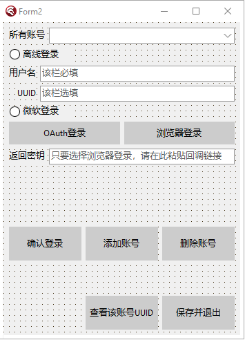
由于目前我们暂时未学OAuth登录，因此这种方式将暂时搁置一下。
我们双击浏览器登录，然后在浏览器登录的按钮点击事件里，写上这么一串字：
procedure TForm2.Button7Click(Sender: TObject);
begin
ShellExecute(Application.Handle, nil, pchar(Concat('https://login.live.com/oauth20_authorize.srf',
'?client_id=00000000402b5328',
'&response_type=code',
'&scope=service%3A%3Auser.auth.xboxlive.com%3A%3AMBI_SSL',
'&redirect_uri=https%3A%2F%2Flogin.live.com%2Foauth20_desktop.srf')), nil, nil, SW_SHOWNORMAL);
end;
是的，没错！我们要做的就是调用一个执行cmd指令的程序：ShellExecute，如果你的编程语言里有直接调用系统默认浏览器打开网址的函数，你当然也可以使用哦！
然后，我们会获得一个回调链接，让玩家将回调链接输入进我们的输入框中，然后点击微软登录的单选框，最后，我们只需要点击一次添加按钮即可开始添加我们的微软账号了！
要添加微软账号，首先在我们的添加账号按钮点击事件里面，写上这样几行代码：
procedure TForm2.Button2Click(Sender: TObject);
begin
if RadioButton1.Checked then begin
... //上期离线登录的代码
end else if RadioButton2.Checked then begin
if messagebox(Handle, '你选择的是微软正版登录，登录过程可能会卡挺久，需要有耐心！有可能会失败，是否要继续呢？。', '有点久提醒', MB_YESNO+MB_ICONINFORMATION) = 7 then exit; //弹出信息框提示玩家是否使用微软登录，如果选否，则退出。
var ed: String := Edit3.Text; //将Edit3的输入框转换成String类型的。Edit3就是回调链接的那个框。
//下面开始判断，如果回调连接里面出现了&lc=，即证明回调链接输入正确。
if ed.IndexOf('&lc=') <> -1 then begin
//然后此处开始将code后面的字符串切开。
if ed.IndexOf('code=') <> -1 then begin
ed := ed.Substring(ed.IndexOf('code=') + 5, ed.Length);
end; //判断回调链接是否合理，共计后面所有的字符都属于需要用到的。
var cpro: TProc := procedure begin //定义一个线程【这里用到了TTask，这个是我们还没学到的，不过我们也即将要学习了！】
try
accm := Account.InitializeAccount(ed, 'post'); //给初始化方法设定一个post值，此处使用了自定义类中的构造函数。
at := accm.GetAccessToken; //获取AccessToken登录秘钥
if at = 'noneaccount' then exit; //如果at没有账号，则为返回方法。
rt := accm.GetRefreshToken; //获取RefreshToken刷新秘钥
un := accm.GetUserName; //获取玩家名字
ud := accm.GetUUID; //获取UUID
except //读取不出则抛出报错。然后执行。这里为网络连接超时所产生的报错。
messagebox(Handle, pchar(Concat('你的网络连接超时了，请连接之后再进行网络请求。或者如果你连接了，重试一次即可。')), '连接超时引发的报错', MB_ICONERROR);
exit; //弹出信息框后退出方法。
end; //将所有目标添加到配置文件。
//这里需要配置5个值。type、name、uuid、accessToken、refreshToken，
//当然，如果你想的话，你可以为accessToken和refreshToken进行加密处理。
(AccountJson.GetValue('account') as TJsonArray).Add(TJsonObject.Create
.AddPair('type', 'microsoft')
.AddPair('name', un)
.AddPair('uuid', ud)
.AddPair('access_token', at)
.AddPair('refresh_token', rt)
);
ComboBox1.ItemIndex := ComboBox1.Items.Add(Concat(un, '（微软）')); //为下拉框新建一个元素，为【用户名+（微软）】图示。
Edit3.Text := ''; //给回调链接输入框重新设为空。
messagebox(Handle, '添加成功！', '添加成功', MB_OK+MB_ICONINFORMATION);
end; //添加成功！
TTask.Run(cpro); //使用TTask执行上述过程。
end else messagebox(Handle, '你的回调链接输入错误了，请重试', '回调链接错误', MB_OK+MB_ICONERROR); //如果回调链接不满足规范，则弹出信息框。
end;
end;
上述部分，我们用到了TTask，那么什么是TTask呢？众所周知，C#中有一个Task类，这个与C#那个其实差不多，都是新生成一个线程执行里面的函数罢了！在此之前，我们需要引用一个类：
uses
Threading;
引用上述Threading类即可！
其中，我们需要接触到新类的概念了。什么是新类？新类就是在type中声明一个别的类，不在原本的类里面的，就叫新类【类比于Java语言，新定义一个public static class的一致。】
看了上面的代码，大家可能会对我们添加账号看得比较懂了吧。
但是，我们要新建的类，可不是public static class哦！而是在外部定义一个class。就相当于Java中的以下代码：
public class Hello{
public static void main(String[] args){
Hello2 hello = new Hello2();
hello.cateat();
}
}
class Hello2{
public void cateat(){
System.out.println("The Cat Like Eat Fish!!");
}
}
上述代码会输出一个The Cat Like Eat Fish!!，我们要声明的类，就在Hello2这一部分啦！
我们首先往上翻，找到type TForm2这个类，然后像我这么写：
type
TForm2 = class(TForm) //这里的括号内，表示继承。
//如果继承的是个类，则只能填一个，反之，interface接口可以填入多个哦！
...//Some Control
end;
Account = class //此处定义一个新类。不用多写一个type了。
private
un, at, uu, rt: String;
tun, tat, tuu, tct, tbs: String;
public
constructor InitializeAccount(key, rr: String); overload; //构造函数
// constructor InitializeAccount(sn, un, pwd, ct, id, rr: String); overload;
// constructor InitializeOAuth(key, token, rr: String); overload;
function GetAccessToken: String;
function GetRefreshToken: String;
function GetUserName: String;
function GetUUID: String;
// function GetThirdAccessToken: String;
// function GetThirdClientToken: String;
// function GetThirdUserName: String;
// function GetThirdUUID: String;
// function GetThirdBaseCode: string;
class function GetHttpf(key, web: String): String;
class function GetHttpy(key, web: String): String;
class function GetHttph(key, web: String): String;
end;
我们定义和上面一样多的函数就可以了！
此时，我们可以看到，怎么会这么多函数呢？虽然有些被注释了哈。。
原因很简单，我只是把下一章才教的外置登录和下下一章教到的微软OAuth登录提前将方法定义好了。如果我们去掉下两章的代码，则就是将上方注释的样子。如果去掉注释，则就是下两章说道的内容了！
oh，我发现了一个新的问题，大家应该还没见过constructor这个关键字吧，其实这个关键字是构造函数的意思，也就是类似于java中如下的写法：
public class Hello{
private final int i;
private Hello(int i){
this.i = i;
}
public static void main(String[] args){
Hello hel = new Hello(10);
System.out.println(hel.i);
}
}
这么写，上面的private Hello就相当于Delphi中的constructor了！但只不过我们在Java中的写法是private的，而在Delphi里面的写法是public下面的啦！
而且，我们这里不仅声明了一个相同名称的构造函数，这里给大家普及一个知识点，在Delphi中，我们使用构造函数或者别的方法时，如果使用到同一个函数名，但是参数不一样。直接写会报错，此时，我们应该在该函数的末尾声明为overload即可。，这个的意思是多态。
还有一个是关于继承的，在Java或者Kotlin中，我们都有override关键字，或者是它的注解，用于声明这个方法是继承得来的方法，而Delphi中也有override关键字，我们只需要在继承的方法后面写上override就可以了！
因此，就是这么简单了！
然后，我们还要来说说看静态方法，在Delphi中，是不存在static关键字的，但是我们可以用另一种方式来声明一个静态方法，就是在方法前面加上一个class关键字，这样，我们就可以直接通过【类名.方法名】来获取到这个方法了。
好了，接着说，我们先把下面的GetHTTPf、GetHTTPy、GetHTTPh写好之后，我们再去写构造函数啦。
首先，键入以下代码：
implementation //在implementation下方写。
class function Account.GetHTTPf(key: string; web: string): string;
begin
var ss := TStringStream.Create('', TEncoding.UTF8, False); //首先定义一个流。用于为Post写入请求头。
var http := TNetHTTPClient.Create(nil); //定义一个TNetHTTPClient，用于进行网络Get、Post指令。
try
ss.WriteString(key); //写入流
ss.Position := 0; //让流的位置返回0
with http do begin //with关键字是可以无需使用http.某个函数，直接使用就好。
AcceptCharSet := 'utf-8'; //设置网络请求编码，默认都是utf-8
AcceptEncoding := '65001'; //设置编码代号，此为默认编码
AcceptLanguage := 'en-US'; //设置网络请求语言，此为英文。
ResponseTimeout := 200000; //设置请求时长
ConnectionTimeout := 200000; //设置连接时长
SendTimeout := 200000; //设置发送时长【完美的英文理解】，以下为设置请求协议。
SecureProtocols := [THTTPSecureProtocol.SSL3, THTTPSecureProtocol.TLS12, THTTPSecureProtocol.TLS13]; //请求协议，这里调用了SSL3、TLS12和TLS13。
HandleRedirects := True; //可以网址重定向，也就是说假如Post、Get的网址有重定向，这样也可以获取到。
ContentType := 'application/x-www-form-urlencoded;charset=utf-8'; //设置请求类型，这里是x-www-form-urlencoded。
var res := Post(web, ss); //现在开始Post请求。将写入的头定义的流填入。
result := res.ContentAsString; //返回网址的请求值，将其转换成String类型。
end;
finally
http.Free; //释放资源
ss.Free; //释放资源
end;
end;
class function Account.GetHTTPy(key, web: String): String;
begin
var ss := TStringStream.Create('', TEncoding.UTF8, False);
var http := TNetHTTPClient.Create(nil);
try
ss.WriteString(key); //该方法与上面的一致
ss.Position := 0;
with http do begin
AcceptCharSet := 'utf-8';
AcceptEncoding := '65001';
AcceptLanguage := 'en-US';
ResponseTimeout := 200000;
ConnectionTimeout := 200000;
SendTimeout := 200000;
SecureProtocols := [THTTPSecureProtocol.SSL3, THTTPSecureProtocol.TLS12, THTTPSecureProtocol.TLS13];
HandleRedirects := True;
ContentType := 'application/json;charset=utf-8'; //唯独这里不一样，这里使用了json作为请求头类型。
Accept := 'application/json'; //这里将Accept类型也换成json，只是少了charset=utf-8的。
var res := Post(web, ss); //然后依旧是一致的哦！
result := res.ContentAsString;
end;
finally
http.Free;
ss.Free;
end;
end;
class function Account.GetHTTPh(key, web: String): String;
begin
var ss := TStringStream.Create('', TEncoding.UTF8, False);
var http := TNetHTTPClient.Create(nil);
try
with http do begin //这里的h方法，是Get的方法，与上面有些许不一致。
AcceptCharSet := 'utf-8'; //这里没有将key写入流，因为此时，这个流是用于接收Get请求的返回值的。
AcceptEncoding := '65001';
AcceptLanguage := 'en-US';
ResponseTimeout := 200000;
ConnectionTimeout := 200000;
SendTimeout := 200000;
SecureProtocols := [THTTPSecureProtocol.SSL3, THTTPSecureProtocol.TLS12, THTTPSecureProtocol.TLS13];
HandleRedirects := True; //此处与上面的均一致。
CustomHeaders['Authorization'] := Concat('Bearer ', key); //这里使用自定义头，使用了Authorization作为键，然后Bearer key作为请求的密钥。
Get(web, ss); //这里对web进行get请求，然后将一个已经初始化的空流当作第二个参数填入进去。此处不需要使用一个变量接收Get值。
result := ss.DataString; //返回流的字符串数据。
end;
finally
http.Free;
ss.Free;
end;
end;
好了，注释都写好了！我们需要注意的是，在Delphi中，对于Get、Post的请求均不一致，如Post请求需要提前在第二个参数里写上key值，而Get请求，则是直接在CustomHeaders里面，写上键，和值即可。
然后，我们需要注意的是：在别的语言中，可能并没有Delphi这么详细的设置，如设置AcceptEncoding := '65501'、AcceptCharSet := 'utf-8'等的设置，大多数语言都会有一个默认值。大家当然也可以完全按照所需要的语言教程中的HTTP请求的默认值来写哦！
然后嘛，将这一串代码复制进Delphi中，可能会发生大报错。原因是我们还没有引用任何一个头文件。这个TNetHTTPClient是需要引用好几个头文件才能够正常使用的。
我们需要引用下方几个头【如果你所编写的语言需要import什么类，你就照常引用就好了】
uses
System.Net.URLClient, System.Net.HttpClient, System.Net.HttpClientComponent;
我们需要引用整整三个头文件，是的，TNetHTTPClient就是这样！
当然，如果你想自己找头文件引用的话，你可以进入窗口视图，在右下角的Palette中，搜索TNetHTTPClient，然后将其中的某个控件拖到窗体上，再进入一次代码视图，然后再回到窗体视图，右键TNetHTTPClient删掉这个控件即可。
自然，照我上面一说，大家肯定认为这个TNetHTTPClient是一个控件。那为什么我们不在Delphi里面直接拖入一个TNetHTTPClient控件，而非要在程序中自己Create一个呢？原因很简单，拖入的控件无法free资源，因为一旦free后，其他时候再想调用就会很麻烦，而且无法做到每个函数执行完一次后直接free资源，从而达到内存不会泄漏，同时内存可以及时的释放资源。综上所述，我们需要在程序里自己Create一个TNetHTTPClient控件。
然后嘛，自然就是我们的
function GetAccessToken: String;
function GetRefreshToken: String;
function GetUserName: String;
function GetUUID: String;
这几个函数啦。这几个函数尤为简单，我们为什么会这么写呢？原因不得而知，我们有几个全局变量是private类型的，因此我们需要写上这么几个函数啦！
然后，还有，我不是很清楚Java里面的private函数作用域是在本文件里到处可以使用，还是在本类中到处可以使用。我只知道Delphi里面，private内的变量或函数的作用域是在本单元文件中的到处都可以使用，无关于类。
但是，我们还是要写上这么四个函数【后期做第三方Authlib登录的时候也需要】，因为后面我们的启动游戏过程中，会启动过程中调用一次微软的验证服务器来验证我们的accessToken是否合法。
我们直接开始写吧：
function Account.GetAccessToken: string;
begin
result := at;
end;
function Account.GetRefreshToken: string;
begin
result := rt;
end;
function Account.GetUserName: string;
begin
result := un;
end;
function Account.GetUUID: string;
begin
result := uu;
end;
那么，这里就是我们的函数了！是不是很简单呢？自然，我们也可以对其进行判空，例如判断at、rt、un、uu全局变量是否为空，如果为空，则raise一个Exception，都是可以的！
这几个变量我在之前已经说过了哦！大家可以回去看看我的Account这个类里面的private代码块下面的全局变量哦！
好了好了，接下来才是重头戏，我们需要写微软登录的构造函数InitializeAccount了！这个的中文意思是初始化账号哦！
//初始化微软登录
constructor Account.InitializeAccount(key, rr: String); //构造函数实现
const //设置4个请求网址
micro = 'https://login.live.com/oauth20_token.srf';
xbox = 'https://user.auth.xboxlive.com/user/authenticate';
xsts = 'https://xsts.auth.xboxlive.com/xsts/authorize';
mccc = 'https://api.minecraftservices.com/authentication/login_with_xbox';
ishas = 'https://api.minecraftservices.com/minecraft/profile';
begin
var k1: String;
if rr = 'refresh' then
k1 := Concat('client_id=00000000402b5328',
'&refresh_token=', key,
'&grant_type=refresh_token',
'&redirect_uri=https://login.live.com/oauth20_desktop.srf',
'&scope=service::user.auth.xboxlive.com::MBI_SSL')
else
k1 := Concat('client_id=00000000402b5328',
'&code=', key,
'&grant_type=authorization_code',
'&redirect_uri=https%3A%2F%2Flogin.live.com%2Foauth20_desktop.srf',
'&scope=service%3A%3Auser.auth.xboxlive.com%3A%3AMBI_SSL');
//这里是请求microsoft的。
Form3.Label8.Caption := '正在请求microsoft中……';
var t1 := Account.GetHttpf(k1, micro); //传值进方法并将返回值设置。
var j1 := TJsonObject.ParseJSONValue(t1) as TJsonObject; //设置json解析
var w1 := j1.GetValue('access_token').Value; //获取assets_token，下面继续设置请求参数。
//这里是请求xbox的
var k2 := Concat('{"Properties":{"AuthMethod":"RPS","SiteName":"user.auth.xboxlive.com","RpsTicket":"d=', w1, '"},"RelyingParty":"http://auth.xboxlive.com","TokenType":"JWT"}'); //设定xbox的请求头。
var t2 := Account.GetHttpy(k2, xbox);
var j2 := TJsonObject.ParseJSONValue(t2) as TJsonObject;
var w2 := j2.GetValue('Token').Value;
//这里将获取到uhs的值。
var r1 := j2.GetValue('DisplayClaims') as TJsonObject;
var ur := r1.GetValue('xui') as TJsonArray;
var uhs := ur[0].GetValue<String>('uhs');
//这里是请求xsts的。
var k3 := Concat('{"Properties":{"SandboxId":"RETAIL","UserTokens":["', w2, '"]},"RelyingParty":"rp://api.minecraftservices.com/","TokenType":"JWT"}');//设定xsts的请求头。
var t3 := Account.GetHttpy(k3, xsts);
var j3 := TJsonObject.ParseJSONValue(t3) as TJsonObject;
var w3 := j3.GetValue('Token').Value;
//这里将判断uhs是否一致【基本上都会一致的，没有存在不一致的情况。。。】
var rr1 := j3.GetValue('DisplayClaims') as TJsonObject; //对uhs进行json解析。
var uur := rr1.GetValue('xui') as TJsonArray;
var uhhs := uur[0].GetValue<String>('uhs');
if uhhs <> uhs then raise Exception.Create('Microsoft uhs is not equal');
//这一步是请求mc的。
var k4 := Concat('{"identityToken":"XBL3.0 x=', uhs, ';', w3, '"}');
var t4 := Account.GetHttpy(k4, mccc);
var j4 := TJsonObject.ParseJSONValue(t4) as TJsonObject;
var w4 := j4.GetValue('access_token').Value; //获取到accesstoken。
//PS：直到这一步，我们才正式的获取到accessToken。很复杂，但也很耐人寻味。
//获取是否为购买了mc的样子。
var t5 := Account.GetHttph(w4, ishas);
var j5 := TJsonObject.ParseJSONValue(t5) as TJsonObject; //将通过accessToken的json值，解析出来，并判断里面是否有以下键值。
try //判断里面是否有name、id值，如果有，则将rt、at一并赋值为refresh_token、access_token。
un := j5.GetValue('name').Value;
uu := j5.GetValue('id').Value;
rt := j1.GetValue('refresh_token').Value;
at := j4.GetValue('access_token').Value;
except //如果里面没有值，则抛出报错。
if messagebox(Form2.Handle, '不好意思，您的Microsoft账户并没有购买Minecraft，请问是否立即前往官网购买？', '暂未购买，是否前往商店', MB_YESNO+MB_ICONERROR) = 6 then //暂未购买。
begin //打开一个网址，请用户购买。
ShellExecute(Application.Handle, nil,
'https://www.minecraft.net/zh-hans/store/minecraft-java-edition',
nil, nil, SW_SHOWNORMAL)
end;
at := 'noneaccount';
end;
end;
好了好了，这就是我们的构造函数了哦！
至于为什么要这么写呢？我们来看看各个请求的返回json数据是怎么样的吧！
首先是第一个：请求Microsoft的步骤！
POST https://login.live.com/oauth20_token.srf
Content-Type: application/x-www-form-urlencoded
&code=key&grant_type=authorization_code&redirect_uri=https%3A%2F%2Flogin.live.com%2Foauth20_desktop.srf&scope=service%3A%3Auser.auth.xboxlive.com%3A%3AMBI_SSL
其返回的数据是：
| 参数 | 描述 |
|---|---|
| token_type | 总是Bearer。 |
| expires_in | 有效时间：以秒为单位，这里是24小时。 |
| scope | 请求数据，这里请求的是xbox.com。 |
| access_token | 你的Access Token，但是这个无法用于启动游戏，这个是用来请求下一步操作的。保存它。 |
| refresh_token | 你的Refresh Token，这个可以用来重置账号。 |
| user_id | 你登录时用的账号id，每个用户只有一份。 |
| foci | 暂不清楚用途，一直都是1。 |
如果你是刷新账号的话，只需要把以上的请求参数修改成refresh_token即可！
下面我们再来看看请求xbox的吧，这里我们需要用到上一次的access_token。
POST https://user.auth.xboxlive.com/user/authenticate
Content-Type: application/json
Accept: application/json
{
"Properties": {
"AuthMethod": "RPS",
"SiteName": "user.auth.xboxlive.com",
"RpsTicket": "d=<access_token>"
},
"RelyingParty": "http://auth.xboxlive.com",
"TokenType": "JWT"
}
其中，RpsTicket里面，我们在填入access_token的时候，我们需要在前面填入一个d=，这点必须。
其返回的数据为：
| 参数 | 描述 |
|---|---|
| IssueInstant | 你的请求时间 |
| NotAfter | 你的请求时间【与上者相同】 |
| Token | 你的Xbox Access Token，保存它。 |
| DisplayClaims | 请求显示要求，对于每个微软软件登录操作各不相同，例如我的世界地下城。 |
| xui | 显示你的要求之一，这里用xui写。 |
| uhs | 这里是你的uhs代码，保存它。 |
在这里，我们需要保存两个东西，第一个是uhs，第二个是Token。
再来看看xsts的请求数据吧，这里用到我们上一步用到的Token值。
POST https://xsts.auth.xboxlive.com/xsts/authorize
Content-Type: application/json
Accept: application/json
{
"Properties": {
"SandboxId": "RETAIL",
"UserTokens": [
"xbox_token"
]
},
"RelyingParty": "rp://api.minecraftservices.com/",
"TokenType": "JWT"
}
其返回的数据与上方的一致，并且uhs也是一致的，我们只需要保存内部的Token即可！
下面我们就可以直接获取Minecraft的最终Access Token了！！我们的xsts获取的Token刚好可以用于验证我们的Minecraft。
POST https://api.minecraftservices.com/authentication/login_with_xbox
Content-Type: application/json
Accept: application/json
{
"identityToken": "XBL3.0 x=<uhs>;<xsts_token>"
}
这里的参数拼接可能有些奇怪，但也根本不影响我们书写！
其返回的数据是：
| 参数 | 描述 |
|---|---|
| username | 用户的验证名称，这里并不是用户的最终UUID…… |
| roles | 这里应该是空数组，不清楚用途，应该是用户属性之类的。 |
| access_token | 你的老朋友，Access Token，该Token需要保存，后启动游戏。 |
| token_type | 持有者，一直都是Bearer |
| expires_in | 有效期，这里是24小时，也就是一天。 |
现在我们需要验证用户的账号里是否购买了Minecraft，如果购买了，则获取它的用户名和UUID。
我们看到wiki上写了一个获取mcstore的，但是着实想了想，根本没必要啊……我们可以直接获取用户数据，最后获得其uuid和名称，如果获取不到的话，就抛出报错，将错误展现给我们的用户即可！
来看验证Minecraft有效性：
GET https://api.minecraftservices.com/minecraft/profile
Header[Authorization]: Bearer <your access token>
上面的your access token写上你的登录用的AccessToken。然后前面填入的是Header哦！
其返回的数据是：
| 参数 | 描述 |
|---|---|
| id | 你账号的真实UUID |
| name | 你账号的真实用户名 |
| skins | 账号皮肤 |
| capes | 账号披风 |
对于皮肤和披风的解析请自行参照官方结构，这里暂不赘述。
如果用户未拥有Minecraft，则解析看起来如下：
| 参数 | 描述 |
|---|---|
| path | 用户请求错误的路径 |
| errorType | 错误类型：这里应该是NOT_FOUND |
| error | 错误标志 |
| errorMessage | 错误信息，这里会描述你为什么会遇到错误【英文】 |
| developerMessage | 开发者信息 |
好了，那么我们的请求链接就写完了，大概就是这样的啦！各位可以看看啦！
这么写完了以后，我们再次回到我们的按钮，我们惊讶的发现了，我们的按钮已经设置完毕了！那么，此时此刻，我们就可以回到我们的主窗口，点击我们的启动游戏按钮，然后键入以下代码：
procedure TForm1.Button1Click(Sender: TJsonObject);
begin
... //前面省略
if typetemp = 'offline' then begin //如果type键等于offline，则执行。
PlayerName := chooseAbout.GetValue('name').Value; //设置为name
PlayerUUID := chooseAbout.GetValue('uuid').Value; //设置为uuid
PlayerAcTo := PlayerUUID; //accessToken等于uuid
PlayerType := 'Legacy'; //type为Legacy。
PlayerAuth := ''; //为空
end //将末尾分号去掉。
else if typetemp = 'microsoft' then begin
PlayerName := chooseAbout.GetValue('name').Value; //设置为name
PlayerUUID := chooseAbout.GetValue('uuid').Value; //设置为uuid
PlayerAcTo := chooseAbout.GetValue('access_token').Value; //设置为accessToken
PlayerType := 'msa'; //type为msa。这样才能在多人联机中发言。
PlayerAuth := ''; //为空
end;
... //后面省略
end;
然后，此时此刻我们再尝试一下启动游戏！成功了！微软登录成功了！
微软的OAuth登录
警告：该种登录方式是所有登录方式中最为安全的一种方式，如果你不确定你需要哪种方式来写代码，请务必使用此种方式！
好了好了，又是我们最为关键的一步：微软OAuth登录啦！
想必吼，各位应该有使用过HMCL、BakaXL等一系列较火的启动器吧！那么这些启动器都有一个特点，这个特点就是：【使用的登录微软的方式与上一章所见的完全不同！】
他们是怎么做到的呢？首先蛤，让我先给各位缕一缕思路哈！
他们调用系统默认浏览器打开了一个网址，网址为【https://www.microsoft.com/link 】这个网址，当然了，现在可别打开这个网址哦！然后，启动器会弹出一个代码窗口，要求我们将该代码填入到link网址中显示的输入框内。
紧接着，启动器开始静默，随之而来的就是在浏览器中操作的过程了！
浏览器中，我们首先登录一次微软账号【就是简单的输入账号密码】，然后，开始判断我们是否为本账号的主人【要求输入Windows PIN码，也就是开机密码】，再接着，要求我们同意该启动器对Xbox等若干账号的访问权。
等一切都做好之后，网址上弹出了【大功告成，现在可以安全的返回启动器】时，启动器将会自动执行下一步，然后，就自动登录成功了！
其实，在做这一个步骤的时候，我们首先需要弄懂2点：
- 启动器如何弹出应用代码供我们输入进微软官网的输入框。
- 启动器如何静默执行直到用户已完成网页登录的全部请求。
这是我们要讨论的两个问题。
首先，让我们先来看个网址【因为我总觉得，有权威性的文档总要比我说的有效得多。】，该网址出处为wiki.vg。【点我】，我当然直到这个网址是英文的，因此这里是中文的【点我】
然后，下面的过程我将用截图来说明了！
请看这里：
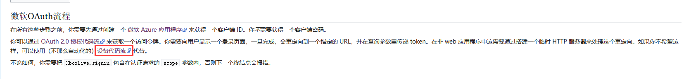
我们进入中文的wiki.vg网址，然后单击我图片框中显示的那个网址，然后，我们再接着往下滑，直到找到一个名为AZure用户注册的地方，大概在这：
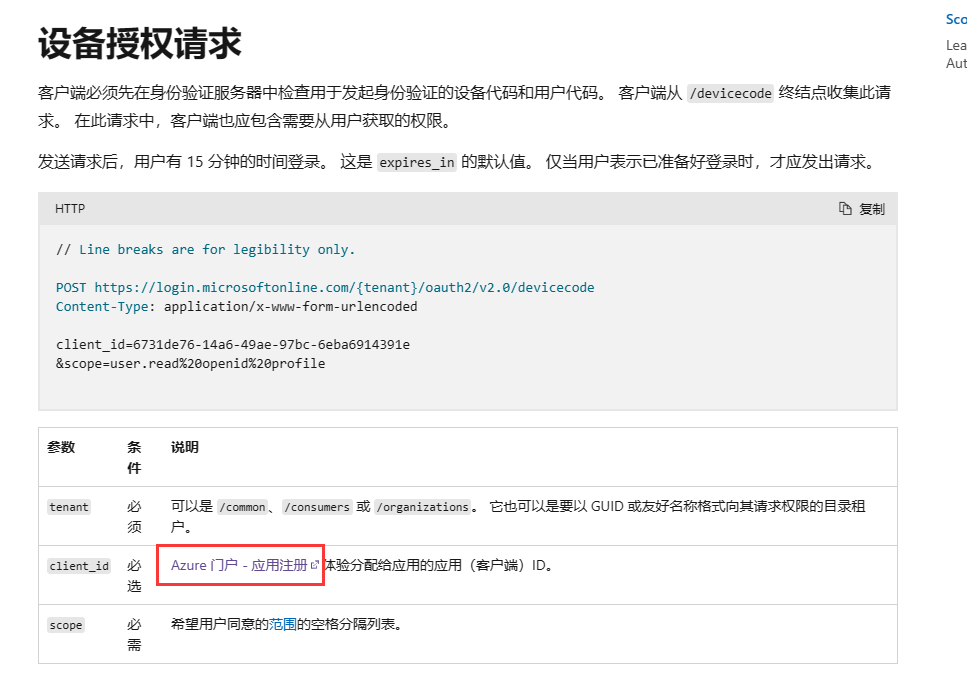
在点击这个网址时，很可能因为这是你第一次点击而让你登录一次微软账号，那么没逝，我们登录即可。随后，我们便可以进入这里，按照我的步骤走吧：
我猜各位现在应该看到的是【应用注册】界面，那这就证明我们来对地方了！
下图，由于我之前已经注册过一个Little Limbo Launcher了，因此我将会点击上方的【新注册】按钮来依次教大家如何注册哦！
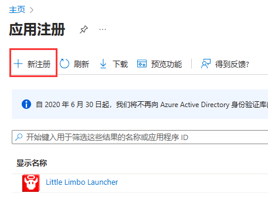
好了，然后，我们就可以使用新注册的账号对我们将要分发的启动器注册一个应用程序了！
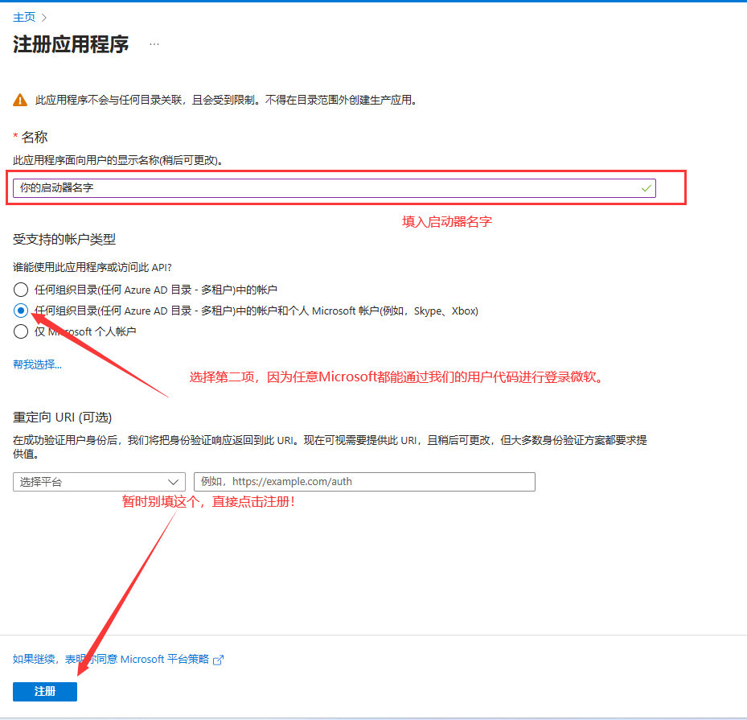
好了，现在立刻进入我们的启动器里面，我的启动器名称暂时命名为【Test Launcher】，不必在意这些细节哦！
当我们注册完毕之后，点进入启动器配置中，随后，我们能够发现一个AZure Client ID，这个ID各位千万不允许泄漏给他人，同样的，假如我们制作的是开源启动器，我们也要将此类用privacy的单独的类进行ignore哦！
在左侧栏点击【身份验证】，然后点击最上面的【添加平台】，在右边选择Web，然后在重定向URI中填入https://www.microsoft.com/link，随后点击下面的访问令牌打勾。前通道注销URI暂时不用填写。
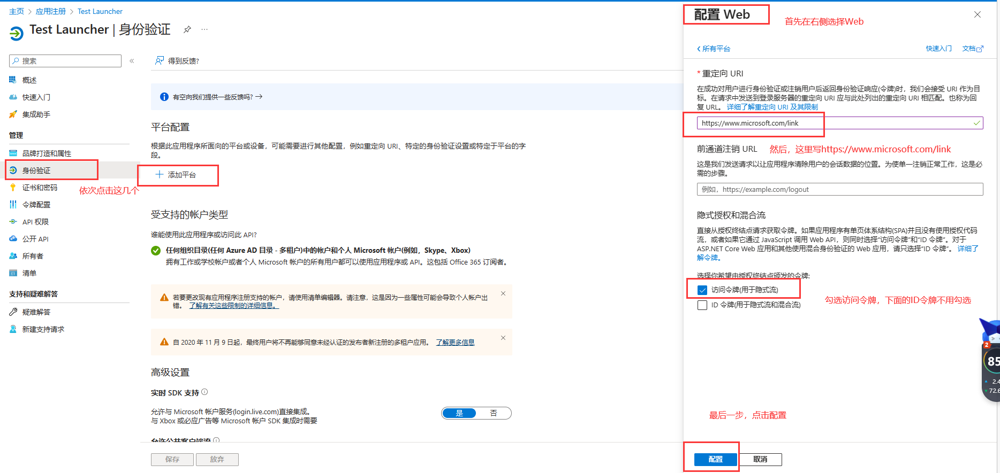
此时此刻，我们如果按照正常流程来走的话，我们就应该可以自动重定向到这个网址了，但是，此时此刻，我们还没有为该应用程序设定是否允许公共的桌面应用对此进行流控制权限，我们需要设置一个。
随后，我们需要往下滑，找到下面这一列：
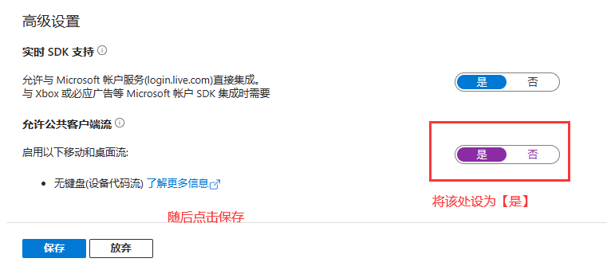
这个就是了！好的，那么接下来，我们就要点击左侧的【品牌打造与属性】进行自定义我们的应用程序啦！
首先点进属性一栏，我们能看到以下几栏。
- 首先：我们需要输入我们的启动器名称，就是在最顶上的那个啦！【必填，多半是在你生成启动器时就早已生成好了名称。】
- logo徽标：需要上传一个logo图标，这里我没用，但大家可以使用而且是必须使用一个你自己启动器的图标上去。【必填】
- 主页URL：写你启动器的主页即可，如果是gitcode，就写gitcode啦，如果是github pages：就写github pages。【可选填，以下可选填均指如果没有则不用填】
- 服务条款：这个不用我多说了，每个应用程序都有的，这里填入你的网址。【可选填】
- 隐私声明：也不用多说了，填入许可证即可。【可选填】
- 服务管理参考：这个也不用多说了，左侧名称处有一个灰色的感叹号，可以自行查看。【可选填】
- 内部备注：写上你对该应用程序的备注即可，可以写【这是LLL启动器的AZure注册！】也可以写别的。【必填】
- 发布者域：配置你所写的域名。【该处不用填，因为市面上大多数启动器都无此功能。】
请看吧：
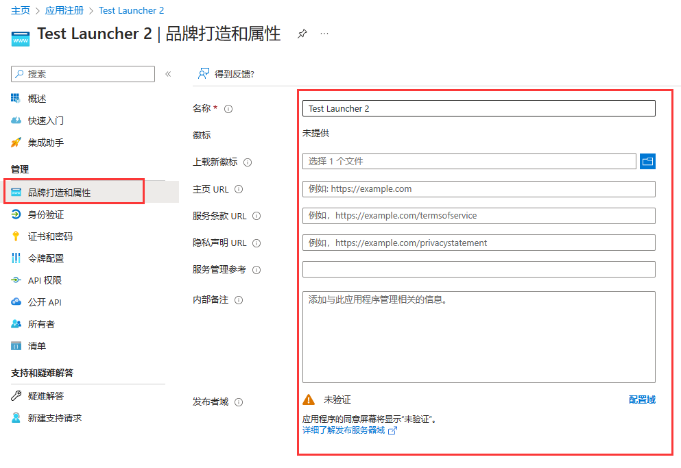
按照上面的配置即可！
此时此刻，我们的AZure账号就算是正式注册完毕了！那么，我们就需要开始完成我们上述的第一步了！【启动器如何弹出应用代码供我们输入进微软官网的输入框】了！
在这里给大家提个醒，根据该网址的信息，我们可以判定，微软的Client ID需要申请才可以使用，因此，我们需要填写表单，向微软申请我们的第三方启动器可以被允许获取微软，然后此时我们才可以使用登录。否则，使用未经允许的Client ID将会触发请求404的风险。申请表单网址点我
在获取了我们的个人Microsoft AZure Client ID之后，我们应该怎么获取用户ID？
首先，我们在控件图纸上新建一个按钮控件吧！噢，按钮上一次已经建立好了啊！
那么我们来看，首先按钮建立好了是一个问题，我们这次需不需要点击【添加账号】来添加呢？答案是不必的！我们大可以直接点击【微软OAuth】登录来直接达到登录的效果。
那么，此时可能又会有人要问了：我看别的启动器都是在浏览器登录之后，自动登录完成的啊？
很简单，只需要设置一个Timer控件随时随地的对目标网址Get或Post，一旦成功则立刻返回就可以了！
那么，这个设置Timer控件的任务就交给大家做练习了！我先教各位如何通过Client ID获取用户代码，然后对此进行Post获取目标json了！
首先，我们双击按钮：微软OAuth登录。在我们的微软OAuth登录的方法前端设置一个常量，这个常量叫做
const
devicecode = 'https://login.microsoftonline.com/consumers/oauth2/v2.0/devicecode?mkt=zh-CN';
这个常量主要是获取用户代码的！
然后，我们再设置一些请求头吧：
【ps：此处将会设置各位的Client_ID，如果各位打算开源，则你不能将ID泄漏给别人噢！】
var clientID := MS_CLIENT_ID; //此处填上你们的ClientID就好了，如果你的启动器打算开源，你不可以将该ID泄漏给别人看噢！
TTask.Run(procedure begin//设置一个任务，调取信息。
//该种方式为设置请求头。可以看到我们再scope块里设置了XBoxLive.signin以及offline_access。
//其中，XboxLive.signin表示的是可以用于登录微软，offline_access表示是否生成一个刷新令牌。中间的%20表示一个空格。
var key1 := Concat('client_id=', clientID, '&scope=XboxLive.signin%20offline_access');
try
var str := Account.GetHttpf(key1, devicecode); //这里调用我们上次写的GetHTTPf。将前面设置的const常量与key1填入即可。
//这里，我们的str就是我们的登录所需的json了，我们需要提取出里面的用户代码数据。
var json := TJsonObject.ParseJSONValue(str) as TJsonObject; //将str转换成json
var usercode := json.GetValue('user_code').Value; //这里的usercode就是我们要展示给用户的用户代码了！
var link := json.GetValue('verification_uri').Value; //这里指的是我们的回调链接，通过创建Client ID那个界面可以设置。
TThread.Queue(nil, procedure begin //这里的TThread.Queue指的是将主线程从TTask边缘中拖回来。
ClipBoard.SetTextBuf(pchar(usercode)); //这里将你的用户代码复制到剪切板里，以供用户调用。
ShellExecute(Handle, nil, pchar(TrimStrm(link)), nil, nil, SW_SHOWNORMAL); //这里打开你的回调链接网址。
InputBox('你的用户代码是：', Concat('你可以在这里复制你的用户代码，然后进入刚刚打开的网页进行登录。', #13#10, '登录完毕之后，你就可以随意按下下面任意一个键继续往下执行了。', #13#10, '但是切记，你不可以被允许还未登录即往下执行！'), usercode);
//这里使用了一个InputBox强制性使主线程暂停，然后等待用户登录完毕后进行下一步。
//我们将usercode显示在这个输入框里面，以便用户拾取。
var dcode := json.GetValue('device_code').Value; //获取device_code。
//这里是获取我们的device_code，以用来验证我们是否已经从浏览器登录完成了。
//在这里获取的device_code用作我们下一步的获取程序，如果我们未从浏览器中登录完成，则通过device_code获取的网址将会出现error，反之则会出现success！
//在这里，大家就可以设置Timer控件来通过device_code获取验证流了！
//但是目前我们不用Timer控件，我们将等待用户是否按下InputBox上的任意一个键来判断是否登录成功。
TTask.Run(procedure begin //又重新将主线程释放出去。
//此时，在运行到这里的时候，用户是已经按下了InputBox上的任意一个键，因此在这里我们直接开始判断该用户是否完成了登录。
try
var accm := Account.InitializeOAuth(clientID, dcode, 'post');
//请仔细看这里，我们用了三个参数，这三个参数其中一个是我们的clientID，还有一个是我们的device_code，最后一个则是个辨识符。
//这个构造函数我们晚点再写，我们先来看看下一步吧！
at := accm.GetAccessToken; //获取AccessToken登录秘钥
if at = 'noneaccount' then exit; //如果at没有账号，则为返回方法。
rt := accm.GetRefreshToken; //获取RefreshToken刷新秘钥
un := accm.GetUserName; //获取玩家名字
ud := accm.GetUUID; //获取UUID
//接着设置我们的配置json文件
(AccountJson.GetValue('account') as TJsonArray).Add(TJsonObject.Create
.AddPair('type', 'oauth') //这里我们将类型设置成oauth的，为了后期我们做重置登录时要用到。
.AddPair('name', un)
.AddPair('uuid', ud)
.AddPair('access_token', at)
.AddPair('refresh_token', rt)
);
except
messagebox(Handle, '登录失败……', '登录失败', MB_ICONERROR);
exit;
end;
end);
end);
except
messagebox(Handle, "登录失败……", "登录失败", MB_ICONERROR);
exit;
end;
end);
由于我们是让用户在登录完成之后，回车将输入框去掉后才开始的登录，因此没有搞Timer那么麻烦。
其中，可能有部分人需要问：我的Timer的每秒请求次数应该设置多少啊？这个用户代码多久会过期啊等的一系列问题，那么我们就需要看看这里请求过去的用户代码了！
首先看看请求吧：
POST https://login.microsoftonline.com/consumers/oauth2/v2.0/devicecode
Content-Type: application/x-www-form-urlencoded
client_id=<你的Microsoft AZure CLIENT ID>
&scope=XboxLive.signin%20offline_access
其返回的数据是：
| 参数 | 描述 |
|---|---|
| device_code | 用户用于验证下一步的device_code。 |
| user_code | 老朋友，用户代码，用于输入进浏览器进行登录验证。 |
| verification_uri | 回调链接，这里在我们的登录中一直都是https://www.microsoft.com/link |
| expires_in | 在你的用户代码过期之前的秒数，这里一般是900秒，也就是5分钟，各位需要用Timer指定900秒后用户再没验证完毕就直接抛出报错。 |
| interval | 依次查询的秒数，这里是5秒，也就是说我们的Timer每过5秒就对目标网址获取一次，查看用户是否登录完成。 |
| message | 后面会跟着?mkt=zh-CN的时候，这里会有中文的描述，不过我建议各位还是自己做描述罢…… |
以上就是我们的Timer返回请求数据啦，不过我们的Timer请求，也就留给大家作为作业啦，下面我们还是使用输入框来登录……
我们看看那个Account.InitializeOAuth方法，这个方法有三个参数，其中，如果用户未登录成功就撤掉信息框了，那我们就会给他抛出报错，然后返回一个登录失败的信息框。
其中，第一个参数是我们的ClientID，第二个参数就是我们的device_code了，第三个参数指定我们需要重置账号还是登录账号。
好，我们开始写我们的InitializeOAuth吧！请看下面：
type
Account = class
public
... //上述，而且仅仅只是去掉了我们上一章才说过的，一个注释。
constructor InitializeOAuth(key, token, rr: String); overload;
end;
上面我们在类的下方新建了一个构造函数，其中该构造函数后面得写上overload，因为后期不排除可能会有同名方法产生，因此需要重载该方法。
紧接着，我们在implementation下方写上我们的构造函数实现吧！
constructor Account.InitializeOAuth(key, token, rr: String);
const
token2 = 'https://login.microsoftonline.com/consumers/oauth2/v2.0/token';
xbox = 'https://user.auth.xboxlive.com/user/authenticate';
xsts = 'https://xsts.auth.xboxlive.com/xsts/authorize';
mccc = 'https://api.minecraftservices.com/authentication/login_with_xbox';
ishas = 'https://api.minecraftservices.com/minecraft/profile';
var
k1: String;
begin
//由于OAuth登录的时候，对microsoft的请求网址不一样，因此我们会重新声明一个方法。
if rr = 'refresh' then //这里定义refresh_tokejn网址。
k1 := Concat('grant_type=refresh_token&client_id=', key, '&refresh_token=', token)
else //这里定义直接post的网址。
k1 := Concat('grant_type=urn:ietf:params:oauth:grant-type:device_code&client_id=', key, '&device_code=', token);
var t1 := Account.GetHttpf(k1, token2); //直接开始获取，如果获取到了，后面的一切步骤都与原来的微软登录一致。
var j1 := TJsonObject.ParseJSONValue(t1) as TJsonObject;
var w1 := j1.GetValue('access_token').Value; //获取assets_token，下面继续设置请求参数。
//这里是请求xbox的
var k2 := Concat('{"Properties":{"AuthMethod":"RPS","SiteName":"user.auth.xboxlive.com","RpsTicket":"d=', w1, '"},"RelyingParty":"http://auth.xboxlive.com","TokenType":"JWT"}');
var t2 := Account.GetHttpy(k2, xbox);
var j2 := TJsonObject.ParseJSONValue(t2) as TJsonObject;
var w2 := j2.GetValue('Token').Value;
//这里将获取到uhs的值。
var r1 := j2.GetValue('DisplayClaims') as TJsonObject;
var ur := r1.GetValue('xui') as TJsonArray;
var uhs := ur[0].GetValue<String>('uhs');
//这里是请求xsts的。
var k3 := Concat('{"Properties":{"SandboxId":"RETAIL","UserTokens":["', w2, '"]},"RelyingParty":"rp://api.minecraftservices.com/","TokenType":"JWT"}');
var t3 := Account.GetHttpy(k3, xsts);
var j3 := TJsonObject.ParseJSONValue(t3) as TJsonObject;
var w3 := j3.GetValue('Token').Value;
//这里将判断uhs是否一致【基本上都会一致的，没有存在不一致的情况。。。】
var rr1 := j3.GetValue('DisplayClaims') as TJsonObject;
var uur := rr1.GetValue('xui') as TJsonArray;
var uhhs := uur[0].GetValue<String>('uhs');
if uhhs <> uhs then raise Exception.Create('Microsoft uhs is not equal');
//这一步是请求mc的。
var k4 := Concat('{"identityToken":"XBL3.0 x=', uhs, ';', w3, '"}');
var t4 := Account.GetHttpy(k4, mccc);
var j4 := TJsonObject.ParseJSONValue(t4) as TJsonObject;
var w4 := j4.GetValue('access_token').Value; //获取到accesstoken。
//获取是否为购买了mc。
var t5 := Account.GetHttph(w4, ishas);
var j5 := TJsonObject.ParseJSONValue(t5) as TJsonObject;
try
//如果一切都符合，这里获取name、id、refresh_token、access_token都将获取到，从而不会引发报错。
un := j5.GetValue('name').Value;
uu := j5.GetValue('id').Value;
rt := j1.GetValue('refresh_token').Value;
at := j4.GetValue('access_token').Value;
except //一旦引发错误，则证明一定是在购买mc时出错，将at设置成noneaccount，之后就可以摆了。。
if messagebox(Form3.Handle, '不好意思，您的Microsoft账户并没有购买Minecraft，请问是否立即前往官网购买？', '暂未购买，是否前往商店', MB_YESNO+MB_ICONERROR) = 6 then
begin
ShellExecute(Application.Handle, nil,
'https://www.minecraft.net/zh-hans/store/minecraft-java-edition',
nil, nil, SW_SHOWNORMAL)
end;
at := 'noneaccount';
end;
end;
发现了吼，这个微软OAuth登录与原来的微软登录一毛一样，这里不再赘述了，我们写完了这么多后才发现，un、uu、rt、at都是原来我们设置过的值，因此这里就完全不需要改动了，我们直接就可以进行下一步了。
以上获取的步骤，除了开头需要CLIENT_ID以外，其余步骤请求返回值与上一篇一模一样，这里就不多赘述它的请求参数与返回值了。
下一步，我们来到启动游戏的部分，在按钮点击事件中，写下这么一串话：
由于前期工作我们已经做得差不多了，因此没必要再做这么多事情了！【这就是前期工作的重要性！】
procedure TForm1.Button1Click(Sender: TJsonObject);
begin
... //前面省略
if typetemp = 'offline' then begin //如果type键等于offline，则执行。
PlayerName := chooseAbout.GetValue('name').Value; //设置为name
PlayerUUID := chooseAbout.GetValue('uuid').Value; //设置为uuid
PlayerAcTo := PlayerUUID; //accessToken等于uuid
PlayerType := 'Legacy'; //type为Legacy。
PlayerAuth := ''; //为空
end //将末尾分号去掉。这里直接or一个oauth即可！！前提是注意，Delphi里面如果要对bool值做and和or的话，需要打上括号噢！
else if (typetemp = 'microsoft') or (typetemp = 'oauth') then begin
PlayerName := chooseAbout.GetValue('name').Value; //设置为name
PlayerUUID := chooseAbout.GetValue('uuid').Value; //设置为uuid
PlayerAcTo := chooseAbout.GetValue('access_token').Value; //设置为accessToken
PlayerType := 'msa'; //type为msa。
PlayerAuth := ''; //为空
end;
... //后面省略
end;
好了好了，现在大家再尝试一下启动游戏，看看是否应用了大家的修改呢？
本章，我将教大家如何使用第三方外置登录。
好的，那么在这一章节，我将会给各位教学如何制作外置登录部分噢！
首先，还是让我们打开我们的官网来看看吧：点我打开外置登录Wiki官网
我们看到，Wiki官网上已经有启动器都支持了Authlib-Injector外置登录，那么我们得选择一个皮肤站作为我们率先支持的外置登录皮肤站种类噢！
我们可以先点击LittleSkin，注册一个账号可以领取1000积分噢！然后将该网址挂在一旁，我们再看向Wiki部分，我们先看向右方，有一个导航栏，让我们先点击yggdrasil服务端技术规范，点开之后，我们可以看到有个验证服务器的标识，应用这个程序其实非常简单，我们其实只需要使用几个Post网站即可啦！
首先，我们看到有个API地址，我们看到给的示例是【https://example.com/api/yggdrasil/ 】，我们先别着急点击这个网址，我们尝试一下将这个example.com改成littleskin.cn，是不是就获取到了？
那么，上述的API地址，就是我们littleskin的元数据地址啦！我们在将来的很多步骤都会需要用到这个。
启动器可以支持多个验证服务器，因此，我们在支持该服务器的时候，我们务必需要把这个服务器地址写出到外部文件去噢！但是切记，我们绝对不允许保存任何用户的账号与密码，我们只允许保存用户的access_token和refresh_token噢！【与前面的微软登录一致。】
我们还是先暂时最小化我们的浏览器，先来设定一下窗口设计吧！
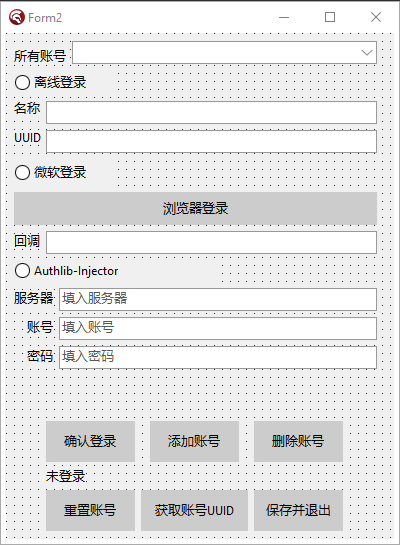
大概像我这么设计就可以了噢！！由于之前的工作空间失效，因此我换了一个工作空间，这个工作空间还没做完OAuth登录，但我们只需要注意下面的Authlib=Injector登录即可！
包括下面的重置账号，这个部分我们在下一章节将改名成刷新账号，因此，不要在意这些细节……
首先还是看到我们的代码部分：
噢，对了，在这里我要提一嘴，现在开始，的Account代码块中的所有注释，都可以全部松开了，不需要再用代码注释了！！
先声明一句：以下设置的任何请求头，我会在晚点与大家细细讲述，以便各位能够
//初始化外置登录
constructor Account.InitializeAccount(sn, un, pwd, ct, id, rr: String);
var
j1, j2, j3: TJsonObject; //此处设定三个JSON变量，后面我们有用的！
begin
var rs := Concat(sn, 'api/yggdrasil/'); //注意，这里的rs变量，我们需要把参数中的sn后面拼接上该皮肤站的元数据。为什么要这么写呢？晚点等写道实现部分时再说吧！
var rstb := GetWebText(rs); //紧接着，我们再设置一个变量，为rstb，意思就是Get服务器元数据所产生的回调文本。
if rstb = '' then begin //这里，如果获取的数据为空，则需要返回一个错误信息！
messagebox(Form2.Handle, '皮肤站元数据获取失败，你似乎输入错误了服务器地址，请重试。', '皮肤站元数据获取失败', MB_ICONERROR); //返回错误信息，并且将tat设置为noneaccount。
tat := 'noneaccount';
exit;
end;
var tb := TNetEncoding.Base64.Encode(rstb); //此处将获取的皮肤站元数据的Base64编码，这个后期我们会需要用到的！
if rr = 'refresh' then //重置外置登录的if判断块。如果外置登录需要重置，则调用rr为refresh
begin
rs := Concat(rs, 'authserver/refresh'); //这里将rs重定义为添加了authserver/refresh进行刷新账号，这个我们下一章再说。
//其中，我们会发现，这里的accessToken和clientToken的参数时un和pwd，这个我们后面再解释。
var k1 := Concat('{"accessToken":"', un, '","clientToken":"', pwd, '","requestUser":false,"selectedProfile":{"id":"', ct, '","name":"', id, '"}}');
//这里设定我们的请求头，我们的请求头需要这么设计！
var t1 := Account.GetHttpy(k1, rs); //随后调用我们的GetHTTPy即可获取到返回值。
j1 := TJsonObject.ParseJSONValue(t1) as TJsonObject; //这里，我们将用户的返回值进行JSON解析，并赋值给j1。
try //以上为直接post得到后的json，然后解析json。下面为直接获取json，如果没有皮肤，则换。但绝大概率是有皮肤的。
j2 := j1.GetValue('selectedProfile') as TJsonObject; //这里，我们对j2变量进行赋值我们json解析到的，获取起selectedProfile值，并转换成json。
tun := j2.GetValue('name').Value; //然后，我们通过j2变量获取name名称。以下均保存在tat、tuu、tun、tct、tbs等中，
tuu := j2.GetValue('id').Value; //直接将tuu设定为玩家id，也就是uuid。【这点我们之后再说】
tat := j1.GetValue('accessToken').Value; //这里的accessToken就是我们的老朋友啦！
tct := j1.GetValue('clientToken').Value; //这里多了一个新的键，clientToken，我们晚点说。
tbs := tb; //元数据base64编码
except //如果未能成功获取到任意值，则直接触发报错，然后以下是我们的老朋友了！
messagebox(Form3.Handle, '不好意思，您的账户并没有皮肤，你必须前往官网换个皮之后再来。', '暂未拥有，请前往官网换皮', +MB_ICONERROR);
tat := 'noneaccount';
exit;
end;
end else begin
//请求网址，这里设定的是我们的请求登录网址，这里是直接登录的！
rs := Concat(rs, 'authserver/authenticate');
//这里设定请求头，里面我们需要使用到username，也就是un，还有pwd，clientToken等。然后别的就默认就可以了！
var k1 := Concat('{"username":"', un, '","password":"', pwd, '","clientToken":"', ct, '","requestUser":false,"agent":{"name":"Minecraft","version":1}}');
var t1 := Account.GetHttpy(k1, rs); //这里我们直接获取请求返回值
j1 := TJsonObject.ParseJSONValue(t1) as TJsonObject; //然后，这里将我们的网址返回值用JSON序列化解析一下。
try //如果邮箱与账号不匹配，则返回。
j1.GetValue('accessToken').Value; //这里必须首先判断一次是否有accesstoken出现在返回网址中，如果没有，则判定为邮箱或密码输入错误。
except //以下调用输入错误的说法。
messagebox(Form3.Handle, '输入的邮箱与密码不匹配，请重新输入！', '不匹配错误', MB_ICONERROR);
tat := 'noneaccount';
exit;
end;//查询邮箱，如果邮箱里没有皮肤，则执行
var r1 := j1.GetValue('availableProfiles') as TJsonArray; //这里是获取所有皮肤的。
if r1.Count = 0 then //如果此时，请求的返回值里的availableProfiles值为空，则说明没有去皮肤站里下载过皮肤，需要去下载一次。
begin //此处对其报错提示。
messagebox(Form3.Handle, '你还未在皮肤站中选择任何一个角色，请试图选择一个角色之后再进行登录吧！', '暂未选择角色', MB_ICONERROR);
tat := 'noneaccount';
exit;
end else if r1.Count = 1 then begin //若皮肤站内仅仅只有一个皮肤，则登录后立刻只选择这一个皮肤。
j2 := r1[0] as TJsonObject; //这里获取到上述返回值中的r1的第1个元素【在编程中，0是1号的意思】，然后
tuu := j2.GetValue('id').Value; //再获取id
tun := j2.GetValue('name').Value; //这里将tun设定为找到的玩家名称
tat := j1.GetValue('accessToken').Value; //accessToken
tct := j1.GetValue('clientToken').Value; //clientToken
tbs := tb; //元数据base64编码
end else begin //若有多个皮肤，则执行
var st := TStringBuilder.Create; //这里设置一个字符串链接
for var I := 0 to r1.Count - 1 do
begin //首先，我们定义一个for循环，这个循环根据我们获取的用户数量决定循环次数。
j2 := r1[I] as TJsonObject; //首先获取到该用户的所有用户的数组中的i个元素。
st.Append(Concat(#13#10, inttostr(I + 1), '.', j2.GetValue('name').Value)); //利用简单的字符串拼接函数，链接获取的名字与序号
end; //然后，这里写上一个输入框，提示用户设置了多个用户，需要选择登录的用户是什么。
var s := InputBox('请输入角色序号', Concat('请输入你需要登录的角色序号：', st.ToString), '');
try //这里判断用户输入的是否超出范围，如果超出了范围，则抛出报错。
if (strtoint(s) < 1) or (strtoint(s) > r1.Count) then raise Exception.Create('Format Exception');
except //抛出报错
messagebox(Form3.Handle, '不要尝试在选择角色的时候输入错误的字符！', '字符输入错误', MB_ICONERROR);
tat := 'noneaccount';
exit;
end;
j3 := r1[strtoint(s) - 1] as TJsonObject; //这里根据用户选择的序号-1获取到对应的JSON
tuu := j3.GetValue('id').Value; //这里获取到选择的uuid
tun := j3.GetValue('name').Value; //name
tat := j1.GetValue('accessToken').Value; //accessToken
tct := j1.GetValue('clientToken').Value; //clientToken
tbs := tb; //元数据base64编码
end; //最后，添加外置登录账号完毕！！为所有的tuu、tun、tat、tct、tbs
end;
end;
请各位一定要将我上面写的代码单独复制进记事本里，关掉换行来看，因为里面的注释几乎说明了目前所有的代码块用途！！
好了，然后那些Get tuu、tun、tat、tct、tbs等方法，我就不写了，大家自己补上就好，里面其实就一个简单的result := tuu或者tun等。
至于为什么要这么写呢？我们上两章微软登录，直接看wiki.vg即可，但是这一章节Authlib登录，我一定要说明一下我是从哪里看到的对Get解析的文本的！我们来看看官网对于皮肤站的请求部分吧！
众所周知，皮肤站是一个很神奇的地方，皮肤站由各个皮肤站的玩家们搭建而成，而Authlib-Injector仅仅只是对这些获取这些皮肤站，对其的AccessToken进行校验，最终返回皮肤在游戏内。
这个网址里面有说我们应该POST哪个网址才能获取到真正的元api数据！
由于该以下我已经以尽可能的写好了Push或者Get后获取的JSON数据的解析，我这里就不写那些参数/描述了，大家自己看看就好咯！！
我们首先先来看这个：
POST /authserver/authenticate
这个的意思就是我们需要POST【https://littleskin.cn/api/yggdrasil/authserver/authenticate 】，在您皮肤站api元数据后方加上POST后面的一长串即可！
请求格式与是否会包含clientToken都已经写好给你了！clientToken我们只需要重置账号时用到，因此暂时保留……记住，皮肤站的请求格式很多都是JSON形式传递，因此需要把请求头设置成application/json才行噢！
官网是这么写的：
{
"username":"邮箱（或其他凭证，详见 §使用角色名称登录）",
"password":"密码",
"clientToken":"由客户端指定的令牌的 clientToken（可选）",
"requestUser":true/false, // 是否在响应中包含用户信息，默认 false
"agent":{
"name":"Minecraft",
"version":1
}
}
其中，我们需要把这一长串压缩成一行，就是这样！
响应格式也已经给你了！
{
"accessToken":"令牌的 accessToken",
"clientToken":"令牌的 clientToken",
"availableProfiles":[ // 用户可用角色列表
// ,... 每一项为一个角色（格式见 §角色信息的序列化）
],
"selectedProfile":{
// ... 绑定的角色，若为空，则不需要包含（格式见 §角色信息的序列化）
},
"user":{
// ... 用户信息（仅当请求中 requestUser 为 true 时包含，格式见 §用户信息的序列化）
}
}
我们其实无需使用requestUser=true的。。因此没有必要……
格式它让我们详见 §角色信息的序列化，我们可以点进去看看。
{
"id":"角色 UUID（无符号）",
"name":"角色名称",
"properties":[ // 角色的属性（数组，每一元素为一个属性）（仅在特定情况下需要包含）
{ // 一项属性
"name":"属性的名称",
"value":"属性的值",
"signature":"属性值的数字签名（仅在特定情况下需要包含）"
}
// ,...（可以有更多）
]
}
大概就是这样了，其中的properties我们也无需，我们只需要获取到用户的id和name即可！
好了，那么这个就是我们的登录函数了，下面我们就来看看如何写我们的按钮点击代码了噢！
首先，我们那几个小小的Edit就暂时先不用管，我们只需要管我们那些radiobutton该怎么按下，随后我们就在添加按钮事件中处理对应的代码即可！
//添加账号的按钮
procedure TForm2.Button4Click(Sender: TObject);
begin
... //上方微软登录的部分！
end else if RadioButton3.Checked then begin //替换。如果输入网址不符，则替换。
if messagebox(Handle, '在你使用外置登录的时候，登录过程也可能会卡很久，是否要继续呢？如果登录的AccessToken与RefreshToken都过期了的话，那么点击下面的重置账号按钮即可。', '需要资源下载，是否继续？', MB_YESNO+MB_ICONINFORMATION) = 7 then exit; //这里需要给个提示，当然不给也行。。
var er: String := Edit3.Text; //这里的Edit3指的是服务器地址！
if er.IndexOf('https') = -1 then er := er.Replace('http', 'https'); //如果在服务器地址上找不到https的话，用户输出了http，则替换http成https。
if er.IndexOf('https') = -1 then er := Concat('https://', er); //如果还是找不到https，就拼接一个https上去。
er := er.Replace('api/yggdrasil/', ''); //如果用户输入了api/yggdrasil的话，则将这个替换掉！
er := er.Replace('api/yggdrasil', ''); //这里替换两次，一个是有尾缀/的，一个是没有的！
if er.LastIndexOf('/') <> er.Length - 1 then er := Concat(er, '/'); //如果网址最后一个不是【/】的话，就拼接一个【/】上去。
var uidd := GuidToString(uid).Replace('{', '').Replace('}', '').Replace('-', '').ToLower; //随机获取一个无符号uuid
label8.Caption := '正在添加外置登录'; //上述无符号uuid用作clientToken。
TTask.Run(procedure //这里使用一个任务来执行网址请求。
begin
try //使用报错判定，如果请求失败则抛出报错。
taccm := Account.InitializeAccount(er, Edit4.Text, Edit5.Text, uidd, '', 'post'); //这里将网址【大约长这样：https://littleskin.cn 】然后尾缀是post，中间有个空字符串，因为这个是后期我们重置账号时填入玩家名称用的……
//首先，在我这个教程里，可能有时候很多功能并不是最简洁的。
tat := taccm.GetThirdAccessToken; //如果构造函数执行完毕，则返回玩家AccessToken。
if tat = 'noneaccount' then exit; //如果at没有账号，则为返回方法。
tct := taccm.GetThirdClientToken; //返回ClientToken。。【说实话这个完全不用返回，大家可以直接用上面的uidd。】
tun := taccm.GetThirdUserName; //返回用户名字。
tuu := taccm.GetThirdUUID; //返回用户真实的uuid。
tbs := taccm.GetThirdBaseCode; //返回皮肤站的元数据base64编码。
except //如果抛出报错，则执行。
messagebox(Handle, pchar(Concat('你的网络连接超时了，请连接之后再进行网络请求。或者如果你连接了，重试一次即可。')), '连接超时引发的报错', MB_ICONERROR); //如果网络连接超时，则直接在Account.InitializeAccount的时候就已经触发报错。
exit; //退出函数。
end; //给Array添加元素。
(AccountJson.GetValue('account') as TJsonArray).Add(TJsonObject.Create
.AddPair('type', 'authlib-injector') //设置json。这里的话，需要保存server、name、uuid、accessToken、clientToken和元数据base64。
.AddPair('server', er)
.AddPair('name', tun)
.AddPair('uuid', tuu)
.AddPair('access_token', tat)
.AddPair('client_token', tct)
.AddPair('base_code', tbs)
); //给下拉框添加元素
ComboBox1.ItemIndex := ComboBox1.Items.Add(Concat(tun, '（外置）')); //给下拉框添加元素。
Edit3.Text := ''; //将服务器、用户账号，用户密码的三个文本框调成空。
Edit4.Text := '';
Edit5.Text := '';
messagebox(Handle, '添加成功！', '添加成功', MB_OK+MB_ICONINFORMATION); //添加成功了！
end);
end;
end;
其中噢，先给大家提个醒，我给大家的示例代码里面，并没有任何一个可以锁住控件阻止玩家下一步操作的，而且也没有给玩家任何一个提示指现在已经执行到了哪里，无论是微软登录还是外置登录，都是一样的！因此，大家需要根据自己的需求来自定义各位的启动器噢！
我还是那句老话，我写教程只提供一个思路，具体实现步骤还得看每个作者自己实现的语言！
好了好了，下面我们就要开始启动游戏了！那么我们应该如何启动呢？很简单，我们来看这里：点我看网址
这篇wiki已经详细的说出了我们在启动游戏的时候应该添加什么JVM参数，什么额外参数的！
首先，在登录的时候，我们需要引导用户去下载一个Authlib-Injector这么一个jar文件，我们也可以通过启动器将该Authlib-Injector下载到本地。这里我先暂时不演示如何通过启动器下载文件，我们将在下载部分时说道。
那么，这里我们来看wiki中启动游戏这一章节，下面有个下载Authlib-Injector，我们找到【一个API】蓝色字体，点击它即可跳转到API下载界面！同时，bmclapi也对Authlib-Injector有支持！
一个API网址里面是这么说的：
入口就是https://authlib-injector.yushi.moe/
我们仅仅只需要在下方Get后方的网址拼接到入口的后面即可！
获取最新版本【获取版本列表一般我们不用……我们会用最底下那个获取最新版本的即可！】
使用Get请求，Get到latest的网址，紧接着我们看到这里的以下：
{
"build_number": 此版本的构建号, //一个Integer数字
"version": "此版本的版本号",
"download_url": "此版本的 authlib-injector 的下载地址",
"checksums": { // 校验和
"sha256": "SHA-256 校验和"
}
}
里面有一个名为checksums的，用来检验软件hash值得，然后download_url就是我们得authlib-injector下载地址啦！！然后，我们发现这里有一个版本号，version键值，这个是版本，我们可以将其保存到外部文件，将来我们学会了用启动器下载资源的时候，我们就可以判断版本号从而使Authlib-Injector一直保持最新版本了！！
然后，我们将这个下载地址下载下来，目前暂时没有学会用启动器下载，因此，我们将下载好的文件放到【exe目录\launcher\authlib-injector】目录下，晚点我会在启动游戏时，将路径设置到此处！
下载好了吗？下载好的话，我们就要开始启动游戏了！
首先，依旧进入我们的主界面，进入我们的启动游戏逻辑中噢！
此时此刻，我们的PlayerAuth已经不为空啦！我们就可以在这个代码块里面填入一些我们想要的东西啦！
procedure TForm1.Button1Click(Sender: TJsonObject);
begin
... //前面省略
if typetemp = 'offline' then begin //如果type键等于offline，则执行。
PlayerName := chooseAbout.GetValue('name').Value; //设置为name
PlayerUUID := chooseAbout.GetValue('uuid').Value; //设置为uuid
PlayerAcTo := PlayerUUID; //accessToken等于uuid
PlayerType := 'Legacy'; //type为Legacy。
PlayerAuth := ''; //为空
end //将末尾分号去掉。
else if (typetemp = 'microsoft') or (typetemp = 'oauth') then begin
PlayerName := chooseAbout.GetValue('name').Value; //设置为name
PlayerUUID := chooseAbout.GetValue('uuid').Value; //设置为uuid
PlayerAcTo := chooseAbout.GetValue('access_token').Value; //设置为accessToken
PlayerType := 'msa'; //type为msa。
PlayerAuth := ''; //为空
end
else if (typetemp = 'authlib-injector') then begin
var basecode := chooseAbout.GetValue('base_code').Value;
var server := chooseAbout.GetValue('server').Value;
PlayerName := chooseAbout.GetValue('name').Value; //设置为name
PlayerUUID := chooseAbout.GetValue('uuid').Value; //设置为uuid
PlayerAcTo := chooseAbout.GetValue('access_token').Value; //设置为accessToken
PlayerType := 'msa'; //type为msa。
PlayerAuth := Concat('-javaagent:', GetMCRealPath(Concat(ExtractFilePath(Application.ExeName), 'launcher\authlib-injector'), '.jar'), '=', server, ' -Dauthlibinjector.yggdrasil.prefetched=', basecode);
//首先，知道为啥要这么写不？在上面的网址中说了，拼接两个jvm参数进启动参数里，这不，一个javaagent和一个prefetched。前面的我也说得很明白了，就是这样哒！
end;
... //后面省略
end;
随后，启动！！你会发现自己已经成功外置登录了！！现在先创建一个皮肤站账号，然后添加一个皮肤，畅享我们的皮肤之旅吧！！
本篇教程将是最短的教程了！因为前面我们的工作已经做得非常完美了！
首先，我们得知道，在前面几个章节，我们已经做了充足的准备了，因此我们只需要做一个按钮用于刷新我们的账号部分，即可了！
众所周知，我们所有的启动验证令牌，也就是我们的AccessToken，其实是有时效性的，其中AccessToken有24小时，而RefreshToken有1个月，因此，我们需要让玩家在AccessToken过期的时候，及时让他们刷新启动令牌，否则启动游戏后会直接显示无法进入Realms和多人游戏啦！
首先，先给大家提个醒，在PCL2、HMCL、BakaXL等众多第三方启动器中，一般是会直接在启动游戏时先对网站进行判断是否过期，如果不是，则无需重置，如果是，则为玩家重置一次账号部分！但是我的示例教程启动器为了更加方便演示，我就直接用按钮写了……而且注意一点，我的启动器在启动时，不会检测AccessToken是否过期，将会直接拼接AccessToken。所以，判断AccessToken是否过期这种操作，就留给大家当作作业了，大家自己去看看wiki上是怎么写有关于判断过期的，我这里就不多说了哈！
我把微软的Microsoft登录，微软的OAuth登录以及Authlib-Injector登录的刷新都给大家写上去吧了，大家尽情观看吧！
//重置账号的按钮
procedure TForm3.Button7Click(Sender: TObject);
begin
if tp = -1 then
begin //判断是否登录过账号，如果暂未登录，则返回！
messagebox(Handle, '你还没有选择登陆任何一个账号，请选择一个然后再重置吧！', '暂未选择，请重试', MB_ICONERROR);
exit;
end;
var pdmic: Boolean;
var pdthr: Boolean;
var pdoah: Boolean;
try //判断是否找得到账号，同时判断是否为微软登录。
var acc := ((AccountJson.GetValue('account') as TJsonArray)[tp] as TJsonObject).GetValue('type').Value;
pdmic := acc <> 'microsoft'; //判断acc是否不等于microsoft，以下均是如此
pdthr := acc <> 'authlib-injector';
pdoah := acc <> 'oauth';
if pdmic and pdthr and pdoah then raise Exception.Create('Read Account Error'); //判断是否为微软或者外置。
except //此处，如果选择了离线登录的话，则跳出报错！
messagebox(Handle, '离线登录不能重置！', '离线登录不能重置', MB_OK+MB_ICONERROR);
exit;
end; //如果确认重置了的话，
if messagebox(Handle, '是否真的需要重置【微软/外置】登录？可能会需要等待久一点，不过你可以等的是么？', '是否需要', MB_YESNO+MB_ICONINFORMATION) = 6 then begin //选择重置
if not pdmic then begin //此时选中的是重置普通微软账号
var cpro: TProc := procedure begin
try //给其重置，定义一个accm变量，用于调用refresh_token。
var accm := Account.InitializeAccount(((AccountJson.GetValue('account') as TJsonArray)[tp] as TJsonObject).GetValue('refresh_token').Value, 'refresh');
var at := accm.GetAccessToken; //获取AccessToken，如果获取成功且不为noneaccount的话，则往下
if at = 'noneaccount' then begin
exit;
end;
var rt := accm.GetRefreshToken; //获取RefreshToken
var uu := accm.GetUUID; //获取UUID
var un := accm.GetUserName;
var sk := accm.GetHeadSkin;
((AccountJson.GetValue('account') as TJsonArray)[tp] as TJsonObject).RemovePair('name');
((AccountJson.GetValue('account') as TJsonArray)[tp] as TJsonObject).RemovePair('uuid');
((AccountJson.GetValue('account') as TJsonArray)[tp] as TJsonObject).RemovePair('access_token');
((AccountJson.GetValue('account') as TJsonArray)[tp] as TJsonObject).RemovePair('refresh_token');//删除键
((AccountJson.GetValue('account') as TJsonArray)[tp] as TJsonObject).AddPair('name', un);
((AccountJson.GetValue('account') as TJsonArray)[tp] as TJsonObject).AddPair('uuid', uu);
((AccountJson.GetValue('account') as TJsonArray)[tp] as TJsonObject).AddPair('access_token', at);
((AccountJson.GetValue('account') as TJsonArray)[tp] as TJsonObject).AddPair('refresh_token', rt);//增加键
messagebox(Handle, '重置成功！', '重置成功', MB_ICONINFORMATION); //重置完成时会有个信息框提示
except //如果获取不了，则抛出报错。
messagebox(Handle, '你的refresh_token似乎也过期了呢！请尝试删除账号，重新登录一次吧！当然啦，或许只是网络不好的原因吧。。', '依旧过期', MB_OK+MB_ICONERROR); //如果无法重置，则抛出一个报错。例如在InitializeAccount的时候出现错误。
exit;
end;
end;
TTask.Run(cpro);//使用一个另一线程执行以上操作。
end;
if not pdoah then begin
TTask.Run(procedure begin //这里用了一个更加简便的方式，直接用TTask.Run里面包住一个procedure，其实这就相当于C#中的lambda表达式啦！
try //这里，我们需要获取两个东西，第一个就是我们的client_id，第二个就是我们的refresh_token了，CLIENT_ID我们其实也是需要的噢！
var reftoken := ((AccountJson.GetValue('account') as TJsonArray)[tp] as TJsonObject).GetValue('refresh_token').Value;
var accm := Account.InitializeOAuth(CLIENT_ID, reftoken, 'refresh'); //依旧的……
var at := accm.GetAccessToken; //获取AccessToken
if at = 'noneaccount' then begin
exit;
end;
var rt := accm.GetRefreshToken; //获取RefreshToken
var uu := accm.GetUUID; //获取UUID
var un := accm.GetUserName;
var sk := accm.GetHeadSkin;
((AccountJson.GetValue('account') as TJsonArray)[tp] as TJsonObject).RemovePair('name');
((AccountJson.GetValue('account') as TJsonArray)[tp] as TJsonObject).RemovePair('uuid');
((AccountJson.GetValue('account') as TJsonArray)[tp] as TJsonObject).RemovePair('access_token');
((AccountJson.GetValue('account') as TJsonArray)[tp] as TJsonObject).RemovePair('refresh_token');//删除键
((AccountJson.GetValue('account') as TJsonArray)[tp] as TJsonObject).AddPair('name', un);
((AccountJson.GetValue('account') as TJsonArray)[tp] as TJsonObject).AddPair('uuid', uu);
((AccountJson.GetValue('account') as TJsonArray)[tp] as TJsonObject).AddPair('access_token', at);
((AccountJson.GetValue('account') as TJsonArray)[tp] as TJsonObject).AddPair('refresh_token', rt);//增加键
messagebox(Handle, '重置成功！', '重置成功', MB_ICONINFORMATION);
except
messagebox(Handle, '你的refresh_token似乎也过期了呢！请尝试删除账号，重新登录一次吧！当然啦，或许只是网络不好的原因吧。。', '依旧过期', MB_OK+MB_ICONERROR);
exit;
end;
end);
end;
if not pdthr then begin //这里，我们使用的是第三方登录噢！
var cpro: TProc := procedure begin //又用回老方法了……
try //这里我们就不定义变量了，采取换行的措施来搞！首先，我们获取了server，然后是access_token，然后是client_token，然后是uuid，然后是name。
var taccm := Account.InitializeAccount(
((AccountJson.GetValue('account') as TJsonArray)[tp] as TJsonObject).GetValue('server').Value,
((AccountJson.GetValue('account') as TJsonArray)[tp] as TJsonObject).GetValue('access_token').Value,
((AccountJson.GetValue('account') as TJsonArray)[tp] as TJsonObject).GetValue('client_token').Value,
((AccountJson.GetValue('account') as TJsonArray)[tp] as TJsonObject).GetValue('uuid').Value,
((AccountJson.GetValue('account') as TJsonArray)[tp] as TJsonObject).GetValue('name').Value, 'refresh'); //最后添加一个refresh，然后右括号结尾！
var ttat := taccm.GetThirdAccessToken; //是的，此时我们获取的是GetThirdAccesssToken，这个在上一章节我们没有说到，不过大家应该会自己写了吧……
if ttat = 'noneaccount' then begin
exit;
end;
var ttct := taccm.GetThirdClientToken; //剩下的都是老样子了……
var ttun := taccm.GetThirdUserName;
var ttuu := taccm.GetThirdUUID;
var ttsk := taccm.GetThirdHeadSkin;
((AccountJson.GetValue('account') as TJsonArray)[tp] as TJsonObject).RemovePair('name');
((AccountJson.GetValue('account') as TJsonArray)[tp] as TJsonObject).RemovePair('uuid');
((AccountJson.GetValue('account') as TJsonArray)[tp] as TJsonObject).RemovePair('access_token');
((AccountJson.GetValue('account') as TJsonArray)[tp] as TJsonObject).RemovePair('client_token');//删除键
((AccountJson.GetValue('account') as TJsonArray)[tp] as TJsonObject).AddPair('name', ttun);
((AccountJson.GetValue('account') as TJsonArray)[tp] as TJsonObject).AddPair('uuid', ttuu);
((AccountJson.GetValue('account') as TJsonArray)[tp] as TJsonObject).AddPair('access_token', ttat);
((AccountJson.GetValue('account') as TJsonArray)[tp] as TJsonObject).AddPair('client_token', ttct);//增加键
messagebox(Handle, '重置完成！', '重置完成', MB_OK+MB_ICONINFORMATION);
except
messagebox(Handle, '你的refresh_token似乎过期很久了呢！请尝试删除账号，重新登录一次吧！当然啦，或许只是网络不好的原因吧。。', '依旧过期', MB_OK+MB_ICONERROR);
exit;
end;
end; //这里还是一个TTask.Run。。
TTask.Run(cpro);
end; //但是其实，我倒是感觉这个TTask可以直接包在外面而不是包在里面，如果包在里面的话，我得用3个同样的代码块，而包在外面，里面用if-else的话，应该会简便一些代码……
end;
end;
好了，要说的代码其实也就只有这么点点，当我们点击刷新账号的按钮，然后点击保存并退出之后，我们就可以将新的AccessToken颁发给玩家用于启动游戏啦！！
还是那句老话，如果大家想在启动游戏时自动为玩家重置，大家大可以自行查询wiki，我就不多说了！好的咩！
2023.8.26解释：
鬼知道当初我为什么在前面声明三个bool变量，原来当初的我啥也不会啊……
离线皮肤适配原理
众所周知，在22w45a以上版本，Mojang更新了9种离线皮肤，其中包含了Sunny、Efe等名字的皮肤。然后我们应该如何适配这个新特性呢？
在此之前，我觉得我有必要来和各位启动器开发者们说一件事：
Mojang给我们提供了一种进入游戏时验证玩家身份唯一性的UUID值，如果进入同一个世界，但是UUID不一致，可能就会导致物品栏内的物品都不见。
如果进入的是正版服务器，则可能会导致玩家的所有道具全部删除等状态。即使如此，我们还会发现，那么如果是离线服务器呢？
离线服务器是根据玩家的UserName来在服务端创建一个ServerUUID，只要这个服务器不重启，或是不关闭，则无论玩家在哪台机子使用任意的客户端UUID，当使用该名称时，总是会获取玩家上次背包中的所有物品。
还有一件事，那就是正版用户使用的UUID，这个UUID由Microsoft独立提供的一个身份验证的UUID，也就是说这个UUID为你独特的UUID，所有人无法与你的重合。
那假如我使用离线登录，但是我的UUID填入某个正版用户的UUID，那该怎么办呢？
很简单，你会获取到该用户的正版皮肤与正版披风，仅此而已。我们先来看看PCL2是如何通过玩家正版用户名获取到正版皮肤的！
点击PCL2的设置 -> 游戏 -> 离线皮肤 -> 正版皮肤单选框，然后在里面输入【Zi__Min】，现在再回到你的PCL2主界面，选择离线登录，随便输入一个用户名，然后此时，你们会不会发现，自己的头像被更改啦？？
这就是Mojang对于UUID这个对于全球玩家唯一的统一标识符所代表的重要性了吧！
还有一种特殊的，那就是第三方外置登录，Authlib-Injector，这个是通过劫持Mojang与正版服务器的通讯，将其导入进自己的服务器里进行识别皮肤的，因此里面的UUID其实并不作为Mojang官方服务器里的UUID。这个与我们下面教的无关。
下面我们开始正式教如何适配离线皮肤
我们可以在我们的离线登录界面里设置一个下拉框，这个下拉框里面有【随机、Steve、Alex】等一堆设置，当然，粗细手臂的玩家我们也要设置噢！
具体如何操控UUID可以看看我发的这篇帖子，然后看看tdiant是怎么回答的！
通过上面那篇帖子，我们很容易可以看出，Mojang通过解析UUID将其转成一个hashCode，随后通过某种特殊的解析，解析出Minecraft的9种离线皮肤。
我们可以写一个这样的函数，用于将玩家输入的UUID转换成hashCode，当然，此处如果是专门使用Java制作启动器的作者们可以跳过这一段。我这里所针对的是【在自带的语言中没有UUID.hashCode这个方法的】。
我们用Delphi写一个下列函数
//用UUID强转成HashCode。（接受一个参数为UUID，类型是String）
function UUIDToHashCode(UUID: string): Int64; //返回一个long类型的数据，我这里用Int64代替。
begin
result := -1; //先设置返回值为-1
if TRegex.IsMatch(UUID, '^[a-f0-9]{32}') then begin //这里先使用正则表达式，判断输入的UUID是否符合预期。如果符合，则往下执行，反之直接返回-1。
var most := UUID.Substring(0, 16); //将该UUID从中间切开，第一个为UUID的前半部分。
var least := UUID.Substring(16, 16); //这个为UUID的下半部分。
var mostbin := ''; //设置一个前半部分的。
var leastbin := ''; //设置一个后半部分的。
for var I in most do begin //用forEach对UUID前半部分遍历。
if I = '0' then mostbin := mostbin + '0000' //如果循环到0，则mostbin加一个0000
else if I = '1' then mostbin := mostbin + '0001' //以下亦然
else if I = '2' then mostbin := mostbin + '0010'
else if I = '3' then mostbin := mostbin + '0011'
else if I = '4' then mostbin := mostbin + '0100'
else if I = '5' then mostbin := mostbin + '0101'
else if I = '6' then mostbin := mostbin + '0110'
else if I = '7' then mostbin := mostbin + '0111'
else if I = '8' then mostbin := mostbin + '1000'
else if I = '9' then mostbin := mostbin + '1001'
else if I = 'a' then mostbin := mostbin + '1010'
else if I = 'b' then mostbin := mostbin + '1011'
else if I = 'c' then mostbin := mostbin + '1100'
else if I = 'd' then mostbin := mostbin + '1101'
else if I = 'e' then mostbin := mostbin + '1110'
else if I = 'f' then mostbin := mostbin + '1111'
end;
for var I in least do begin //这里遍历的是后半部分。
if I = '0' then leastbin := leastbin + '0000'
else if I = '1' then leastbin := leastbin + '0001'
else if I = '2' then leastbin := leastbin + '0010'
else if I = '3' then leastbin := leastbin + '0011'
else if I = '4' then leastbin := leastbin + '0100'
else if I = '5' then leastbin := leastbin + '0101'
else if I = '6' then leastbin := leastbin + '0110'
else if I = '7' then leastbin := leastbin + '0111'
else if I = '8' then leastbin := leastbin + '1000'
else if I = '9' then leastbin := leastbin + '1001'
else if I = 'a' then leastbin := leastbin + '1010'
else if I = 'b' then leastbin := leastbin + '1011'
else if I = 'c' then leastbin := leastbin + '1100'
else if I = 'd' then leastbin := leastbin + '1101'
else if I = 'e' then leastbin := leastbin + '1110'
else if I = 'f' then leastbin := leastbin + '1111'
end;
//此时，mostbin和leastbin就是该UUID前半部分与后半部分的二进制，
var xor1 := ''; //设立一个临时变量。
for var I := 1 to mostbin.Length do begin //这个循环是对上述两个进行xor计算。
//具体xor是什么，请自行百度。
if mostbin[I] = leastbin[I] then begin
xor1 := xor1 + '0';
end else begin
xor1 := xor1 + '1';
end;
end;
var mostx := xor1.Substring(0, 32); //这里对第一次xor出来的值再次切割成两半。
var leastx := xor1.Substring(32, 32);
var xor2 := ''; //再设立一个临时变量。
for var I := 1 to mostx.Length do begin //再做一次xor计算。
if mostx[I] = leastx[I] then begin
xor2 := xor2 + '0';
end else begin
xor2 := xor2 + '1';
end;
end;
var ten: Int64 := 0; //最后将该二进制数据转换成10进制，用long类型的接收。
for var I := 1 to xor2.Length do begin
if xor2[I] = '1' then begin
ten := ten + Trunc(IntPower(2, xor2.Length - I)); //这里可能写的有点高血压，不过也差不多。。
end;
end;
result := ten; //将最后的10进制当作返回值返回。
end;
end;
好了，那么上面的UUIDToHashCode，只是一个将UUID转换成Int数字的一事。但是对于一个UUID的可能性远远比long类型所能装得下的数据来说，远远的超过了，因此总有至少n个UUID转换成long类型的数据是一样的。这点不可否认。
随后，我们来看看我们应该如何通过这个函数，来生成一个我们自己的皮肤解析吧！
首先，我们进入AccountForm这个类，然后我们新建一个函数，名为UUIDToAvatar，这个的意思就是当我们选中下拉框中的任意元素时，所可能触发的事件。
先在我们自定义的下拉框里设置这么几个元素【可以选择按照顺序，也可以选择不按照】：
alex-slim
ari-slim
efe-slim
kai-slim
makena-slim
noor-slim
steve-slim
sunny-slim
zuri-slim
alex-bold
ari-bold
efe-bold
kai-bold
makena-bold
noor-bold
steve-bold
sunny-bold
zuri-bold
其中，上述对应的，就是一个顺序。从alex开始，一直往下，所得到的index，就是我们的hashCode除以18得到的【余数】所对应的index。
我们直接开始上代码吧：
//根据序号获取UUID。
function TForm3.AvatarToUUID(num: Integer): String;
var
uid: TGuid; //首先置一个UUID的变量。
begin
while true do begin //使用循环遍历通过的num是否符合UUID。
CreateGuid(uid); //为UUID初始化。
var str := GuidToString(uid).Replace('{', '').Replace('}', '').Replace('-', '').ToLower;
//这里使用的是使用UUIDToHashCode对18进行取余操作，如果取出的余数为选择的num，则直接返回str，如果不是，则继续循环。
if (UUIDToHashCode(uuid) mod 18) = num then begin
result := str;
break;
end;
//如果不是，则继续循环。
end;
end;
好了，那么上述就是通过序号获取UUID。我们设立了一个参数，这个参数是Integer类型的，当然，我们是使用了UUIDToHashCode对18进行取余的。
大多数的编程语言使用的应该是【%】这个符号进行取余。但是Delphi是用mod进行取余的，各位不必在意这些细节。
那么我们应该如何使用这个AvatarToUUID呢？
很简单，我们看看下拉框改变事件：
procedure TForm2.ComboBox2Change(Sender: TObject);
begin
//这个Edit2指的是当初我们置下UUID那个输入框的。
Edit2.Text := AvatarToUUID(ComboBox2.ItemIndex);
end;
随后，符合玩家选择的皮肤的UUID就正式被我们获取到了！我们只需要点击添加账号，将UUID保存到外部文件，随后我们启动游戏试试吧！！
下面开始教大家如何通过正版用户名来获取正版用户的UUID。
我们很容易的就可以从wiki.vg里面，找到有关于mojang API的部分解说，其中有一段是通过api.mojang.com里面，通过正版用户的用户名来获取正版的UUID的。
但是此时，我们会发现一个问题，我们无法获取用户的大头像，这里仅仅只是获取到正版用户的UUID，也就是说我们必须得进入游戏之后才能看到自己获取的用户皮肤。
那么我们有什么API可以解决这件事吗？答案是有的！
我们可以通过playerdb来获取正版用户的UUID以及大头像。
我就用我自己的正版用户名来给大家做个示例吧：
GET https://playerdb.co/api/player/minecraft/rechalow
GET https://playerdb.co/api/player/minecraft/<正版用户名或正版UUID>
这个playerdb网址不仅支持正版用户名输入，而且支持正版用户的UUID输入，也就是说如果对方只告诉了你UUID而不告诉你正版用户名，你依旧可以查询得到。
{
"code": "player.found",
"message": "Successfully found player by given ID.",
"data": {
"player": {
"meta": {
"cached_at": 1697884012
},
"username": "Rechalow",
"id": "9b319bd5-2291-4c04-9017-60be25cf0331",
"raw_id": "9b319bd522914c04901760be25cf0331",
"avatar": "https://crafthead.net/avatar/9b319bd522914c04901760be25cf0331",
"name_history": []
}
},
"success": true
}
我们很容易的就可以发现，这里面有我们的基本用户信息。
我们也可以把上述API地址换成如下：
GET https://playerdb.co/api/player/minecraft/9b319bd522914c04901760be25cf0331
返回结果与上述一致。
我们来挨个辨析里面的所有参数： |键值|描述| |----|----| |code|API返回代码，通常用于辨认此时用户获取到的是什么。| |message|API返回描述信息，用于描述此时获取到了什么。| |success|是否返回成功。通常用个if判断，如果API库里面没有这个正版用户名，则返回false| |data|返回的用户数据对象。| |data.player|玩家数据| |data.player.meta|玩家元数据，（我不知道里面是什么东西，如果有知道的，可以给我发issue。）| |data.player.username|玩家用户名| |data.player.id|玩家真实的UUID| |data.player.raw_id|玩家的无符号UUID| |data.player.avatar|玩家的大头像历史| |data.player.name_history|玩家的历史用户名【由于Mojang在API里去除了at时间戳，因此这个作废。】|
上面的表格清晰的指出了上述API的所有返回信息是怎样的。
下一步，我们将继续来看看如何在代码中获取上述API。【请注意，上述API确实为mojang公开的API，但并不代表玩家可以随时随地查看别的正版用户所更换的皮肤，请酌情适用。】
首先，我们在离线登录旁边置一个按钮。名称为：【通过正版用户名称获取正版用户皮肤】，当然大家也可以自行选择如何置这个按钮。随后敲以下代码：
由于篇幅关系，这里不再赘述如何直接获取正版用户大头像了，大家只需要知道该大头像是180x180像素的，大家自己用自己的语言内置的图像解析器来编写获取用户大头像吧！
procedure <名称随便乱取啦……我也忘了是按钮几号啦……>();
begin
var a := GetWebText('https://playerdb.co/api/player/minecraft/' + Edit1.Text);
//先获取网址里的内容。
var uuid := (((TJSONObject.ParseJSONValue(a) as TJSONObject)
.GetValue('data') as TJSONObject)
.GetValue('player') as TJSONObject)
.GetValue('raw_id').Value;
Edit2.Text := uuid;
end;
欸对，也就是这么简单。如果你还想有更高深的玩法的话，可以在窗口上设置一个图片框，随后在玩家离线登录的同时，获取该用户的大头像。【请记住，这个地方是通过用户的UUID来获取头像，而不是仅仅通过用户名来获取，因为Minecraft最终解析皮肤不是通过Username来解析的。】，如果success为true。则将该大头像放入图片框。如果success为false，则按照默认9种离线皮肤为玩家创建大头像。
具体如何置图片框，这里不多赘述，大家自行准备！好了，话就说到这里，开始下一章吧！
请注意！上述方式仅适用于单人游戏，作者不保证该种方式是否可以用于多人联机。如果你在与朋友联机的时候，使用了上述自建的UUID方式，而未能正确获取到正确的正版皮肤，则不是作者的问题！
本章目的
- 教会大家如何从网络上下载MC
- 教会大家支持多线程下载
- 教会大家处理任何有关模组加载器的下载
- 教会大家校验hash与文件完整性
- 教会大家启动自己下载后的MC
本章节我们将继续学习制作MC启动器！
本章将教会大家获取mc的元数据并将版本和下载链接解析到列表框中。
首先，还是老样子，我们先写一份UI窗口吧！
在我们的主界面窗口上创建这么一个打开下载窗口的控件：
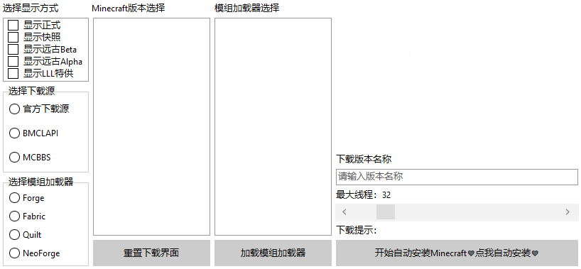
是的，你没看错，启动器下载窗口就是这么简单！
首先让我介绍一下左边的空间吧！
首先，左边第一个控件是一个checkboxlist，意思就是复选框列表，我们可以通过： CheckboxList.Checked[<数字>]来获取到一个boolean值，然后获取到该复选框是否被选中了。
这里面有一个LLL特供，这个的意思是供玩家搜集一些MC原版meta无法取得的版本，例如生存测试等。同时，这个地方大家也可以自制一个收藏夹的！这里我就不多赘述了，大家自己去尝试一下吧！【我们在下方写的代码，都是按照这里的CheckListBox只有4个值来定的，我懒得改文档结构了。。】
其次，我们再来看看下面两个框，其实就是一个GroupBox + RadioButton啦！我们完全可以使用这几个来判断选中的下载源是什么，以及选用的模组加载器是什么。
然后嘛，我们的右侧就是我们的Minecraft版本选择啦，这里我们在进入窗口的第一次，我们就得要获取到所有的Minecraft版本，我们会根据这个选中的值来进行下载。
再接着，我们的重置下载界面，这个是用于重新Get一次我们的MC元数据，然后接着下载。类似于PCL2的下载部分左侧的Minecraft一个螺旋按钮，用于重置MC元数据。
再接着，就是我们的下载版本名称了，众所周知，任何一个启动器都是可以自定义下载名称的，我们可以为我们每一个下载的版本定义一个美美的名称。
再接着，就是我们的最大线程了，这里我们使用的是一个ScrollBar滑动条控件，这意味着我们可以直接拖动滑动条来设定最大线程噢！我们滑动条滑动的时候，上方的Label也会变的噢！
再接着，就是我们的下载提示。但其实这个Label框本来也就一点用处也没有，因为我们晚点会设置一个DonwloadProgressForm，专门用于存放我们的下载须知部分。
最后一个，就是我们的开始安装了！点击这个按钮，就会自动从左边推断出所需要下载的版本，随后就可以直接开始下载安装，完全不必管它了！
那好的，我们首先在我们的type里新建一个initDownload过程，这个过程用于初始化我们的下载部分。我们首先先来看看里面应该怎么写吧！
【具体如何创建initDownload函数，我就不写了，大家可以看看前面的章节。】【不仅如此，我也不打算写如何在主窗口中显示这个下载窗口的代码了，大家自己用自己的语言写就好了！】
我们首先先看看以下代码：
procedure Form3.initDownload();
begin
try //判断单选框和复选框
tsd := strtoint(LLLini.ReadString('Version', 'SelectDownloadSource', '')); //这里有个tsd变量，这个变量我们会设定成全局变量的。大家就自己声明了！
//在别的语言中声明全局变量，就写个public int tsd = 0;就好了！【Java举例】
if tsd = 1 then begin //我们在上方读取了配置文件，这里我们判断配置文件中的值是否为1，如果为1，则写1。
//以下全部都是全局变量，在implementation顶上的var下面写上名字: 类型即可。类型全部都是String。
//具体以下值为什么意思，晚点再说！
mcwe := 'https://piston-meta.mojang.com';
forwe := 'https://maven.minecraftforge.net';
fabwe := 'https://maven.fabricmc.net';
quiwe := 'https://maven.quiltmc.org/repository/release';
forme := 'https://maven.minecraftforge.net';
fabme := 'https://meta.fabricmc.net';
quime := 'https://meta.quiltmc.org';
neome := 'https://maven.neoforged.net/releases';
radiogroup1.ItemIndex := 0; //这里直接将源的选择设置成0，也就是目前第1个官方源元素被选中了。
end else if tsd = 2 then begin
mcwe := 'https://bmclapi2.bangbang93.com';
forwe := 'https://bmclapi2.bangbang93.com/maven';
fabwe := 'https://bmclapi2.bangbang93.com/maven';
quiwe := 'https://maven.quiltmc.org/repository/release';
forme := 'https://bmclapi2.bangbang93.com/maven';
fabme := 'https://bmclapi2.bangbang93.com/fabric-meta';
quime := 'https://meta.quiltmc.org';
neome := 'https://bmclapi2.bangbang93.com/maven';
radiogroup1.ItemIndex := 1; //这里是1，也就是第二个BMCLAPI源
end else if tsd = 3 then begin
mcwe := 'https://download.mcbbs.net';
forwe := 'https://download.mcbbs.net/maven';
fabwe := 'https://download.mcbbs.net/maven';
quiwe := 'https://maven.quiltmc.org/repository/release';
forme := 'https://download.mcbbs.net/maven';
fabme := 'https://download.mcbbs.net/fabric-meta';
quime := 'https://meta.quiltmc.org';
neome := 'https://download.mcbbs.net/maven';
radiogroup1.ItemIndex := 2; //MCBBS源
end else raise Exception.Create('Format Exception');
except //这里设置默认值，如果第一个strtoint无法解析的话，就在这里写默认。
tsd := 1; //默认的tsd是1。以下全部都默认是官方源。
mcwe := 'https://piston-meta.mojang.com';
forwe := 'https://maven.minecraftforge.net';
fabwe := 'https://maven.fabricmc.net';
quiwe := 'https://maven.quiltmc.org/repository/release';
forme := 'https://maven.minecraftforge.net';
fabme := 'https://meta.fabricmc.net';
quime := 'https://meta.quiltmc.org';
neome := 'https://maven.neoforged.net/releases';
LLLini.WriteString('Version', 'SelectDownloadSource', '1');
radiogroup1.ItemIndex := 0;
end;
try //这里我们将配置文件中的ShowRelease一直到ShowAlpha给选中了，意思就是配置文件中如果为True的话，则选中这个CheckListBox元素。
//这里可能对于新手不是很理解，为什么在Delphi中的CheckListBox是这么选的呢？点上一个Checked，然后选择元素后再赋值bool值呢？
//我也不知道，大家就这么看就好嘛……能选就好！
//这里的tsr、tss、tsb、tsa都是全局变量！
tsr := strtobool(LLLini.ReadString('Version', 'ShowRelease', ''));
checklistbox.Checked[0] := tsr;
except
tsr := True;
LLLini.WriteString('Version', 'ShowRelease', 'True');
checklistbox.Checked[0] := True;
end;
try
tss := strtobool(LLLini.ReadString('Version', 'ShowSnapshot', ''));
checklistbox.Checked[1] := tss;
except
tss := False;
LLLini.WriteString('Version', 'ShowSnapshot', 'False');
checklistbox.Checked[1] := False;
end;
try
tsb := strtobool(LLLini.ReadString('Version', 'ShowOldBeta', ''));
checklistbox.Checked[2] := tsb;
except
tsb := False;
LLLini.WriteString('Version', 'ShowOldBeta', 'False');
checklistbox.Checked[2] := False;
end;
try
tsa := strtobool(LLLini.ReadString('Version', 'ShowOldAlpha', ''));
checklistbox.Checked[3] := tsa;
except
tsa := False;
LLLini.WriteString('Version', 'ShowOldAlpha', 'False');
checklistbox.Checked[3] := False;
end; //这里我们没有为LLL特供提供一个选中，这个特供其实就是将下载网址导入进启动器制作者们自己制作的网址中，大家可以自行选择是否需要。
TTask.Run(procedure begin //这个函数之前你们一定见过，这里只是启动一个线程来对网络进行获取。
webjson := GetWebText(Concat(mcwe, '/mc/game/version_manifest.json'));//这个函数是根据填入的网址对网络Get获取的返回文本。
//上述的webjson也是一个全局变量噢！
SoluteMC(tsr, tss, tsb, tsa); //解决MC版本（为列表框内加上MC的全版本。） 这里是一个自定义函数，稍后会给各位详解！
end);
end;
截至目前，BMCLAPI已经正式对NeoForge提供支持了！具体添加时间是【2023.8.22】。而本篇教程始撰写日为2023.10.1。【ps：看我咕了多久……】不过放心吧！将来BMCLAPI引入Quilt之后，我会再来更新这一章的！
首先，我们在程序一旦点击了下载部分窗口的时候，立刻初始化了一次MC版本。而且我们也只是仅仅只是Get了一次MC版本罢了。
我们仅仅只是为玩家进入该下载部分时Get一次MC原版的meta文件，并未对其进行任何的文件输出等。大家也可以通过保存外部文件的方式达到保存用户的输入数据什么之类的。
那么这里的初始化下载部分就说这么多，然后重置下载部分那一点代码就交给各位自行实现了吧！这里不再赘述了。
下面我要说的是SoluteMC这一部分的代码，其实这里面有4个参数，但是这4个参数为我以前写代码时的高度耦合代码，现在完全不需要了【因为有了全局变量。】那既然有了全局变量，而我这里也已经这么写了……还能怎么硕呢？将就着看吧……
首先我们需要先去看看MC官方的网址JSON获取结构是什么！我们点开这个网址
这里面是官方的MC获取JSON的结构，我们看到有latest代码块，里面有个release和snapshot。但是我们目前暂时不需要这个对象，我们往下看，下面还有一个列表！
这个被称为【versions】的列表里，有着所有的MC版本，其中还有发布时间等。
我们来看看结构如何：
{
"latest": {
"release": "1.20.2",
"snapshot": "1.20.2"
},
"versions": [
{
"id": "1.20.2",
"type": "release",
"url": "https://piston-meta.mojang.com/v1/packages/b994a7ad16326530c7a67e1b700fcd6fb86e1497/1.20.2.json",
"time": "2023-09-21T15:00:12+00:00",
"releaseTime": "2023-09-20T09:02:57+00:00"
}
...一堆别的东西……
]
}
其中，我们需要遍历versions下的所有代码块，提取出里面的id与url键，如果还想增加版本分类，还可以提取出release键。如果想知道发布时间，我们还需要提取出releaseTime键。
大概思路就是这样！我们直接开始写吧！
procedure SoluteMC(rel, snap, beta, alpha: String);
begin
ListBox1.Items.Clear; //清空列表框信息。
urlsl.Clear; //urlsl也是一个全局变量，是一个TStringList类型的。用于存放所有的下载地址。
if webjson = '' then begin //如果webjson为空，则直接失败。
ListBox1.Items.Add('MC导入失败，请重试。'); //为列表框内增加失败。
exit; //退出方法
end;
var Rt := TJsonObject.ParseJSONValue(webjson) as TJsonObject; //将webjson解析成json。
var JArr := (Rt.GetValue('versions') as TJsonArray); //获取versions下的所有元素
ListBox1.Items.BeginUpdate; //开始为列表框内添加元素。
for var I := 0 to JArr.Count - 1 do begin //以下皆为判断版本
var JTmp := JArr[I].GetValue<String>('type'); //直接获取type键。
if rel and (JTmp = 'release') //如果rel选中了，并且type为release，则执行一次以下。
or snap and (JTmp = 'snapshot') //以下同感！
or beta and (JTmp = 'old_beta')
or alpha and (JTmp = 'old_alpha')
then begin
ListBox1.Items.Add(JArr[I].GetValue<String>('id')); //为列表框内添加id键。
urlsl.Add(JArr[I].GetValue<String>('url')); //为下载地址列表添加url键。
end;
end;
ListBox1.Items.EndUpdate;
end;
至此，本篇结束！
其实，所有的函数如何调用，都是得通过开发者自己设定的！如此，列表框内已经能够成功显示了！
大家一定要仔细的看文中是否出现过【全局变量】几个字，如果出现了，则证明这个是一个全局变量。全局变量的意思各位用自己的编程语言也是一定可以实现的！这里就不多赘述了！
这一章节我将教会大家初步体验下载Libraries的实现！
这一章节不仅仅是介绍下载Libraries，而且会介绍解析原版json并且下载原版jar的功能。这点在后期下载Forge的时候可能会稍有不同。
首先，要想知道如何下载Libraries，我们只需要知道一件事即可很轻松的下载了！
其实，在启动一章节中，我已经很明确的写了一个函数名字叫【ConvertNameToPath】，这个函数用于将版本json中的libraries键下的name键转换成path。
然而事实远远没有想的那么妙，在Forge以及一些老版本的MC中，我们很清楚的知道部分列表里是没有artifact键的，甚至有一些是只有name键在里面，而别的什么键都没有。
如此，我们就需要用到上述的函数了！
我们先来看看MC在1.16.5里面的版本json文件吧！这里我们只看一个键值（因为别的键值没有代表性。。）
{
"downloads": {
"artifact": {
"path": "org/lwjgl/lwjgl/3.2.1/lwjgl-3.2.1.jar",
"sha1": "2bb514e444994c6fece99a21f76e0c90438e377f",
"size": 317748,
"url": "https://libraries.minecraft.net/org/lwjgl/lwjgl/3.2.1/lwjgl-3.2.1.jar"
},
"classifiers": {
"natives-macos": {
"path": "org/lwjgl/lwjgl/3.2.1/lwjgl-3.2.1-natives-macos.jar",
"sha1": "5a4c271d150906858d475603dcb9479453c60555",
"size": 39835,
"url": "https://libraries.minecraft.net/org/lwjgl/lwjgl/3.2.1/lwjgl-3.2.1-natives-macos.jar"
}
}
},
"name": "org.lwjgl:lwjgl:3.2.1",
"natives": {
"osx": "natives-macos"
},
"rules": [
{
"action": "allow",
"os": {
"name": "osx"
}
}
]
},
这是其中一个libraries下的键值，我们可以很轻松的看见，里面是有downloads -> artifact键值的，但是我们需要考虑一种情况，假如没有这个键值应该怎么办呢？
或者还有downloads -> classifiers这个键值，这个键值的意思指的是MC需要解压的natives本地库文件。这个我们在启动一章的时候说过了，我们需要检测这里面的classifiers键值来解压本地库。这个同样也是需要我们下载的！
我们首先来看artifact键值，可以看到里面有4个键值，第一个是path，这个的意思是保存目录的意思，通常保存在{minecraft}\libraries{path}中。
下一个键值是sha1，这个我们目前先不用理会，后期我们会有专门的一章：【校验文件的hash值】这一章会着重讲解这个键值。
下一个是size，这个的意思是该文件总大小，也就是TotalSize，并不是指的是占用大小噢！我们后期教到多线程下载的时候，会根据这个值对网络文件进行切分下载。
下一个是url，这个键值是一个完整的url形式的键值，我们可以从该url中下载到该库。
再接着，我们再来看看下面的classifiers键值，我们可以看到里面有一个【natives-macos】，这个的意思就是这个本地库是苹果系统专属的类库，我们在Windows操作系统上暂时不需要它。
但是这里有个问题，这里有个键名，这个键名就是natives-macos，那么这个键名我们又该如何获取呢？
很简单，我们可以看看在这一整个代码块中有一个natives键，这个键里面会有【osx、windows、linux】3种键值，我们可以直接读取里面的键值，然后就可以读取classifiers下的键值了！
我们接着看下面有个rules键，这个键想必之前我在启动那一大章讲过了，这个是用来判断该库适用于什么操作系统的，拿我的示例来说，这个的意思其实就是only macos的意思。
介绍了这么多，想必各位应该懂得了启动器应该怎么解析这些库并且提取出URL了吧！
噢，对了，我们还需要一个下载进度条显示的窗口，这个窗口我们依旧单独设立一个：
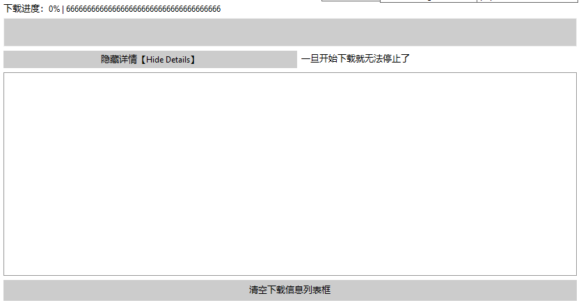
这个窗口里面，我们设置了一个【隐藏详情】，其实就是把列表框隐藏掉，这样在遍历文件的时候会更快一些。
然后还有一个清空列表框。下载进度提示标签，下载进度条和一个Tips。
下面我会给大家打一段代码，详细教教应该怎么弄：
//Button1是开始下载的按钮。
procedure TForm3.Button1Click(Sender: TObject);
begin
//前面省去了一些判断列表框里的元素以及最大线程滑动条是否输入正确的代码。
//在这里，我们使用versionPath和minecraftPath来表示{minecraft}\versions\{versionname}和{minecraft}根目录的意思。
//这里的versionPath是由【{minecraftPath}\versions\】加上窗口文本框里的文本拼接而成的
//上述，大家可以自行尝试制作一个版本管理部分来实现替换这两个变量的代码噢！
//这里省去了判断（
if not DirectoryExists(versionPath) then ForceDirectories(versionPath);
//此时版本文件夹应该还没有生成。这里判断文件夹是否存在，如果不存在则强制生成一次。
Form4.Show; //这里直接将下载进度条框给展示出来。
if ListBox2.ItemIndex <> -1 then begin
//TODO：制作加载器等的安装。
end else begin //only原版
TTask.Run(procedure begin //定义一个线程。
Form4.ListBox1.ItemIndex := Form4.ListBox1.Items.Add('已检测出下载的是：原版');
end);
end;
end;
切记，上述出现了一句话：【省去了判断】，这个的意思就是说以下【变量/函数/过程】我们本来就是从始至终都没有在教程中出现的，需要各位自己根据本教程的注释内容进行替换。所以大家自行查看原文的代码注释中是否出现了这一句噢
随后，我们单独在那个else代码块里面开始写代码【因为我们现在主要是教下载原版】
var jurl := urlsl[Form3.ListBox1.ItemIndex]; //获取下载链接
//这里本来应该有一个判断，因为我们需要删除{minecraftpath}\versions\{versionpath}下的所有文件，因此我们可能需要设置一个信息框让用户点击确定。
DeleteDirectory(versionPath); //这个函数的意思是删掉该文件夹，包括文件夹里面的所有文件的函数，各位用自己熟悉的编程语言实现一次就好了！
if not DirectoryExists(versionPath) then ForceDirectories(versionPath);//这里我们重新生成一次该文件夹。如果文件夹的确不存在的话。
case tsd of //使用case判断下载源。这里仅仅只需要
1: Form4.ListBox1.ItemIndex := Form4.ListBox1.Items.Add('已检测出下载源：官方源');
2: begin
jurl := jurl.Replace('https://piston-meta.mojang.com', 'https://bmclapi2.bangbang93.com');
Form4.ListBox1.ItemIndex := Form4.ListBox1.Items.Add('已检测出下载源：BMCLAPI');
end;
3: begin
jurl := jurl.Replace('https://piston-meta.mojang.com', 'https://download.mcbbs.net');
Form4.ListBox1.ItemIndex := Form4.ListBox1.Items.Add('已检测出下载源：MCBBS');
end;
end;
支持NeoForge自动安装
由于前面几个版本我已经忘记了我啥时候发布的了，因此以7.29日为止，我将记录我每次教程的更新日志！
0.0.1：【2023.7.29】
- 更新了23w14a及以上版本新增的启动参数。
0.0.2：【2023.8.9】
- 更新了Authlib-Injector外置登录教程。
- 同时修改了前面几乎所有的启动游戏章节【包括但不限于（如何获取jvm、arguments参数）、（离线登录）、（微软登录）、（微软OAuth登录）等好几个部分】，建议大家往回看一下……
0.0.3：【2023.8.11】
- 将重置账号章节改名为刷新账号，并且更新了刷新账号内容，同时，增加了部分小提示，例如【AccessToken的时效性等】。
0.0.4：【2023.8.26】
- 摸鱼完毕，修复了微软登录、微软OAuth登录、第三方外置登录的一系列请求部分的描述。
- 在总的Intro.md中，写上了阅读须知。
- 在微软OAuth登录中，添加了最新注册的Client ID需要去mojang申请的注释。
0.0.5：【2023.10.4】
- 更新了获取MC元数据一章节！
- 将【登录部分】改名成【账号部分】。
0.0.6：【2023.10.17】
- 修改了目录结构，将支持多线程下载放到了下载assets和下载libraries后面。
- 在开始界面写上了MCBBS帖子和KLPBBS帖子以做宣传。
- 更新了下载Libraries一章节！【好像还没写完，只写了一点点。。】
- 更新了22w45a以上版本的9种离线皮肤适配原理。
0.0.7：【2023.10.18】
- 紧急修复一个bug，在微软账号登录部分，应该将user_type改成msa而不是Mojang。
- 修复上一个版本未加撰写时间。
0.0.8：【2023.10.21】
- 还没肝完Library，准确来说是一点没动。不过在【离线登录皮肤】一章节中，新增了通过playerdb获取正版玩家的皮肤等。
0.0.9：【2023.11.11】
- 最近一直在制作LLL启动器，没时间更新教程了。但是现在将教程里存在的fandom链接全部改成了minecraft.wiki了。
0.0.10：【2024.1.19】
- 在【如何获取jvm、game参数】一章节的末尾，添加了一个适配optifine的代码。。都怪PCL2！！都怪HMCL！！
- 修复了一下ConvertNameToPath函数和GetMCAllLibs函数。在如何获取cp-library值一章节。